| 乙女♥新撰組～恋する秘剣 (美少女文庫) | |
| みかづき 紅月 | |
| フランス書院 (2008) | |
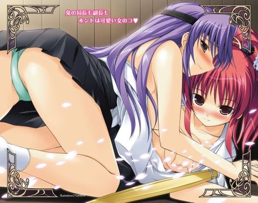
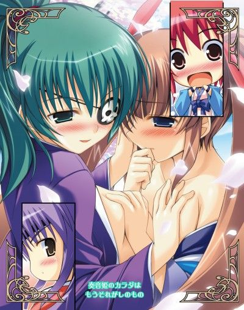
乙女新撰組～恋する秘剣
みかづき紅月
イラスト／YUKIRIN
プロローグ 沖田奏音の脱退
第一幕 近藤心梨 ＊剣士のハートを励まして＊
１ おっぱい遊び
２ 高ぶる心
３ 宣戦布告
第二幕 土方カレン ＊誇り高き？看護ご奉仕＊
１ 嵐の前
２ ぶつかる想い
３ 看護してあげますわ
４ 騎乗位でイッて
第三幕 奏音姫 ＊囚われの姫と百合の剣士＊
１ 籠のなかの......
２ 快感と決意
第四幕 柳生朱羅 ＊すべて捨てても欲しい心＊
１ 謀反
２ 本当の気持ち
第五幕 乙女新撰組 ＊三者三様ラブ模様＊
１ 決戦のあと
２ 奏音×朱羅
３ 心梨×肇
４ ＋カレン×義雄
エピローグ みんな一緒に
プロローグ 沖田奏音の脱退
黄緑から移ろいつつある紅葉が重なり合い風に揺れる。そんな様子を縁側から眺めて、そっと目を細める背の低い少女の姿。
「もう何度目の秋だろねー」
浅葱色の羽織を身にまとった少女は、ひどく大人びた表情をしている。
道場のほうからは、賑やかな声が聞こえてくる。
その声に幸せそうに耳を傾けながら、彼女はしんみりと呟いた。
彼女の足もとにでっぷりとした猫が体を擦り寄せ、しゃがれた声で鳴く。
「そろそろ約束のとき――。もうあたしがいなくても大丈夫。ね、タマ」
猫に語りかけるようにそう言うと、彼女は腰に提げた刀を鞘ごと引き抜いた。
そのまま、その場に正座すると、目の前に刀を置く。
しばらく、無言のまま刀に相対する。
それは、まるで刀と語り合っているかのようで――
耳を打つ静寂があたりに訪れる。
「――今までありがとう」
いつも笑顔しか見せない少女が、このときばかりは真顔で言った。
そのまなざしには、とある強い決意が見てとれる。
彼女は、刀に向かって深々と頭をさげた。
ゆっくりと顔をあげたその先に、背が高い青年――いや美青年と見まがう女性がすっくと立っていた。
ボリュームのある髪を高い位置で無造作に結いあげている。
闇色の着流し姿をしているが、上半身をあらわにし、豊かな胸もとをさらしで覆っている。
剥き出しとなった肩や背中は、よく鍛えられており紅葉の刺青が彫られている。
黒色の衣装と対照的な鮮やかな紅の色合いが目を惹き、その右手に持った煙管もあいまってどこか傾いた印象を見る者に与える。
腰には二本の刀を提げていることから、二刀の使い手だとわかる。
だが、ひときわ目を惹くのは、彫りの深い美貌を覆う眼帯。
左目を覆った眼帯には、髑髏の紋様が浮き彫りにされている。
ついさっきまでその場には誰もいなかったはずなのに。
だが、一陣の風のように現われた彼女に奏音は驚かない。
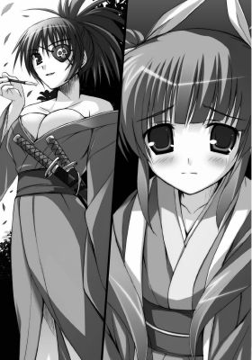
「柳生。ご苦労様です」
「――姫。お迎えに参上しました。某、どれほどこの日を待ち焦がれたことか」
性別不詳の低く涼やかな声が柳生と呼ばれた女の唇から紡がれた。
柳生朱羅――男顔負けの凄腕の剣客として、侍たちの間で知らない者はない。
「わかっています。戻ります。約束ですもの」
一瞬、奏音の顔が苦しげに歪んだ。
だが、すぐさま彼女は平静を装い、浅葱色の羽織を脱ぐと、慈しむように折りたたんで刀の前へと置いた。
羽織の背の中央には誠の文字が白で染め抜かれている。
「沖田奏音はたった今死にました。沖田の苗字は捨てます」
少女は目を伏せて、荘重に言い放つ。
沖田奏音――乙女新撰組のナンバー三であり、参謀役兼ムードメーカー。
今この瞬間まで沖田奏音だった少女は、縁側へとそっと降り立った。
その手をキザったらしく恭しくとると、朱羅はその場にひざまずいた。
「奏音姫、お帰りなさいませ」
「ただいま戻りました。では、城へ――」
「御意」
奏音の手の甲に唇を押し当ててから、朱羅が彼女の身体を横抱きにする。
そのまま、軽やかに地を蹴ると、その場から忽然と姿を消した。
あとに残されたのは新撰組の羽織と一振りの刀のみ。
それは、あまりにも突然すぎる「沖田奏音」の死だった。
大勢の人で賑わう道場の真んなかに一人の少女の姿があった。
浅葱色の羽織にたすき掛けをし、刀を中段に構えて周囲に鋭い眼光を走らせる。
目鼻立ちがくっきりしており、爽やかなポニーテールが目を惹く少女だ。やや童顔だが、その胸は大きく、ヒップも豊かに張っている。
彼女こそ、乙女新撰組局長、近藤心梨。
目には見えない殺気が全身からほとばしり、彼女へと刀を向け、周囲を取り囲む少女たちを近寄らせない。
一定以上の間合いを取ったまま膠着状態がつづいている。
「――次っ！」
心梨が鋭く叫ぶと、「局長！ お相手お願いします！」と、一人の少女が、意を決して一礼し、左の軸足に力をこめて刀を振りあげざま大きく前へと出た。
「やぁあああっ！」
気合もろとも、真正面から挑む。
心梨は一歩ほど横にすり足で移動し、真上から振りおろされる刀を刀の腹で軽く押さえて軌道をずらす。
そのまま、その小柄な身体で体当たりを食らわして、挑んできた彼女を他の少女たちへと押しかえす。
「きゃあっ」
少女が倒れこんできたため、他の少女たちが小さな悲鳴をあげる。
だが、同時に、その周囲の少女たちがいっせいに動いた。
「せやぁあああああああああああっ！」
中央に構える心梨一人を相手に、無数の切っ先が振りおろされる。
だが、心梨はあわてない。
すっと息を吸いこんだかと思うと、中腰になり刀を下段に構え、目を閉じて神経を集中する。
刹那、かっと目を見開くや否や、刀を真横に一閃させた。
いや、正確に言えば、身体を回転させざま、刀を一周させたのだ。
鮮やかなターンに、心梨へと襲いかかった少女たちの動きがとまる。
次の瞬間、少女たちの羽織の胸もとが裂け、白い乳房があらわになった。白く弾む柔肉の中央に咲き誇る二つのピンク色の蕾の数々。
少女たちはあわてて胸を覆うと、その場に座りこんでしまう。
「きゃぁあああんっ」
「いやぁああ、局長のエッチー」
「............」
甲高い悲鳴を耳にしながら、心梨は大きなため息を一つつくと、少女隊士たちをきつく睨みつけて鋭く叫んだ。
「たわけっ！ なにを言うか！ 今の一太刀、私が本気を出しておれば、おまえたちの命はなかったのだぞ！」
「......す、すみません」
局長に叱られた少女たちは口を尖らせてうつ向いてしまう。
その瞳にはうっすら涙すら浮かんでいる。
だが、心梨は容赦なく彼女たちを厳しく叱責する。
「まったく。おまえたち、最近、気が緩んでおるぞっ！ 稽古であるからいいものの、実戦の場では悪霊は手加減などしてくれぬ。死にたくなければ、たった一つの油断も許されぬのだぞ！」
局長、近藤心梨率いる乙女新撰組は、京の都の霊的な治安を司る集団であり、現在京を治める徳山将軍の管轄下にある。
「悪霊とはなにか！ 重々承知しておろうっ！ 左乃！ 今一度答えてみろ」
「――はっ！ 十年前、京を襲った大火災の際に犠牲になった子供たちの無縁仏のことです」
「そうじゃ。当時、幕府は全国から優秀な子供たちを集め、寺子屋で英才教育を行なっておった。脱走を防ぐためにと、四方を高い塀で覆われた寺子屋でじゃ。大火災が起こった際、多くの子供たちは逃げそこね命を落とした。生き残った子供たちはわずか――」
心梨は遠い目をすると、重々しい口調で少女隊士たちに語りかける。
隊士たちは顔を引き締めて、局長の言葉に耳を傾ける。
「我々の任務は、彷徨える哀れな子供の魂を救済すること。だが、哀れといえども情けは無用。子供は無邪気ゆえに残酷な生き物。先日の事件も知らぬとは言わせぬぞ。西の長屋に住む一家が惨殺された。それも、子供の悪霊の『遊び』に付き合わされたためにじゃ」
その場に居合わせた全員が息を呑む。
先日、悪霊が引き起こした惨事は確かにひどいものだった。
新婚したての夫婦が、コマをまわす紐で首を絞められ、事切れていたのだ。
普段賑やかでおしゃれに余念のない少女隊士たちが、今一度局長の言葉に自分たちの使命の重要性を再確認する。
「気合を入れなおせ。最近、入隊希望者が増えておる。先輩となるおまえたちがしっかりしなくてはならぬのだ。よくよく心得ておくように」
「はいっ！」
少女隊士たちは、声を合わせて言うと、その場に正座して畏まって深々と礼をした。
と、その場に似つかわしくないのんびりとした声がかけられる。
「朝稽古やめー！ 朝餉の準備ができましたー」
拍子木の音が道場に響き渡る。
それを聞くや否や、今までしょんぼりとしていた少女たちの顔がぱぁっと輝いた。
立派な眉毛が頑固そうな印象を与える青年が、道着の上から割烹着を身につけ、しゃもじを左右に振って道場の戸口に立っている。
けっして、ウケを狙っているわけでなく、彼は大真面目に割烹着を着ているのだ。
彼のアンバランスなその格好に少女たちは忍び笑いをもらす。
笑われた当の本人は、なぜ自分が笑われるのか、その理由もわかっていない様子で首を傾げる。
そんな彼の様子を目にした途端、心梨は頭が痛いと言わんばかりに額に手を当て、やれやれと肩を竦める。
途端に、彼女から立ち昇る殺気がなりを潜める。
「――肇、今、説教中じゃ。わきまえろ。朝餉はあとにしろ」
「失礼ながら、もう説教は終わったと思い、お声かけした次第です」
負けじと言いかえす彼は、局長相手にも怖気づくことはない。
胸を張って正面を見据え、堂々としている。
彼の名は斎藤肇――少女ばかりからなる乙女新撰組に例外的に入隊した二人の男子のうちの一人である。
「まだ説教は終わっておらぬ」
「ですが、もう朝餉の時間です。と、一分少々過ぎてしまいましたが。同じことを延々とつづけてもあまり意味はありませんし。朝餉にしましょう。規則は絶対です」
「......相変わらずお堅いヤツじゃな。規則は規則だが、時と場合に応じて、柔軟に対応するべきであろう」
そう言った途端、今まで笑いをこらえていた少女隊士たちが思わず吹きだしてしまう。
と、心梨の白い頬が紅潮し、肩をいからせて隊士たちに牙を剥く。
「こら！ なぜ笑う！ 私を愚弄するか!?」
「ぷぷっ。だ、だって、局長......。局長だって、いつも『規則は規則』って言い張ってばかりいるじゃないですか」
「人のこと言えないっていうか......。自分のこと棚にあげてるんですもんっ」
「な、な、なにぃっ。むぅう......。わ、私は断じてそんなことは......」
心梨はそこまで言うと、眉をハの字にして押し黙ってしまう。
なんと言ったらいいか思いあぐねているようで、あーとか、うーとか言いながらも、なかなか次の言葉が出てこない。
普段の自分を振りかえって、確かにと認めざるを得ない様子だ。
しばらくして、心梨はつんと顔を横にそむけながら刀を鞘へとしまった。
「ふんっ！ まあ、いい。時は金なり。さっさと朝餉にするぞ」
彼女が赤毛のポニーテールを後ろに払う様子を見て、少女たちの笑い声はいっそう大きくなるばかり。
「ぷっ。局長っ、萌えっ！ 可愛すぎですっ」
「っていうか、まじめクンと局長って似すぎなんだもん。あはは、おっかしー」
「ななっ！ この私が下っ端の肇と似ているだと!? ありえぬ」
隊士たちにからかわれればからかわれるほど、心梨はムキになる。
普段、鬼の局長と呼ばれ恐れられている彼女の面影は微塵もない。
からかわれても流せばいいだけなのに、生真面目な彼女はつい本気で食らいついてしまうのだった。
それが隊士たちにとってはたまらないらしく、少女隊士たちはますます調子に乗って、局長いじりに精を出す。
「いやいや、そっくりですって。お似合いですよ～」
「な、な、な、なななっ！ おまえたち、からかうなっ！」
「あー、局長、顔真っ赤～。図星だったりします？」
「だ、断じて違うわっ！ 肇、今日の朝餉はなんじゃ」
話の矛先を逸らそうと、うろたえつつ肇に助けを求める心梨。
肇は、彼女を助けてやろうと神妙にうなずいてみせると、言葉をつづける。
「塩むすびと味噌汁です。味噌汁の具は、局長の好きななめこと豆腐です」
だが、その言葉は逆効果だった。
「愛妻料理ってやつぅ？」
「あはは、言えてるぅ～。愛こもってるよねー」
すかさず、隊士たちの突っこみが入り、肇も心梨も耳まで真っ赤になってしまう。
「こら、なぜに肇が私の妻じゃ！ 肇は男だ！ 妻になどなろうはずもない」
心梨が、がうっと牙を剥く。
「えー、だって、局長甲斐性ありそうですし～。下手な男よりかっこいいし、強いじゃないですかぁ」
「ええいっ！ 黙れ黙れ！ 無駄口叩いている暇があったらさっさと刀をしまって朝餉の席につけっ」
再び、鈴のような笑い声があたりに満ちる。
以前よりもずっと賑やかになった彼女たちの様子を眺めている女性が戸口に背中をもたせかけていた。
「――局長。いいですわ。激しく萌えますわ」
うっとりと言う彼女の腰のあたりまで伸ばしたラベンダー色の髪は艶やかで、よく手入れが行き届いている。
大ぶりの乳房によく引き締まったウエストに大きなヒップ。
男の理想ともいえる抜群のスタイルの持ち主は、深くスリットが入った着物を着ており、やや太めの太腿を惜しげもなく晒している。
乙女新撰組の副長、土方カレン。
彼女の育ちのよさをうかがわせる高貴な顔立ちが朱色に染まっていた。
「ははっ。妬けますねえ」
洗濯物を籠いっぱいに抱えた男が、そんなカレンにウインクしてみせる。
「あら、善雄。わたくしと局長との関係を妬いたりするんですの？」
善雄と呼ばれた男は、優男まんまという顔をしている。
やや垂れ目で顔立ちは整っているほう。飄々とした雰囲気はいかにも軽そうだ。
「そりゃ多少は。でも、邪魔しようとは思いませんよ。俺なんかよりもずっと前から培ってきた信頼関係をどーのこーのする気はさらさらないっスから」
籠の中身――少女たちの色とりどりの下着を物色する善雄の頭を拳で殴ってから、カレンは意味深なことを言った。
「ふふふ、それは賢明な判断ですわ。そうね、あとでご褒美をあげましょう。昼の休みにわたくしの部屋までいらっしゃい」
「まじっすか？ 久々だから、かなり激しいかも。覚悟しててくださいよ」
彼女の言うことを察した善雄の目が野性味を帯びる。
そのＳ性を滲ませた声に、カレンの胸がとくんっと高鳴り、子宮あたりが疼く。
頬に滲んだ朱が面積を増してゆく。
だが、彼女は動揺を見事に押し隠し、口端をあげて彼に挑むように答える。
「......っふ、望むところですわ。わたくしだって負けませんもの」
その女王然とした言い方に善雄は身震いする。
「ってか、肇も馬鹿だよなあ。俺たちみたいにうまくやればいいのに。あれじゃ、二人の関係がだだ漏れだっての」
隊士たちに囲まれていじられている幼なじみを呆れたふうに見る。
「まあ、あれはあれでよいでしょう。皆の笑い声で隊の雰囲気も和みますわ」
「へえ......。カレンさん、変わったスね」
「そう？」
「前だったら、目ぇ三角にして怒ってたじゃないっスか。風紀を乱すとかって」
「それ以上に得られるものが大きいとわかったならば考えも変わるというもの」
カレンはそう言うと、ふっと笑みをもらす。
「新撰組に入隊者が殺到しているのは善雄も知っているでしょう？ あなたたちがやってきて、新撰組は変わりましたわ」
「まあ、確かに、前までは京の住民にも恐れられていましたからねえ。まあ、悪霊たって見た目子供の姿まんまですから。退魔の術とかうさんくさげな術を使って子供を斬るようにしか見えないですしね。当然か――」
「ええ、京を護っているにもかかわらず恐れられていた。それは仕方のないこととわたくしも局長も考えていた。だが、あの子は諦めていなかったのね」
カレンはそう言うと、切れ長の瞳を細めた。
「あー、沖田隊長のことっスね？」
「ええ、あなたたちが手にしていた瓦版、実はわたくしたちに隠れて奏音が刷ってたんですわ」
「ほー、それを京から旅立つ旅人に渡して、行く先々の村に配っていたと。それでうちの田舎にも新撰組のことがひろまっていたんスね」
「ええ、それにしたって『なぜなに☆乙女新撰組 其の五十六号』って、もう五十六号も刷っていたとは。今までなぜ気づかなかったのかしら......」
「まあ、それこそ隊長の手腕ですし。それに、局長もカレンさんも猪突猛進なところあるっスからね。まわりが見えなくなるっていうか」
善雄がしれっと言うと、カレンは半目になって顔をひきつらせる。
「あーら、減らず口を叩くのはこの口かしら」
彼女が容赦なく善雄の頬を力いっぱいつねる。
顔をしかめつつもちょっぴりうれしそうな善雄。
カレンの女王様然としたしごきによる洗礼を受け、ちょっとイケナイ一面も開発されつつあるのも相変わらずのようだ。
ややあって、カレンが独り言のように呟いた。
「あの子はそういう子だから。きっと、こうなることをわかってて。一人隠れて工作してたんですわ。まったく憎々しいったら」
「沖田隊長って策士ですからねー」
「もう少し、わたくしたちを頼ればいいのに！――身体も弱いのにいつもいつも無理をして――」
「まあ、そういう性格、わからなくもないっスけどね？ 局長も副長もわりとそうじゃないですか？ 似たもん同士じゃ？」
善雄が正確に自分たちの性格を分析していることに少々驚きながらも、カレンは歌うように言った。
「ふふ、どうやら、かっこつけたがりが多いようですわね」
腕組みをして、一人うなずく。
と、そのときだった。
「たっ！ 大変ですっ！」
和気藹々とした道場に、突如悲鳴じみた声が響き渡る。
そのただならぬ様子に場の空気が凍る。
「――どうした！ なにがあった？」
心梨がきりりと顔を引き締めると、道場に倒れこんできた少女のもとにひざまずいて彼女の顔を覗きこむ。
乙女新撰組を束ねる局長らしく、動揺を表に出さずに静かにもう一度尋ねた。
「申せ。大丈夫。私がついている。落ち着け」
「こ、これがっ。縁側にっ。隊長がっ！」
少女が震える手で、一振りの刀と浅葱色の羽織とを心梨へと差しだす。
やや短めに拵えてある刀を見た途端、その場の全員が息を呑む。
「沖田隊長の――。隊長になにがっ!?」
「刀は武士の魂。それをなぜ......。奏音になにがあったのだ」
「――隊長のことです。なにかヒントとなるものでも残しているのでは？」
肇の声にはっと我にかえった心梨は、羽織をくまなく調べる。
内心、動揺している自分を察し、さりげなく助けの手を差し伸べてくれる肇に感謝しながら。
ともすれば手が震えてしまいそうになる。
だが、局長らしくあらねばという気持ちが、彼女を奮い立たせる。
心梨は気丈に唇を噛みしめて、震えをこらえる。
と、一通の書状が羽織の袖のなかから出てきた。
それを目にした途端、再び道場に衝撃が走る。
「なんじゃと――」
書状には、流れるような筆跡でこう書かれていた。
脱退届願――
その文字を目にした途端、心梨は絶望の淵に追いやられる。
乙女新撰組には護らねばならない厳格な規則、局中法度がある。
そのなかの一つ――
一、局ヲ脱スルヲ不許
すなわち、隊士の脱退は認めないということ。
そして、局中法度を破ったものは、粛清しなければならない。
心梨は、参謀として頼っていた奏音が、重大な規律違反を犯したという事実そのものがとても信じられない。
「――局長」
いつの間にやら、肇とカレンが心梨の傍にやってきて彼女を気遣う。
はっと我にかえると、心梨は浅い呼吸を数度繰りかえした。
そして、ぐっと下腹部に力を入れると、凛とした声で隊士たちに告げた。
その表情には、なんの感情も浮かんでいない。
「沖田奏音を局中法度を破った裏切り者として、局長である私自ら粛清する」
冷徹ともとれるその台詞に、誰もなにも言えずにうつ向いてしまう。
つい先ほどまでの明るさが嘘のようだ。新撰組に暗雲が垂れこめる。
そんななか、肇と善雄は互いに顔を見合わせてうなずき合う。
今こそ、局長と副長の支えにならねばと。
それこそ、彼女たちの彼氏である自分たちの役割だと。
言葉にしなくても、腐れ縁の二人の気持ちは通じ合っていた。
第一幕 近藤心梨 ＊剣士のハートを励まして＊
１ おっぱい遊び
局長、副長を支える参謀にして隊のムードメーカーでもある奏音が突如姿を消したことにより、ここ数日、新撰組内にピリピリした空気が張りつめている。
不安は少女隊士たち全員にひろがっていた。
心梨もカレンも動揺を押し隠し、普段となんら変わらないように気丈に振る舞っている。
幕府から命じられる退魔の任務も滞りなく行なっている。
一見、いつもと変わらない日常ではあるが、誰もそんな上っ面の「作られた日常」なんか信じていない。
鍛錬後、井戸の周囲に集まり、汗ばんだ身体を井戸水で濡らした手ぬぐいで拭きながら、少女隊士たちは文字通り井戸端会議に夢中になっていた。
局長たちがいないことを確認して、胸に巣食う不安をまぎらわそうとするかのようにおしゃべりに興じている。
「なんで隊長、どっか行っちゃったのかな？」
「私たちを捨てたのかなあ」
「そんなことないよ！ 隊長はそんなことする人じゃない。私、信じてるもん！ 隊長にはあんみつの恩義もあるし！ 団子の恩義もあるし！ タイ焼きの恩義もあるもん！」
「あんた、食べ物の恩義ばっかじゃない」
「他にもいろいろあるよ。任務に失敗したときさ。局長に叱られてへこんでいたらさりげなく励ましてくれたり......。あたし、隊長についてくって決めたのに。だから一番隊に入れてすっごくうれしかったのに......」
つぶらな瞳の少女が、目に涙を浮かべつつ重いため息を解き放つと、女の子たちの会話は一瞬途絶えてしまう。
ため息にため息が重なる。
「脱退願ってなにが書かれていたんだろ？」
「てか、局長たち、大丈夫かなあ......。一番ショックなのは局長たちでしょ」
「あれさ、絶対に無理してるよねえ......」
そんな少女たちの会話を少し離れた場所で肇と善雄とが肩を並べて聞いていた。
不意に、真顔で善雄が肇に言った。
「なあ、ちょっとだけなら覗いてもいいか？」
「副長に殺されてもいいなら、俺はとめん」
腕組みをしあぐらをかいた肇は、眉間に皺を寄せて責めるような口調で答える。
「......っち。相変わらず真面目すぎんだよなあ。肇は～。覗きくらい浮気のうちに入らねーだろ」
「たった一人の相手を真っ正直に想い、想われるべきだろ？」
かっと目を見開き、善雄を睨みつける。
こうと決めたら絶対に揺るがない。そんなまっすぐな決意をたたえた瞳に真一文字に引き結ばれた口もとは子供の頃から変わっていない。
善雄は苦笑しながら、同郷の幼なじみに言葉をつづけた。
「そりゃわかるけどよ。それとこれとはまた話が違うってーかよぉ。そこにおっぱいがあれば、男としては断固覗くべきじゃねえか？」
おっぱい星人を自称する彼ならではの主張に肇は大仰なため息をつく。
「てか、そうじゃないだろ？ 今考えるべきことは――」
「んー。でも、俺、こういう重苦しい雰囲気って苦手なんだよなあ。妙に肩に力入ってもうまくいかねーだろ？」
と、背伸びしながら善雄は言う。
「確かにそうかもしれないが......。なんとかせねば......。局長、また殻に閉じこもってどうにもこうにも......」
「そっちもかあ。副長もツンツンマックスだぜ？ まあ、それもいいっちゃあいいんだがなあ」
しばらくの間、二人は沈黙する。
ややあって、肇が重い口を開いた。
「局長たちの本心を聞きだして、その本当の願いを叶えてやりたい。自分を騙してあんな無理ばかりしている局長たちを見たくない......」
実直な彼らしい言葉に善雄は笑みをこぼす。
「だな。隊長の脱退届願の内容も局長たちしか知らねえわけでさ。下っ端たちにはなにが起こっているのか、これからどうなるのかまったくわからねーわけで。ただでさえ、新入りが入って、これから団結していかねばってときに不安がひろがっている。それもマズイ」
一見、限りなく軽い善雄だが、くさっても医者の息子だけあり頭はいい。時折、肇が感心するような考えを口にする。
どちらかといえば、肇は局長たちと同じように猪突猛進タイプであり、視野が狭くなりがちなため、けっして口には出さないが、内心善雄に感心する。
「まずは頑なになった心をほぐさねばならないか。だが、女心というものは、いまだによくわからん！ ちょっとしたことで笑ったり泣いたり......。うーむ」
「なあに、わかろうとするからだめなんだよ」
肇と肩を組んだ善雄がニヒルな笑みを浮かべて片目をつぶってみせる。
「女心なんて絶対にわかるわけねえんだから。感じるしかねえんだよ」
「ほうほう、なるほど。深いな」
もっともだと何度も深くうなずく肇。
完全に善雄のペースに乗せられているが、本人は気づいていない。
「わかり合うためには言葉も大事かもしれねえ。でも、言葉よりももっと大事なものがあるだろ？」
「心と心かっ！ なるほどな」
肇の言葉を即座に善雄が否定した。
「ちげーよ！ 身体だよ身体――」
「っむ」
善雄の言葉を耳にした途端、肇が体を硬直させる。
眉を吊りあげてなにかを言おうと口を開いたが、すぐに閉じてしまい、もごもごと口のなかで言葉をもてあます。
「そ、それは、確かに。否定はできぬが......。だが、こんなときに不謹慎では」
「ばーか。こんなときだからこそだろ？ あの二人は責任感が強すぎるんだ。今はいったん局長と副長っていう肩書きを忘れさせてやらなきゃな。それは俺たちにしかできねえことじゃねえか？」
「......そ、そそ、それは確かに」
「なわけで、局長のことは頼んだぞ。カレンさんのことは俺に任せておけ」
「お、おう......」
二人はそう言うと、固く握手を交わした。
いつもはわりとうんざりとしがちな腐れ縁を互いに内心ありがたく思う。
地面に二人の長い影が伸びている。
気がつけば、いつの間にか空の端に滲んでいたオレンジ色の光が薄らぎ、天頂から無数の星を縫いつけた藍色のヴェールが柔らかにかぶさりつつあった。
京の中心部からはるか離れた西に位置する嵐山。
闇夜のなか、鋭い声が響き渡る。
「――せいっ！ はぁああっ！」
研ぎ澄まされた刀身が、月明かりを弾く。銀色の光が翻り漆黒を切り裂き、ぎらりぎらりと光る。
晴れ渡った夜空の下、燃える髪を持つ少女が、まるでなにかに憑かれたように刀を縦横無尽に振るう。
浅葱色の羽織をひらめかせ、彼女が刀を振るうたび、竹が斜めに分断され、上半分がずれ落ちてゆき地面へと沈み倒れていった。
と、不意に何者かの気配を彼女は感知した。
反射的に、その方向めがけて駆ける。
高い位置で結いあげたポニーテールが風になびく。
大きくジャンプして、彼女は刀を振りかぶった。
全身のバネを使い、のびやかな肢体を反らして、刀を真上から真下へと振りおろす。
その先には得体の知れない一つの影――
「局長。俺ですっ」
「――なっ」
切羽つまっていながらもどこかのんびりしたその声を聞いた途端、心梨は刀をとめた。
影の主は、彼女こと心梨の世話役兼彼氏でもある肇だった。
肇は、眉間に刀の切っ先を突きつけられたまま、冷や汗をかきながらもあらためて心梨を尊敬する。
すんでのところで切っ先がとまる。
全身の力をこめた本気の一撃をすんでのところでとめることができるのは、よほどの手練れの証。
ふっと安堵の吐息を放つと、心梨は鮮やかな手つきで刀を鞘へとしまった。
「なぜおまえがこんなところをうろついておるのだ。私は確かに嵐山に向かうと言ったが単独任務と言いおいたはずだ。その意味はわかるだろう？」
「最近の任務は、えらく遅くまでかかるものばかりだなと思って。今夜はさすがに迎えにきました」
「......阿呆。私がやられているとでも思ったか？ 見くびるな」
相変わらず口は悪い心梨だが、肇を見つめるまなざしには照れが、声には戸惑いが滲んでいる。
それに気づいた肇は苦笑しながら、彼女に手を差し伸べた。
「さあ、もう任務は終わったんですよね。帰りましょう」
「むぅう......」
心梨が口を尖らせて、彼の手をとることを躊躇していると、彼のほうから彼女の小さな手を握りしめてきた。
「ぬ、は、肇......。ついでに私はもう少し鍛錬をして――」
「はいはい、戻りましょう。明日も朝早いんですから。局長の体調管理も世話役の務めですから」
「ぬぅうう......」
肇に手を引っ張られながら、心梨が困り顔でうなる。
だが、彼はかまわず山道をおりてゆく。
月明かりがあるとはいえ、木々に遮られ足もとは暗い。夜の山道をゆくのは危険極まりない。
それでも、肇はしっかりとした足取りで心梨を先導してゆく。
彼の手を感じ、心梨の心音が高まる。張りつめていた気持ちが凪ぐのを感じる。
しかし、それとは裏腹に手のひらは汗ばんでしまう。
それが恥ずかしくて、心梨はいっそのこと手を離してしまおうかとも思う。
それに気づいた肇は、死ぬほど恥ずかしがり屋な彼女のために敢えてそれを指摘はせずに、代わりに握る手に力をこめる。
それに気づいた心梨の胸がいっそう高鳴ってゆく。
しばらくして、山のふもとまでやってきたところで、心梨が肇へと尋ねた。
「で、どこへ行く？ 屯所はそっちではないぞ」
「ちょっと寄り道していきましょう。ついでなんで」
「明日、朝、早いんじゃなかったか？」
「少しだけ俺に付き合ってください」
「――仕方ないな」
やがて、小さな門が見えてきた。土作りの塀からは見事な紅葉の木の枝が折り重なり、交錯している様が見てとれる。
繊細な葉が重なり合い、なんとも言えない陰影を生みだしている。
月明かりで色はわからないが、空に大きく枝をひろげた紅葉の木々に心梨は圧倒されてしまう。
勝手知った場所のように、肇は門の閂を抜き、門の下をくぐり抜けた。
門の脇には「善入寺」と表札が出ていた。
「ここ、気に入ってて。いつか心梨と一緒に来たいなって思ってたんです。ちゃんと住職には許可もらってるんで。大丈夫です」
「――そ、そうか」
心梨が真っ赤になってうつ向いて呟いた。落ち着かなく目を瞬かせる。
肇は、二人きりのときは彼女を下の名前で呼ぶようになっていて。
彼に名を呼ばれるとき、彼女の顔から局長の仮面が剥がれ落ちる。
だが、今夜の彼女は、それを躊躇しているようだった。
生真面目な顔を必死に繕って、肇のあとにつづく。
紅葉の木が生い茂る庭園内の細い道を二人は手をつないで歩いてゆく。どちらともなく自然とスピードが落ちる。
それがなんだか以心伝心な感じがして、二人の口もとに笑みが滲む。
通路以外の地面は柔らかな苔で覆われていて、月明かりのなか静かに佇んでいる。
静まりかえった寺の庭園を二人は心静かに歩いてゆく。
やがて、本堂につづく階段に二人は腰をおろした。
そこからは庭園を見渡せるようになっており、二人は首を周囲に巡らせて、ほうっと感嘆のため息をもらす。
「夜桜ならぬ夜の紅葉というのも風流じゃな」
「そうですね。夜に来たのは初めてですが。朝や昼も綺麗なんですよ。燃えるような真っ赤な紅葉に苔の黄緑色が映えて――」
「――なるほどな。それは見たいものだ」
「いつでも見られますよ。では、ちょっと待っててくださいね」
そう言うと、肇は袂から椀を取りだしてその場に置く。
それとは別に、懐紙を取りだすと、なかから餅を出して二つに割った。
箸を取りだしてなかからあんこを取りだすと椀に入れる。
そうしておいて、本堂のなかへと消えてゆくと、しばらくして彼は急須と茶筒と湯飲みを持ってきた。
先ほどの椀に湯を注いで、あんこをかき混ぜる。
ややとろみがついてから、あんこを包んでいた餅を椀に入れて、心梨へと差しだす。
「ん？ なんじゃこれは」
「懐中しるこですよ。どうぞ」
「ほう......」
不思議そうに椀に目を落とし、心梨はそっと口をつけてみる。
さっぱりとしたこしあんと、表面を包んでいた餅との相性が抜群で。
心梨は目を細めて、口いっぱいにひろがる上品な甘味に舌鼓を打つ。
「うむ、うまいな」
張りつめた気持ちが、甘味によって和らぐのを感じる。
「よかった。はい、お茶もどうぞ」
「うむぅ」
急須の蓋を開け、余ったお湯に緑茶の茶葉を入れて蓋をして少し蒸らしてから、肇は湯飲みに注いで心梨へと手渡す。
「――肇は食べずともよいのか？」
「俺はいいんですよ」
「いやだめじゃ」
そう言うと、心梨はあんこと餅とを箸でつまんで、肇へとぶっきらぼうに突きだした。
「いいって言うのに」
「いいから食べろ。こぼれてしまう」
「それじゃお言葉に甘えて」
肇が口を開くと、そのなかに心梨が箸をねじこむ。
まるで怒っているかのように仏頂面で、時折、肇を上目遣いに見てはまた目を逸らす。
「あー、やっぱりおいしいって話題の品だけありますね」
「なに？ 肇は食べたことがなかったのか？」
「俺は自分に贅沢は禁じてるんです。俸禄はできるだけ田舎に送ろうかと」
「――そうか」
それなのになぜ？ という無粋な問いかけを心梨は呑みこむ。
代わりに、手のひらに伝わってくるおしるこの温かさをしみじみと感じ、できるだけゆっくり箸を動かす。
「――これ、実は、局長が好きそうだからいざってときに勧めるといいって。隊長から教えてもらったんです」
「............」
奏音の話題が出た途端、心梨の胸の奥がぎしりと軋む。
心梨はおしるこの椀を床に置くと、背筋を伸ばし正座をしたまま、隣りに控えている彼を厳しく見据えた。
「......いつだ？」
「いなくなる少し前。もしかしたら隊長はこうなることを......」
「もういい。それ以上、奏音の話はするな」
肇の言葉を遮るようにして言うと、心梨は重いため息を放った。
しばらくの沈黙のあと、肇が口を開く。
「......いいんですか？」
「なにがだ」
「隊長を粛清するって本気ですか？」
「当然だ。それが局長である私の役目」
「俺は局長の言葉が聞きたいんじゃないんです。心梨の言葉が聞きたい」
「公私混同してはならぬ」
「だけど、本心を偽ることもまた違います」
「――減らず口を叩くようになったな」
そう言うと、心梨が片膝を立て腰を浮かせつつ、刀の鞘へと手をかけた。
小柄な彼女の身体から闘気が膨れあがる。
彼女の気持ち一つで、すぐに刀を振るうことができる状態にある。
だが、そうと知っていても、肇はたじろがない。
こめかみをいやな汗が伝わり落ちるも、奥歯を噛みしめ、肝を据え心梨と真っ向から向かい合うことを恐れない。
「素直になってください。少なくとも今、俺の前では――」
肇の言葉を耳にした途端、頭に血が昇り、心梨は激昂してしまう。
「黙れっ！ 奏音は私やカレン、いや隊士全員の信を裏切ったのだ！ 裏切りには粛清あるのみ。それが私の本心だ！ きいたふうな口をきくな！ 私のなにがわかる！」
「――なんでそんなに強情なんですか！ どう考えたって本心じゃないでしょう！ でなければ、わざわざ隊士たちの目を盗んで自分を痛めつけるように山奥で鍛錬したりしないでしょう！ 気持ちの行き場がないからなんじゃないですか！」
「肇に言われたくはないっ」
「素直になりましょう。心梨。いつも二人きりのときは素直じゃないですか」
「っ！ 肇っ......!?」
次の瞬間、肇は心梨を力いっぱい抱きしめていた。
突然のことに、心梨は目を見開き脱力する。
が、次の瞬間、気を取り直したように、刀の柄を握りしめた手に力をこめる。
「は、離せ」
「いや、離しません。心梨が素直に自分の気持ちに向き合うまで......」
肇が心梨の細い背中を撫でてやると、彼女はぞくりと身震いした。
羽織も着物も汗でしっとりと濡れており、夜気にさらされ冷えている。
「心梨......」
肇は、彼女を真正面から見つめた。互いの呼気がすぐ傍に感じられる距離だ。
彼の唇が近づくのを感じ取った心梨が、とっさに顔を逸らしてしまう。
（ダメだ......。このままされてしまえば、肇にすべてを曝けだしてしまう......）
そんな彼女の細い顎に手を運び、肇は反抗心をあらわにした彼女の顔を上向かせた。
そして、半ば強引に唇を奪う。
「んっ、っふ......。んんっ......。んー......」
心梨が身体を強張らせ、顔を左右に振り、キスから懸命に逃れようとする。
が、そんな抵抗がさらに肇の牡を煽りたてる。
頬を押さえた親指と人差し指に力を入れ、閉じた唇を割り開き、ほんのわずかな隙間から舌を差し入れた。
滑らかにうねる舌が心梨の舌をまさぐり、搦めとっては吸いたてる。
いきなりの激しいキスに心梨の胸は激しくざわつき、身体が熱く火照ってしまう。
抵抗しようと力をこめるのに、彼の腕と舌から逃れられない。
ぬる甘く感じる唾液を味わう二人。柔らかな舌同士が触れ合うたびに、頭の芯がゆるりと痺れてゆく。
「っちゅ......。んっ！ っふ......。んふっ......。んんんっ」
鼻から抜けるような艶めいた声が心梨の唇からひとりでにもれてしまう。
その声を聞いた肇の舌の動きがいっそう激しさを増す。
舌の付け根あたりを舌先でつついたかと思うと、歯茎をくすぐり、舌を自分の口のなかへと導くために強く吸いついてくる。
「っはあ、んふっ。ちゅ......。ちゅく......。ん、っふぅううっ」
やがて、心梨の舌も躊躇いがちに動きはじめた。
口中を貪る野獣のような舌に舌を絡めてくる。
二人の口端から顎へと唾液が伝わり落ちるのもかまわずにディープキスに没頭する。
......どれくらい唇を重ねていただろう。
すっかり唇が痺れ、むず痒くなってきた頃になってようやく肇は顔を離した。
二人の唇同士を唾液の糸がアーチを描いて結んで消えてゆく。
いつも凛々しい瞳を蕩かせ、呼吸を乱している心梨の頬を肇が優しく撫でた。
その手に思わず頬擦りをしてしまいそうになって、心梨はあわてて首を左右に振ると眦を吊りあげた。
「だ、だめじゃ......」
「だめじゃありません」
「......は、肇」
押しつけられる肇の胸を両手で押しかえそうとする心梨だが、力が入らない。
手のひらに暴れ狂っている胸の鼓動を感じて、心梨の血まで沸騰する。
「心梨......」
あらためてお互いに見つめ合うと、肇は彼女の唇に軽く唇を重ねた。
と思いきや、それはフェイントで、いきなり口中に舌先を挿入して再び心梨の舌をまさぐってきた。
「んっ！ んふっ。んんっ！」
驚いた心梨がびくんっと身体をしならせて、激しく反応してしまう。
その初々しい反応に呼応するかのように、肇が彼女の胸に手を運んだ。
（あっ......。だ、ダメ......というに）
「んっ、ら、らめっ。ちゅ......、んっ。んぇう......。に......。んんっ」
言葉を口にしようにも、始終舌を吸われているため言葉にならない。
舌足らずになってしまい、それがさらに心梨の羞恥を煽り、逆に肇を昂らせる。
肇は、滾る気持ちに任せて、大きな胸をくるむ着物を思いきり勢いよく左右へと割り開いた。
刹那、大きな二つの白い胸丘が着物のなかからこぼれでる。
闇夜のなかに自ら発光しているような柔らかなそれを下から両手で持ちあげるようにし、中央で乳房同士がぶつかり合うように熱を入れてこねる。
まろやかなおっぱいは、左右ともにいやいやをするように始終形を変えて身悶える。
「んんっ！ んー、ん、ちゅっ。ちゅはぁ......。あ、あぁああ......。んむぅ......」
舌を差しこまれたまま、胸を揉みしだかれ、声をあげようにも塞がれているため、くぐもった声しか出ない。
だが、それがいっそう淫靡な雰囲気を醸しだす。
汗で湿った胸は、少し手に力を入れるだけで、面白いようにへしゃげる。手のひらに吸いついてくる滑らかさと柔らかさとに肇は夢中になってしまう。
たちまち乳房の表面が鳥肌立ち、蕾が硬く勃つ。
乳首を親指と人差し指とで摘んでみた途端、心梨が頭をびくっと強くもたげて、肇の唇から逃れた。
「あぁああっ。やあ......。はぁはぁ......。ン、うぅう......ん」
弛緩しきった顔は汗に濡れている。口端から涎を滴らせ、視線がおぼつかない。
鬼の局長と呼ばれる姿はかけらも見当たらない。
小刻みに震え、熱のこもったまなざしで肇を見上げてくる様は、ごく普通の初心な少女と変わりない。
「心梨、もう今のでイッたんですか？」
肇が尋ねると、心梨はむっと口を引き結んで視線を逸らす。無言の肯定だった。
肯定するのが悔しくてならない。局長の沽券に関わる。気丈な彼女のそんな天邪鬼な素振り。
口にしなくとも、彼女と寝食をともにする肇には手にとるようにわかる。
「――最近、しばらくしてませんでしたから、その分、ていねいにしましょうね」
そう言うと、肇はしるこの入った椀に指を伸ばして温度を確かめる。
ちょうど人肌くらいの温かさに冷めたしるこを心梨の巨乳に垂らしてみた。
「きゃっ。あ、っふ......。やっ、なにっ!?」
不意を突かれ、心梨がびくんっと身体を反応させると、量感たっぷりの乳房が上下にふるんっと揺れた。
肇は大ぶりの乳房を持ちあげて、間近でまじまじと観察する。
とろみのついた小豆汁が白い胸を汚しており、淫靡に見える。
彼は、舌を伸ばすと汁を丹念に舐めとってゆく。
「あ、んふっ......。ああ......。肇っ」
しるこでべたべたになった胸の表面を舐められ、心梨は今までに感じたことがない興奮に震える。
（食べられてしまいそうじゃ。というか、食べられてるみたい......）
餅がねばって胸の表面に張りつこうとする。それをこそげ落とすように彼の舌と歯が動き、しるこまみれのおっぱいを存分に味わう。
心梨は、まるでおっぱいを食べられているような妖しい錯覚に陥る。
形よい乳首が、ますますしこり勃ち、小豆色の汁から頭をのぞかせる。
肇は心梨の目をひたと見つめ、唇を寄せて乳突起へと舌先を伸ばす。
柔らかな舌が片方の乳首にそっと触れた途端、心梨はきつく目を閉じて口もとを両手で必死に覆った。唇を噛みしめて、懸命に声をこらえる。
「んっ！ っふぅ......。っく、だめというに......。うくっ。はぁ......ンンっ」
そうは言うものの、舌の先端で激しく突つかれ、ぶれる自らの乳首から目が離せなくなる。
（もうこんなに尖ってしまって......。違うのに。やめてほしいと思っているのに......。なぜこうなるのじゃ......）
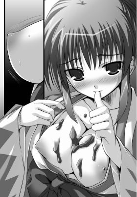
本当にいやならば、刀を抜けばいいこと。心梨に敵うほどの手練れはそういない。
そうはわかっているのに抵抗することができない。
必死に刀の鞘に手をそえてみるものの、乳首を舌で弾かれるたび、脳裏に電流が走り、秘芯がひくついてしまい集中が乱れる。
肇は乳房を中央に寄せ、乳首同士の距離を縮めておいてから、交互に舌で嬲りはじめた。
強弱をつけて、じっくりねっとりと心梨の巨乳を堪能する。舌の動きをとどめたかと思うとそれはフェイントでいきなり吸いついてやる。口のなかに小豆の甘さと、彼女の汗のしょっぱさがひろがって絶妙なハーモニーを生みだす。
「んあぁああっ！ や、や、あぁあああっ！」
とくに感じやすい乳首を思いきり吸いたてられた途端、心梨はびくびくっと激しく身体を震わせ喉をのけ反らせた。
別個の生き物のように収縮するラビアから、ついに恥蜜が漏れでてしまうのを感じ、恥ずかしさのあまり目をつぶる。
一瞬、ふわりと腰のあたりが浮く感じがして、膝から力が抜けた。
そのまま、その場に崩れ落ちてしまう。
「はぁはぁ......。あ、あぁっ。ン、だめって......。言っておる......のに」
ショーツから溢れ、内腿を伝わり落ちてゆく愛蜜を少しでもせきとめようと内腿同士をひっつけて力をこめる。
だが、そんなささやかな抵抗むなしく、ラブジュースはとめどなく溢れてくる。
（たかがこれしきのことでこんなになるなど......。私はいつの間にそんな淫乱に）
生真面目な彼女らしく、心梨は内心自分を責める。
と、そんな彼女をいたわるように、肇の手が彼女の頭を優しく撫でた。
「イッて立てなくなりました？ 心梨は胸弱いですからね」
彼の隠されたもう一つの顔がのぞく。
Ｓっ気を色濃く滲ませた顔――
優しげな笑みを浮かべてはいるが、その瞳は獣のようにぎらついている。
そんな目で見られれば見られるほど、心梨はどぎまぎしてしまう。
「う......。べ、別にそんなことはない......」
「でも、立てないみたいですし？ イッたんじゃないんですか？」
「うるさい。こ、これは先ほどの鍛錬の疲れのせいであって......。断じて......」
「そうですか。まだまだ素直になれないみたいですね。仕方ない」
「な、肇。な、なにを......」
「素直になるまでしますよ。もっと......。時間をかけてじっくり」
「こ、これ以上はだめじゃ......。本堂でこんなこと。罰が当たる......」
「では、ちょっと離れればいいですね」
そう言うと、肇は彼女の身体を横抱きにした。
宙でバランスを失いそうになった心梨が思わず肇の首根っこにしがみついてしまう。
「っきゃ！ は、肇っ！ なにをする！」
「いいから黙っておとなしくしていて。俺に任せてください」
「うぅう......。そ、そんなこと......。あ、あう......。人の話を聞けと言うに......」
そう言いながらも、完全に抵抗できずにいる心梨。
２ 高ぶる心
肇は彼女の身体を抱いたまま庭園へと降りた。
本堂から見えない紅葉の木陰に彼女の身体を降ろす。
そして、彼女の背を木肌に押さえつけた。
「肇。なにを――」
心梨の問いには答えず、肇はその場に屈むと、彼女の着物の袂からたすきを取りだした。
木の根元に座りこんでしまった心梨に膝を折らせ、そのまま両足を縛りあげる。
無理やり足をひろげられた途端、心梨の鼻腔に甘酸っぱい匂いが届く。
（だ、だめじゃ。匂いが......。肇に気づかれてしまう）
「いやっ。やめろ......。肇っ。やめろと言うに......」
あわてて抵抗しようとするもすでに時遅し――
肇は自分の袂からも紐を取りだして、もう片方の足を縛めにかかっていた。
やがて、心梨は俗に言うＭ字開脚の格好を強要されてしまう。
さらに余った紐を木の後ろへとまわして両端を結んだため、木にＭ字開脚という恥ずかしい格好のまま縛りつけられた状態になってしまう。
愛蜜で濡れ、二枚貝に張りついてしまったショーツがあらわになる。
無論、たっぷりと舐めしゃぶられ、食べられたおっぱいも――。
なんとか縛めから逃れようと心梨が身体を左右によじるたびに上下左右に惜しげもなく揺れてしまう。
「――いい匂いがしてますよ。心梨の」
「あ、あうぅうっ......」
やはり気づかれていたのだと心梨は首をうなだれる。
足を閉じようと力をこめているため、濡れた内腿が痙攣しつづけている。
「ほらもうこんなに......」
興奮気味に息を荒らげた肇が、無防備に開かれた股間に指を伸ばした。
「やっ。やめろ......。あ、あっ。あぁああっ」
ショーツ越しではあるが、無骨な男の指が秘密の場所へと触れる。
柔らかな花びらは、奥から滲みでてきた蜜のせいですでに開ききってしまっていた。
肇の指先は、熱と粘り気と柔らかさを同時に感じていた。
しばらく、形を確かめるように表面をなぞっていた指が、じゅくりとなかへと沈む。
「やっぱりすごい。これでイッてないなんて言わせませんよ」
思った以上に濡れていた股間に驚きつつも、肇は心梨をさらに攻めた。
「うあっ。あぁあああ！ や、やあ。あ、ンはぁっ......。あ、あ、そんなぁっ」
敏感な粘膜をショーツ越しにとはいえぐりぐりと無骨な指で刺激され、心梨は悲鳴じみた声をあげてしまう。
「ほら、また沁みてきてるし」
そう言うと、肇はいったん彼女の股間から指を離した。
濡れた指を心梨の目の前まで持ってくると、指の腹同士を引っつけては離して、指の間を銀糸が結んでは消える様子を見せつける。
「そ、それは......。んむっ......。んんんっ」
またも言いわけが口をついて出そうになった心梨。
が、その口に肇の指がねじこまれた。彼女自身の蜜で濡れた指だった。
「心梨の味がするでしょう？ 局長ともあろう人が嘘をつくなんていけませんよ」
「ん、んぅう......。ふぅううううう......」
無味だが、やや粘ついたものを舌に感じ、心梨は顔をしかめる。
首を左右に振りたてるも、肇はそのまま指で彼女の舌を弄りながら、もう片方の指で股間に触れた。
心梨がはっと身を強張らせるのと、彼の指がショーツの隙間からなかへと侵入するのとが同時だった。
「んっ！ ひゃっう......。んはぁあっ。んぅうう。んぅ、んぅううっ！」
久しぶりに異物を差しこまれた女陰が軋む。
痛みと強烈な拡張感に心梨は目を見開き、くぐもった悲鳴をあげる。
こらえきれず、口に咥えていた肇の指に歯を立て、指を追いだしてしまった。
「んふぅ......。あ、あぁ......はぁはぁ。んぁあ......。きつ......。こんなに。あぅ、何本挿れてるのだ。はぁあぁああ......」
つらそうに眉をひそめて、喘ぐ心梨に肇は告げる。
「まだ一本ですよ。しばらくしていないときつくなるもんなんですね。すごく締めつけてきますよ......」
「あ、あふっ。んあぁっ。そんな、動かす......な。あ、あぁ」
肇が差しこんだ中指をなかで暴れさせると、心梨の喘ぎと同時にざらついた突起が指に絡みついてくる。
きゅうっと姫洞が指を締めつけてきて、痛いくらいだった。
指先に彼女の膣の複雑な動きを感じながら、肇はいてもたってもいられなくなってしまう。
本当はもうちょっとねっちりと苛めるつもりだった。
指でたっぷり苛めて潮を噴かせまくって、心梨がおかしくなるくらいイカせまくってから挿れようと考えていた。
それなのに、すでに肇は袴の腰紐をほどいていた。
「あ、そんなに......。すぐは......」
「せっかくこんなにキツくなってるんですから......」
もどかしげに袴を脱ぎ捨てると、肇は褌もかなぐり捨てて、雄々しくいきり勃ったイチモツを誇らしげに心梨へと見せた。
月明かりを浴びたそれは、色濃い影をまといつつ、ぬめりと鈍く光る。
臨戦態勢となった半身を見て、心梨は無意識のうちに生唾を呑み下した。
「――心梨が欲しいです」
痛いほどに脈打つペニスに手を添え、肇は彼女へとにじり寄る。
そのまま、いったん大きくエラを張った亀頭を引きさげ、狙いを定めて心梨の股間へと押しつけてやる。
「んっ！ 熱っ！ あ、うぅうう......。肇、滾りすぎじゃ......」
ショーツのクロッチ部分は片側に寄せられているため、剥き出しになった花びらが、ペニスの熱をもろに感じる。
肉色の粘膜を剥き出しにした肉の刀身は、先走り液をまとい生々しい感触を獲物へと伝える。
「そりゃ滾りますよ......。心梨のあんなに可愛い反応見せられたら。男なら誰だってこんなふうになってしまう」
「あ、ふっ。だ、だからといって、お、押しつけるでない。ン、ああぁ......」
亀頭をぐいぐいと押しつけられ、心梨は身悶える。
本気で侵入してくるのかと思いきや、そうではないようで。
先っぽは浅い箇所をくすぐってくるのみ。奥へとつづく箇所を探す動きではない。
（肇、この私をっ。焦らすつもりか......）
期待と不安とが入り交じり、彼女の胸を熱く焦がす。
心梨が身悶えていると、肇は手で根元を操作し、彼女の性器の一番端に位置する感度の塊を探し当てた。
「っきゃ、ああ......。は、はぁはぁ......。ん、んぅ......！ は、肇......。そこっ」
胸を苛められたときとは桁違いの鋭すぎるともいえる悦楽が心梨に襲いかかる。
下腹部の奥の奥が熱っぽい。獲物を食むかのようにラビアがすぼまり、ぷちゅっと奥から恥ずかしい蜜が噴きだしてしまう。
肇は敏感な肉芽に、粘り気のある蜜を亀頭で塗りこんでいく。
少し弄るだけでも簡単に達してしまうというのに、愛液をまぶされ熱い塊でこすりたてられ、挙げ句、尿道口で肉芽を呑まれてしまっては狂うほかない。
心梨は髪を振り乱して、壊れてしまったように激しく頭を振りたてる。
「あぁああっ！ やぁああっ。そ、そこはっ。そこだけはっ。そんな、痛っ。あ、あぁああっ。あぁあはぁあああっ！」
あまりにも敏感な部位のため、時折、痛みすら感じてしまう。
しかし、痛いと思っている間にも、すぐさま今度は怖いくらいの快感がひっきりなしに少女を追いつめてゆく。
クリトリスを刺激されるたびに、体温が上昇していく。
逼迫した声をあげるたびに、全身の血が逆流して、脳内の血管が破れてしまいそうになる。
「やぁああっ。い、やぁあああっ！ ああっ、また、またっぁあああ、もうっ。っめぇ、っめぇえええええっぇええっ！」
ついに心梨が大きな目を最大限に見開いて、エクスタシーの高波にさらわれた。
彼女が力むのと同時に、奥から大量の潮が噴きだし、飛沫を散らす。
蕩けきったアクメ顔の下、汗と肇の唾液とで濡れた乳房が小刻みに震える。
細い肩を上下させて、懸命に呼吸を整えようとする心梨を、いとおしげに見つめて肇が言った。
「――心梨、気持ちよさそうですね」
「はぁはぁはぁ......。あ、あ......。んぅっ......」
不明瞭な言葉を紡ぎつつ、彼女は小さく躊躇いがちにうなずいた。
勝気な彼女の影はなりを潜めている。
心梨は、全身の力を抜き、ぼうっと虚空を見つめている。
長い髪が彼女の額に頬に胸にと張りついて、乱れ姿を強調する。
「もっとしてあげましょうか？」
「あ、あうぅうっ。そ、それは......。むぅう......」
激しすぎる絶頂に理性を砕かれた心梨だが、肇の問いかけにはっと我にかえると視線を彷徨わせた。
少女らしい恥じらいの気持ちが彼女を苛んでいる。
股をひろげて欲しがるなんて......。そんな恥ずべきことをやすやすと口にできる心梨ではない。
普段は生真面目も生真面目。
冗談でも品のないことは口にしない彼女らしい。
しかし、そんな彼女だからこそ、余計に狂わせたい、支配したいと肇は思う。
「ちゃんと欲しいと言えたらつづきをします。どうしますか？」
「――うう。わ、わかっておるくせに......。意地が悪いぞ」
口でしてほしいと言う代わりに、二枚貝がひくついて涎を垂らした。
それに、肇は気づかないふりを貫き通す。
「素直になってください。でないとしません」
「ううううううっ！ だ、だが！ そんな恥ずかしすぎること！ 女に言わせるのもどうじゃ......」
「あれ？ 前に『女はとうに捨てた身』とか言ってませんでしたっけ？」
「む、む、むぅうううううううっ！」
肇に指摘され、心梨は眉を吊りあげて口を尖らせる。
その仕草はまるで子供のようで。肇は笑いをこらえながらも言葉をつづけた。
「さあ、どうしますか？ 心梨」
言いながら、腰を前に押しだす。
奥へとつながる箇所に先端がはまりそうになり、挿入の予感に心梨は身震いする。
「あ、あはっ......。ん、んぅ......。肇......。そのままっ」
思わずそこまで言ってしまい、彼女は顔を真っ赤にして口をつぐんだ。
「そのまま、なんですか？」
興奮をこらえた低い声で肇が彼女の耳もとに囁く。
「あう......。その、だな......。あう......。うう、して......。ほしい」
ややあって、言葉をつまらせながら、ようやく心梨が消え入るような声で言った。
それを確認するや否や、肇は彼女の腰をつかんで抱えこむと、思いっきり腰を前に突きだした。
「ひっ！ あ、あはぁああっ。あ、っはぁあああぁああああっ！ 無理ぃいいい」
中心線で身体が真っ二つに裂かれてしまうような――
強烈な痛みを覚えて心梨は絶叫した。
大きな亀頭が狭い穴へと力ずくでめりこんだかと思うと、最大限にまで膣洞をひろげつつ最奥を深々と穿ったのだ。
「かはっ！ はぁっ。あぅああ......。熱っ。苦し......。はぁ、息がっ。できぬっ」
初めてを失ったときのような拡張感に息をつまらせる。実物より数倍太いもので栓をされ、責められているような感覚――
何事かを言おうとして口をぱくぱくと動かすも、言葉の代わりに耳障りな息と苦悶の声しか出てこない。
「っくう、やっぱり......。すごく狭いっ」
肇はうめきながらも、猛烈な膣抵抗に抗って腰を小刻みに動かしはじめる。
なかが真空状態になって、膣壁がペニスに張りついてくる。外へと引き抜こうとすると、花びらごと内膜が引きずられそうになる。
体重をかけると、空気がもれるはしたない音がして、それが心梨の羞恥を煽る。
「うっ、あぁっ。っくぅう......。ひっあぁっ！ あ、あぁっ」
肉棒から逃れようと心梨が腰を引こうとするも、Ｍ字開脚で木に縛りつけられているため、逃れることはできない。
かえって腰が色っぽくくねってしまい、おねだりをしているようだ。
無論、肇は全神経を傾け、その催促に応えようとする。
すでに大量の蜜で茹だっている女壺に屹立をねじこんで、エラでざらついた壁をひっかくようにして腰をグラインドさせる。
蠢く襞が侵入者を締めだそうとしてくるが、体重を乗せて奥をめった打ちにする。
一番奥、子宮口の硬い場所に先端がぶつかるたびに、心梨の脳が揺さぶられる。
閉じた目の裏が赤く染まり、闇のなか、火花が散る。
「んぁああっ。やぁあっ、はぁああ、あ、あぁああっ！ んあぁああっ。肇っ。ん、すごく......。あぁっ。あぁあ、いぃっ」
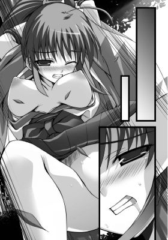
ペニスが斜め上を抉ってくると、膀胱が圧迫され、もうこれ以上無理だという切羽つまった状態に心梨は追いつめられる。
必死に下腹部に力をこめるも、すでにヴァギナは洪水状態だった。
だらしないといってもよいほど、甘酸っぱい液体が垂れ流されている。
抜き差しされる肉棒は濡れに濡れ、肉棒を伝わり落ちる大量のラブジュースが肇の毛まで濡らしていた。
太い血管を浮かびあがらせた肉の刀身がリズミカルに出たり入ったりを繰りかえす。
そのたび、ずぷっずずっと鈍い音が響き、腰が激しく打ちつけられる音が重なる。
その音に合わせて、大ぶりの乳房が上下に波打ち、形をとどめない。
淫猥な二重奏に耳を傾けながら、肇は一心不乱に腰を振りたて、クライマックスを目指してゆく。
Ｇスポットを穿たれ、クリトリスがこすれ、なにがなんだかわけがわからなくなった心梨が狂ったようにポニーテールを振り乱して叫んだ。
「あぁああっ！ もうっ、もうっ！ ぁああ、ダメぇええっ。ダメになってしまっ。んはぁああ、あぁああっ！ 肇ぇええっ。もっともっとぉおおお。めちゃくちゃにっ。強く。変にしてぇえええっ！」
鋭いよがり声をあげて上半身を切なげに身悶える。
その声に合わせ、肇は心梨の腰を引き寄せつつ、腰を勢いよく突きあげた。
ぱちゅんっという音と同時に、限界まで張りつめた肉棒が一番奥で弾ける。
「っくっ！ 射精るっ......。心梨っ！」
「んはぁあああっ。いいっ。許可するっ！ いっぱい射精せ......。あ、あぁああああ、なかをいっぱいにぃいいっ！ 硬いっ、熱いっ！ んぁあぁあああぁあっ！」
尿道口から今まで溜めこんでいたたっぷりのザーメンがいっせいに吐きだされた。
肉竿が元気よくしなるたび、蜜壺のなかにびゅるびゅるっと青臭い男の体液が撒き散らされる。
（あぁっ。頭まっしろに......。肇のでなかがいっぱいっ。熱い......。気持ちよすぎて。なにがなんだか......）
心梨はぶるっと肩を震わせると、肇の上半身に手をまわしてすがりついた。
汗で濡れた広い背中に爪が立てられ、肇は少し顔をしかめる。
必死の形相で自分にしがみついてくる彼女がいとおしくてならない。
肇は彼女の身体を強く抱きしめ、最後の一滴まで彼女の膣内に注ぎこむと、満ち足りた吐息をもらした。全身が気だるい。
「んっ。んんっ......。はぁはぁ......。あっ。ん......」
コトが終わってもなお二人はつながったままで。
心梨はなかにいる彼の半身を敏感に感じ、ぴくぴくっと時折身体を痙攣させる。
額から大量の汗が滴り落ち、目尻から頬へと、汗とも涙ともわからない液体が流れ落ちてゆく。
肇はそれを唇で拭ってやる。
だが、何度拭っても、塩っぽい液体が溢れては伝わり落ちつづける。
それが汗でなく涙なのだと肇は知り、彼女の頭を何度も何度も撫でてやる。
「心梨。大丈夫ですか？」
「......大丈夫だ」
「そう、ですか......」
背中をぽんぽんと優しく叩いてやると、彼女は肇の首根っこにしがみついて、彼に頬擦りをした。
そのまま肩に顔を埋めてしまう。
驚いた肇が心梨の顔を見ようとするが、抱きしめる手に力をこめて彼女はそれを許さない。
肇は、こういうときにどうしたらいいか戸惑ってしまう。
とりあえず、途方に暮れた顔をして彼女の頭と背中を優しく撫でつづける。
そうこうしているうちに、結ばれたあとの気だるさに瞼が重くなってくる。
寝てはならないと何度も思うのに、心梨の暖かさが心地よくて。
嵐山までの長い道のりをやってきたあと、情熱的に結ばれたことも手伝って。
疲れきった体に眠気が襲いかかる。
そして、それは心梨も同じだった。
安堵の表情を浮かべて瞳を閉じる。
紅葉の木の根元で二人は体を折り重ね、じきに安らかな寝息を立てはじめた。
３ 宣戦布告
小鳥の軽やかなさえずりが高い位置から聞こえてくる。
露が頭に滴り落ち、額と頬に伝わり落ちるのを感じて、肇は目を覚ました。
「ん......」
まだはっきりしない頭をもたげて周囲を見渡す。
すると、目の前に朝もやにけぶる見事な日本庭園がひろがっていた。上のほうはもやが晴れており、黄金色の朝やけに照らしだされた真っ赤な紅葉が見てとれる。
空気が澄み渡っていて清々しい。
なぜこんなところで寝ているんだろうと、肇はまだ半分寝ぼけ顔で首を傾げる。
と、すぐ傍で寝息を立てている少女を見て、ようやく昨晩の記憶が甦る。
「ああ、そか......」
頭を軽く左右に振ってから、心梨へと視線を落とす。
二人とも、昨晩激しく交わったままのしどけない格好だった。
形のよい胸が朝露に濡れて光っているのを目にした肇は、あわてて視線を逸らして、自分の羽織を彼女へとかけてやる。
朝の男の生理現象も手伝って、下半身がいっそう強張るのを感じる。
「まずいな......。あのまま寝ちゃってしまったのか。風邪ひいちゃいけないし」
節操のない股間をたしなめながら、袂から手ぬぐいを取りだすと、まずは彼女の髪を拭いてやる。
艶やかな赤毛が露に濡れ、彼女の白い肩や背中に張りついている様が淡い色香を放っている。
長い睫毛には露によるものか雫が煌めいていて、思わずそれにも目を奪われる。
彼女の寝顔はここ数日にないほど安らかで。肇は、ほっと胸を撫でおろす。
「うん......？」
肇が彼女の寝顔に見惚れていると、心梨が小さくうめいた。
目をしばたたかせながら顔をしかめ、頭をかすかに横に振る。ポニーテールの毛先から水滴が飛び散る。その様は水に濡れた小動物を思わせ、肇の笑みを誘う。
「おはようございます。心梨。すみません。あのまま寝ちゃったみたいで。寒くないですか？ 大丈夫ですか？」
「......肇？ っああ......」
心梨はあお向けになったまま、目を見開くと、陶然としたため息混じりの声をもらした。
明け空一面にひろがる赤、黄色、オレンジ色の紅葉のヴェールに目を見張る。
「......綺麗。なんだ、これは」
彼女の瞳が煌めくと、両方の目尻から涙がこぼれ落ちた。
涙は、はらはらとこめかみへと流れつづける。
心梨は、自分自身でもなぜ泣いているのかわからないようだった。
しきりに首を傾げつつ、瞬きを忘れ、涙を流しつづける。
「私にこれを見せようとしてくれていたのだな。肇」
「は、はい。こんなに綺麗な紅葉、俺、田舎じゃ見たことなくて......」
いつも強気な彼女の目からこぼれる涙を見てはいけない気がして、肇は少々あわてふためいてしまう。
「でもまさか朝になってしまうなんて計算外で。すみません。予定狂いますよね......。今朝から予定が入ってましたし......」
「なにを謝る必要がある。見事だ......。こんなにも綺麗なものが、こんなにも傍にあったのだな」
そう感慨深げに呟く心梨。
毎日、局長として新撰組の隊士たちを束ね、来る日も来る日も戦いに明け暮れる日々を送る彼女には、空を見上げたり紅葉を愛でたりする余裕すらない。
それをよく知る肇は、自分の彼女に対する想い――無理をしてほしくないという気持ちが少しでも彼女に伝わった気がして目頭が熱くなる。
「......そうですね。喜んでもらえたならなによりです」
「うむ。それに大丈夫だ。なにがあろうとも奏音がなんとか......」
そこまで言って、はっと心梨は表情を強張らせると、黙りこくってしまう。
肇はその言葉に彼女の本心を見た気がする。
彼女の両肩に手を乗せると、やや幼い彼女の顔をまっすぐ見つめて彼は尋ねた。
「心梨。ごまかさずに本当の気持ちを聞かせてください。素直に自分の本心に向き合ってください」
「私......。私の本心？」
「はい、隊長の役目とか体面とかそういう事情はひとまず置いておいて。俺は心梨の本心を聞きたいんです」
「私は......？ 奏音をどうしたいのだろう......。私個人は......」
心梨は戸惑いの声をあげ、視線を左右に彷徨わせる。
自分でも本心がわからないようだ。
彼女は苦しげな顔をして瞳を閉じると、観念したように言った。
「奏音を信じていた。ずっと一緒にいられると思っていた。だが、奏音は私を裏切った。昨日の味方が今日の敵となるという言葉はまことだな......。今では、顔も見たくない。そう思ってしまう自分がいやだ」
「......わかります。思い入れが強ければ強いほど、裏切られたとき、憎んでしまう。でも、まだ隊長がみんなを裏切ったと決まったわけじゃないでしょう？」
「――いや、少なくとも奏音は、私とカレンを裏切った」
「それはどういう意味ですか？」
「なんでも話せる仲だと思っていた。最初からずっと一緒だったのだ。それが、まさか偽りの名を名乗り、偽りの毎日を送っていようとは......」
心梨は力なく首を振って、目もとを手で覆ってしまう。
「偽りの名？」
「――脱退願いの書状に書かれていた真実。沖田奏音はあの日死んだ。だから、捜さないでほしいと書かれていた。今後はかりそめではない本物の人生を歩むと......」
「なっ！ 沖田隊長が偽者!? いや、待て......。本物の人生？ いったいなにがどうなって」
断片的に明かされた真実に肇は混乱してしまう。
「奏音は、本当は将軍家縁の者だったのだ。すなわち、沖田という苗字はかりそめのもの。大災のとき、焦土と化した京の都を目の当たりにし、姓も素性も偽って都の復興のため乙女新撰組に尽力してきた......」
「将軍家の!? ってことは、姫......」
「ああ、そうだ。だから、いずれ将軍家に戻らなくてはならない。そして、その期限は、最初から決められておったのだそうじや」
「......そうだったんですか」
二人の間に沈黙が流れる。
しばらくして、肇がしんみりと言った。
「でも、なんだか、隊長らしいですね。こういう去り方は......」
「そうだな。だから、余計に腹が立つ」
心梨はそう言い放つと、深いため息をついて顔から手を離した。
その表情は、先ほどとは違い、どこかさっぱりとしている。
「せめて私たちには明かしてほしかった。こんなに突然の別れはあんまりじゃないか。あらかじめ話しておいてくれれば......。いろいろと心の準備もできたものを......」
「隊長もきっと別れがつらかったんじゃないですか？ もしかしたら、何度も明かそうとしていたのかも。でも、言えなかったのかもしれない......」
「............」
肇の言葉を聞いた途端、心梨ははっと息を呑み目を細めて何事か思案する。
ややあって、彼女は怒ったように言った。
「奏音の考えていることはいつもわからん。なにも考えていないようでいろいろと策を巡らしていたり......。一人無理をしていたり......。なぜに苦労を分かち合わない。なぜいつも一人でなんでもしてしまう」
「でも、それが隊長ですから。それにそういうとこって、結構局長たちも似てますよ」
肇が片目をつぶってたしなめるように言うと、心梨の頬がほんのりと赤らんだ。
「......まったくもって小憎たらしい」
そう言いながらも、彼女の声に棘はなく瞳は潤んでいる。
澄んだ瞳は、紅葉を映していて、肇はその美しさに吸いこまれそうになる。
「誰よりも隊長のことをわかっているのは、心梨と副長ですよね」
「ああ、無論そうだ！」
あんまりにも彼女が即座に断定したため、肇は笑ってしまいそうになる。
「こういう場合の隊長ってどう行動しますか？」
「――そうだな。誰にも迷惑がかからぬように。自分の気持ちはいつも後回しにする。それが奏音だ」
「一人悩んでいたのかもしれませんね。でも、悩む素振りなんて見せなかった。誰にも心配かけたくないから......」
「......奏音はそう考えるだろうな。だが、そういうのは、もう、うんざりだ」
いきなり、肇の言葉を遮って心梨が強い語気で言ったかと思うと、胸もとにかけられた羽織を強く握りしめて身体を起こした。
彼女の瞳が怒りで炎のように爛々と燃えている。
「し、心梨？ 落ち着いて......」
「だー！ かもしれないばかりじゃあ埒があかん！ こういうのは性に合わん！」
「は、はあ......」
「もう面倒だっ！ 決めたぞ！ 直接、奏音に確かめにいく！ なぜこんな真似をしたのか、本人から聞くのが一番早い！ まわりくどいやり方は面倒じゃ。覚悟が決まったわっ！」
そう言いきって、その場にすっくと立ちあがった彼女の顔はイキイキと輝いている。
ここ数日の思い悩んでいた面影もない。
久々に見た胸がすくような彼女の顔に肇の気持ちも上向く。
「確かにその通りですが......。いや待てよ。もしかして......。ってことは城に乗りこむってことじゃ......」
「ああ、その通りだが？」
とんでもないことをさらりと肯定する心梨に思わず目を剥く肇。
「っちょ、それってもしかして謀反って言うんじゃ......」
「もしかしなくても謀反じゃな。我らは将軍様に仕える身ゆえ」
「って、待ってくださいよ。別に面会をお願いして穏便に話せば――」
「本当の名も知らぬ相手にどう面会を願うというのだ？ 奏音という名も正しいかどうか疑問じゃ」
一瞬、心梨の眼光が鋭さを帯びる。
その瞳の奥の奥に、深く傷ついた光がちらついているように肇は思う。
心梨の問いに肇が答えることができずにいると、彼女はポニーテールを後ろへと払いながらこう言った。
「それにじゃ、仮に奏音という名は本名であったとしよう。だが、事情を話して面会を頼んだところで、みすみす深窓の姫君を出してくるとも思えぬ」
「た、確かに......」
「城にはよく肥え太った狸がごまんといるゆえな。知らぬ存ぜぬでたらいまわしにされ、うやむやにされるのがオチじゃ」
「そ、そうなんですか......」
田舎から上京してまだ一年も経っていない肇には、その辺の事情はわからない。
こんな折、彼は彼女と自分との差を思い知らされる。
自分が見てきた世界はあまりにも狭く、新撰組を率い、将軍からじきじきに任務を請け負う心梨は、自分には思いも寄らない厳しい世界に生きてきたのだと。
「大丈夫だ。誰にも迷惑はかけぬ」
遠くの空を見据えて、淡々と口にする姿はまさに新撰組の局長に他ならず。
つい今しがたまで、すぐ傍に感じていた少女が遠くへ行ってしまった気がして。
袴を整えて立ちあがると、仏頂面をした肇はこう言った。
「――って、またそんなふうに一人でなんでもしようとする。隊長と同じですよ？ 俺がなんのためにここにいると思ってるんです」
「肇......」
すると、男勝りな表情がふっと緩み、彼女は照れくさそうにはにかんだ。
局長ではなくたった一人の少女の顔へと瞬時に変わる。
局長の顔が凛々しければ凛々しいほど、一人の恋する少女としての表情はあまりにも無防備であどけなくて――肇まで頬を染めて気恥ずかしそうに頭をかいた。
彼女は、口もとをωの形にすると、瞳を閉じて肇の肩に頭をもたせかけてきた。
すぐそこに彼女を感じ、肇の心音はますます速くなる。
薔薇の花びらを思わせる薄い唇に、すっと通った鼻筋、長い睫毛、水滴を滴らせる濡れた髪――
整った彼女の顔をすぐ傍に感じ、いつもよりも意識してしまう。
「ああ、そうだな。悪かった」
心梨はそう言うと、切なげに眉をひそめて言葉をつづけた。
「だが、これは重大な謀反にもなりかねない。命をかけることになるかもしれぬのだぞ。それでもよいのか？」
肇の言葉に頭をもたげると、心梨は彼に真っ向から向き合って毅然と言い放った。
そのまなざしを肇はまっすぐ受けとめて、躊躇いもなく力強くうなずいた。
「かまいません。心梨についていくって決めたときからその覚悟はできています」
心梨も彼にうなずきかえして、口端をにっとあげる。
「そうか......。わかった。ならば、一緒についてこい。肇」
「はっ！」
肇が両足を踏ん張って一礼する。
そんな彼を頼もしげに心梨は見つめていた。
そのときだった。
一陣の風が吹き、高い位置からひらひらと色とりどりの紅葉が舞い降りてくる。
心梨の赤毛に真っ赤な紅葉が載って、髪飾りのように見える。
無垢な少女の一面を持ちながらも、新撰組を背負う局長としての任務に愚直に取り組む凛々しい彼女を肇は惚れぼれと見つめる。
心梨の彼氏として傍にいられることを誇りに思う。
彼女と一緒なら、どこを死に場所にしてもいい。そんな気持ちにすらなる。
と、不意に心梨が肇へと手を差し伸べた。
激しい剣の鍛錬ゆえに張っているその手を握りしめると、彼女は両手でいとおしげに肇の手を包みこんで頬擦りをした。
そして、消え入りそうな声でこう呟く。
「肇......。ありがとう。いてくれてよかった――」
彼女の飾らない素直すぎる言葉を耳にした途端、肇は耳まで真っ赤になってしまう。
「い、いえ......。俺なんかでよければ......。ずっと傍にっいますしっ」
口ごもり、力みながらもそう言う彼に、顔をあげた心梨は淡く微笑みかけた。
「――信じるぞ」
一点の曇りもない澄んだ瞳で、肇の瞳を覗きこんでくる。
肇は、あらためて自分こそが彼女を護らねばという気持ちに駆られる。
このまっすぐな信頼に応えたいという気持ちになる。
彼女が「鬼の局長」と呼ばれながらも、新撰組の隊士たちに慕われる理由があらためてわかった気がする。
とてもまっすぐひたむきに相手を信じることができる力。
それだけに、奏音の裏切りは相当つらかったのだろう。
赤や黄色の紅葉が、二人を祝福するかのように、柔らかに舞い降りつづけ、足もとの萌えるような黄緑色の苔と鮮やかなコントラストを成していた。
だが、そのときだった。
突如、心梨は、憎悪にも似た殺気を感じる。
はっと顔を引き締めると、腰の刀を引き抜いて真横へと薙ぎ払う。
宙を舞っていた紅葉が細かく刻まれたかと思うと四方に散り、その向こう側に黒い着流し姿の女がすっくと立っていた。
長い煙管から白い煙をくゆらせている様は、いかにも伊達者っぽい。
男とも女ともとれない中性的な顔立ちをしてはいるが、さらしを下から押しあげる胸で謎の剣客が女だとわかる。
「――なにやつっ」
「某は柳生朱羅」
「柳生朱羅......。お主があの......」
いっさいの素性が謎に包まれている凄腕の剣客。
闇から現われ、闇に消えてゆくという神出鬼没の美丈夫な女剣士。
トレードマークの眼帯に黒ずくめの格好――心梨も噂だけは耳にしていた。
「近藤心梨。忠告する。下手な気を起こすな。すべてを失うことになる」
「すべてを!? それはいったい......」
心梨は、気を張りつめたままで間合いを測りつつ、彼女へと尋ねかえした。
「大事なものすべてが失われる。これは予言ではない。某が手を下し実現する未来」
朱羅は、刀の鍔を親指で押しあげて、単調な口調で言った。
なんの音もなく、黒い刀身が現われる。鍔を押しあげたときに、無音である刀は、かなり名のある刀匠が拵えた逸品である。
そのような得物を携えた人間が只者なはずがない。
今まで見たこともない黒光りする刀身を目にした途端、心梨は金縛りに遭ったかのようにその場に硬直する。
（あの刀はいったい......。なぜ、私の虎徹がざわつく）
嫌悪感にも似た気持ちが胸を黒々と覆う。
あの黒い刀は、相反するもの、排除すべきもの――直感でそう感じる。
「沖田奏音は死んだ。忘れろ。それが本人の意志。尊重すべきこと」
朱羅の口から奏音の名が出てきたため、気色ばんだ心梨が鋭く問いただす。
「なっ！ お主っ！ 奏音のなにを知っておる！」
「――すべて」
低い声でそれだけを答えると朱羅は刀を収め、再びつむじ風のように姿を消した。
あとに残された心梨と肇が周囲を注意深くうかがうも、すでに彼女の姿はどこにもない。
「心梨。あれは......」
「奏音縁の者か。だとすれば、将軍家の剣客と考えるが妥当。あの女、なにを企んでおるのだ。奏音に大事なければよいが――」
心梨は顔を曇らせて呟いた。
「城......。力が集うところは、玉石混交、有象無象が集まる伏魔殿じゃ。よからぬ陰謀の片棒を担がされることもしばしばゆえに......。気にかかる」
禍々しい気をまとった黒ずくめの剣客と刀――
力ある剣客は、対峙しただけで相手の技量がある程度はわかってしまうもの。
心梨は戦慄を覚えずにはいられない。
「――大丈夫ですよ。隊長なら。頭も切れるし鋭いし。陰謀なんて逆に利用するくらいの器の持ち主でしょう？」
肇が、わざと明るく言うと、心梨はようやく険しい顔を緩めてうなずいた。
「そうじゃな......」
しかし、表情は完全には晴れない。
心梨は、先ほどまで朱羅がいた場所をいつまでも見据えていた。
そんな彼女を見守る肇は、黙ったまま彼女の傍に控えている。
ただ黙ったままで傍にいてくれることに、心梨は内心感謝した。
そのとき――
空にカラスの大群が飛び立った。カラスたちの寂しげな鳴き声が、いっそう不安を駆りたてる。
「............」
肇も心梨も不吉な予感を覚えずにはいられなかった。
第二幕 土方カレン ＊誇り高き？看護ご奉仕＊
１ 嵐の前
「なんだか、局長だいぶ元気になったよね～。よかったぁ」
「うん、別に空元気ってわけじゃないと思うし」
「ってか、まじめクンとなんかますます怪しい感じじゃない？」
「うーん、局長はともかく、まじめクンは怪しいよねえ～。ずっと局長のことばっか見てるもん。あれは絶対に局長のこと、好きなんだと思うなあ」
「世話役以上のなにかを感じるよねえ～。やぁんちょっと浪漫じゃな～い？」
「でも、鬼の局長にまじめクンは相応しくないような気がするなあ。下っ端とトップじゃねえ～。局長ほどの人なんだから、もっとこう剣の腕も確かで～。もっともっと大人な人がお似合いじゃない？ ほら、包容力があるようなおじさまみたいの」
「いやいや、意外にまじめクンみたいなのもありだと思うよ～。カタブツでまじめでおっかしいんだもん。癒し系じゃない？ 誠実そうだしぃ。浮気とか絶対にしなさそう」
「ってか、浮気なんかする彼氏だったら、局長が生かしておかないっしょ～」
「まじめクンって可愛いよねえ～。善雄クンはちょっと遊び人って感じかなぁ」
「でも、彼のがかっこいいよねえ～。軽そうに見えて頭もいいし。あと傷、治してくれるじゃあない？ 治癒術っていうの？ アレとっても気持ちいいんだよねえ」
「って。あんた、もしかして彼、気になってんのぉ？」
「や、やぁだ！ べっつに違うったらぁ！」
肇と心梨が、奏音の本心を直接本人に確かめようと決めてから五日が経った。
今日は、週に一度の休日――
新撰組の屯所は、いつにも増して少女たちの賑やかな声に満ちていた。
休日は鍛錬も任務もない。
いつも任務に明け暮れる隊士たちが自由に羽を伸ばせる日だ。
以前は月に一度の俸禄日にしか休日はなかったが、肇と善雄が入隊してから週に一度休日が設けられるようになったのだ。
少女たちはこれから出かけるところらしく、色とりどりの着物を着て、しゃれた帯に可愛い帯留めを締め、お気に入りのかんざしを挿してめいっぱいおしゃれをしている。
「んー、だけどさ。結局、隊長のことどうなったんだろう？ まだなんにも指示ないよね」
一人の少女が草履を履きながら言った。
たちまち、場がしんと静まる。
「粛清するって言ってたけど......。いつなのかなあ......。やだよ、私。隊長と戦うなんてやだあ......」
「私もやだなあ......。なんとかならないのかな。一番いいのは戻ってきてくれることなんだけどな」
「でも、それって許されるの？ 局中法度って出戻り禁止なんじゃないの？」
「わっかんないなあ......。結構あれってここだけの話、アバウトだから」
「そうだよね。大抵、局長と副長の判断に委ねられるわけだし――」
車座になった少女たちが顔を曇らせたときだった。
「こら、いつまでも玄関でしゃべっていないで。遊びに行くなら行ってきなさい」
艶やかな紫色の着物を粋に着こなしたカレンが腕組みをして少女たちに言った。
不愉快そうに眉をひそめながらも、本当に怒っているというふうではない。
彼女は、普段はおろしている髪を耳あたりの髪だけ残し、残りは無造作にアップに結いあげている。
うなじがあらわになり、ただでさえ色っぽい彼女の色香がことさら強調されている。
「わわ、副長っ。はーい、行ってきまーっす」
「――気をつけて。羽目をはずしすぎないように。乙女新撰組の一員としての自覚を忘れずになさいな」
「わかりましたー！ ではでは～」
少女たちは転がるようにして外へと出ていった。
その背中を見送って、カレンはそっとため息をつく。
と、背後から能天気な声が聞こえ、彼女は後ろを振りかえった。
「カレンさん今日もいちだんと色っぽいっすねえ～。その着物も似合ってますよ。新調したんですか？」
「善雄......」
「せっかく綺麗な格好してるんだし、気晴らしに俺と出かけませんか？ 歌舞伎の新作やってるみたいっスよ？」
善雄の気配りに気づきながらも、カレンはつんとそっぽを向いてしまう。
「――今日はその気になれませんわ」
「うーん。まあ、気持ちはわかりますけどねえ」
「あなたもわかっているでしょう？ 隊士たちに不安がひろがっている。このままではまずいですわ。きちんとけじめをつけなくては――」
「でも、局長もだいぶ元気になってきたし、そういう意味では前よりも落ち着いてきてますよね」
「それが解せないというの」
「へ？」
「奏音の制裁をどうするつもりか。局長は私になにも話してはくれませんわ。それでいて、あのさっぱりとした表情――あれはもう結論を導きだしたという顔ですわ」
「いいことじゃないっすか」
「全然っ！ よくありませんわっ！」
周囲に他の隊士たちがいないこともあってか、カレンは子供のように喚いた。
普段大人びた物腰の彼女だが、善雄と二人きりのときは、子供っぽい一面を見せる。
そのギャップがますます善雄を惹きつけてやまない。
善雄が彼女の傍までやってくると、彼女の頬を優しく撫でる。
すると、カレンは唇を尖らせて低い声で言った。
「わたくしは副長。局長の傍にいて補佐する役。それなのに、頼ってもらえないなんて。わたくしがここにいる意味がありませんわ」
「いやいや。局長にもなにか考えがあってのことでは？」
「経験上、こういうときの理由というのは大抵とんでもないものですわ......。ずっと一緒にいるんですもの。それくらいわかりますわ」
「とんでもない無茶をやらかしそうなんっスか？」
「ええ。局長は普段はわたくしを頼ってくれる。でも、いざわたくしに害が及ぶとなったら、全部自分で抱えこんでしまいますわ」
カレンは、不安げにラベンダー色の瞳を潤ませて、親指の爪を噛んだ。
いつでも凛とした姿勢を崩さず、余裕を感じさせる大人びた様子がまるで消え失せている。
「――それだけカレンさんのこと大事に思ってるってことじゃないっスか」
「大事にしてもらうなど、このわたくしが望むわけありませんわ！」
善雄の言葉に、カレンは声を荒らげた。
「わたくしは局長とともに生き、ともに死ぬと決めていますの。庇ってもらうためにここにいるわけではありませんわ」
誇り高い彼女にとって、大事にされ、気を遣われるということは侮辱に値するのだなと善雄は理解する。
そのうえで、彼女にかけるべき言葉を探す。
彼は肩を竦めておどけてみせると、へらっと笑って言った。
「まあまあ。あんまり深く考えないほうがいいですよ。いろいろ考えすぎです」
「――こうなったらわたくしの手で奏音を粛清するほかありませんわ」
「っちょ！ なんでそうなるんスかっ！」
「隊士たちに示しをつけるには、いかなる理由があっても奏音を粛清しなくちゃなりませんわ。だからといって、局長にその覚悟があるかどうかわからない。よしんば覚悟があったとしても、どうせ一人で......」
そこまで言ってから、カレンは口をつぐんだ。
肩にかかる髪をイライラと後ろへと払いのけつつ、切れ長の目を細める。
そして、一度咳払いをすると、いつもの平静さを取り戻して善雄に言う。
「――あなたに言ってもどうにもならないことでしたわ。わたくしとしたことが無様な姿を晒してしまいましたわね」
「いやぁ、むしろどんどん言ってくれたほうがうれしいっスよ。ありのままのカレンさん俺好きですし」
「......っ!?」
善雄の言葉を耳にした途端、クールな表情のままだが、カレンは耳まで真っ赤になる。
眉をひそめ、何度もわざとらしい咳払いを繰りかえしつつ、なんとか平静を取り繕いながら言った。
「まっ！ またそんなことを言って。大人をからかうもんじゃありませんわっ」
「からかってないっすよ。本心ですし」
やや垂れ目で軽薄っぽい表情を引き締めると真顔で言う善雄。
カレンは、自分よりもかなり年下の彼に翻弄されていることが悔しくてならない。
にもかかわらず、大きな胸の奥、心臓は狂おしいほどに暴れている。
「......むぅう。あなたといると本当に調子がおかしくなりますわっ」
「ますますうれしいこと言ってくれるんですね」
そう言うと、善雄はいきなり彼女のくびれた腰を抱き寄せた。
カレンは、はっと身構える。
「っちょっと......。善雄っ！ こんなトコで。なにを考えていますの!? わきまえなさいっ！ 隊士たちの目が......」
屯所の玄関でいきなり迫ってこられるなんて思いも寄らず、周囲を気にしながら、厳しいまなざしで善雄を睨みつけるが、その声には覇気がない。
「大丈夫。見せつけてやればいいんですよ――」
善雄が、カレンの耳もとで囁くと、ふっと耳の穴に息を吹きこんでからうなじへと唇を寄せる。
「やっ！ ンっ。や、やめなさい。善雄っ！ 斬りますわよっ」
恥ずかしさのあまり照れ隠しに物騒なことを言うカレンだが、首筋に舌を這わされ、びくっと反応してしまう。
プライドが高く、いつも女王然と高飛車に振る舞う彼女の初々しい反応にぞくぞくしながら善雄が言った。
「この俺が副長の顔をつぶすようなこと、すると思います？ 大丈夫です。みんな出払っていることは確認済みですから――」
「......まったく。抜け目のない男ですわね」
「そういう男のほうが好きなんじゃないですか？ カレンさん、馬鹿嫌いでしょ？」
唾液に濡れたカレンのうなじから、女性フェロモン特有の甘ったるい匂いが立ち昇っている。
善雄は、大きく息を吸いこんで、その彼女自身のかぐわしい香りを堪能する。
やがて、乙女新撰組一の巨乳に善雄の手が沈みこんだ。
「それはそうですけれど......。あっ。んんっ。や、こら......。やめなさいっ」
カレンの抵抗に臆することもなく、手のひらからは余裕ではみでてしまう柔らかな肉を着物越しに揉みしだく。
その手つきは、男らしく大胆不敵なもので。
揉まれているカレンすら、こねくりまわされる乳房を見ているだけでいやらしい気持ちになるほど縦横無尽に形を変えつづける。
「ンっ！ や、やめっ。はぁはぁ......。善雄......。なぜ、いきなり......」
彼の手から逃れようとカレンは後ろにさがった。
が、そこはすでに壁で。結果、善雄に追いつめられてしまい、逃げ場を失う。
それも彼の計算のうちだとカレンは知る。
「カレンさんがツンツンすればするほど、したくなるんですよねえ......。最近、特にずっとツンツンしてるじゃないですか？」
両手でカレンの乳房をわしづかみにしながら、親指でしこった乳首を弄ってやる。
すると、彼女がくっと顎をあげて、切なげに身悶えする。
その弾みで着物の裾がはだけてしまい、よくよく成熟した肉感的な太腿があらわになってしまう。
それを目の当たりにした善雄が、すかさず彼女の足の間に足を差しこんで、自らの硬さを押しつけてやる。
すでに善雄が欲情しきっている証を感じ、カレンの身体はいっそう火照る。
「べ、別にツンツンなんてしてませんわっ。あ、くっ。はぁ......。んぅっ。こんなことして。お、覚えてなさい。次は私が責めて責め抜いてやりますわよっ」
腰の奥あたりが疼き、身体の奥からは恥ずべき蜜が溢れているにもかかわらず、目もとを朱色に染め息を乱しつつも、反抗的な視線で善雄を睨みつける。
強気な態度をとればとるほど、実は善雄の征服心に火をつけるとも知らず――
いや、知っていて、敢えてそういう態度をとっているのかもしれない。
「それはそれで楽しみにしてますよ。カレンさんに責められるのも好きですし」
「――な、生意気になったものですわねっ！ 善雄のくせにっ。ンぁっ。はぁ」
いきなり、善雄の両方の親指が乳首を力いっぱい押してまろやかな肉に沈みこみ、痛みと快感を同時に覚えたカレンがのけ反った。
Ｓ気質とＭ気質が交互に顔をのぞかせ、それが善雄の興奮を煽る。
善雄は指の力を緩めることなく、むしろさらに力をこめて、ぐりぐりと乳首を奥へと押しこんでやる。
痛みに顔をしかめたカレンの表情が色っぽすぎて、彼の嗜虐心を煽り、半身がさらに力んでしまう。
「せっかくの休みなんですし。なにもかも忘れましょう？」
カレンの身体を壁に押しつけて、逞しく育ちきった股間をより強く押しつける善雄。
甘い誘惑に彼女も溺れそうになってしまう。
（このまま......。いったんすべてを忘れることができたらどんなにいいかしら）
ここ数日、考えても考え抜いても、結論の出ない悩みに苛まれる日々に疲れていた。
だが、彼女の副長としてのプライドが逃げ道を塞ぐ。
「そういうわけにはっ！ いきませんわっ」
カレンは、厳しい顔をして善雄の体を突き飛ばしてしまう。
虚を突かれた善雄は、したたかに尻餅をついた。
「......あっ」
刹那、申しわけないという気持ちがカレンの顔にひろがる。
にもかかわらず、彼女の口から謝罪の言葉は出てこない。
（善雄は、きっと私のことを思って。それなのに私は......）
罪悪感が色濃く胸にひろがってゆく。
二人の間に、気まずい沈黙が流れる。
と、そのときだった。
日よけの傘を頭からはずしつつ、肇と心梨が玄関に入ってきた。
「ただいま帰った――」
「......お、お帰りなさい」
そそくさと胸もとを整えながら、カレンが二人を出迎える。
善雄も何事もなかったかのようにその場に立ちあがった。
なんとなくその場の違和感を感じ取った心梨は、肇と顔を見合わせて首を傾げる。
「局長は、どちらへいらしてたんです？」
と、腕組みをしたカレンが、弾む吐息を押し殺し、鋭い目つきで心梨に挑むように問いかけた。
「なぁに。ちょっと散歩に行ってきた。ついでに土産も買ってきたぞ。最近、評判の草団子じゃ。今宵、夕餉のあと、皆で食べよう」
肇から風呂敷の包みを受け取ると、カレンに振ってみせる。
しかし、カレンは強張らせた表情を微塵とも緩めない。
「局長、今はそのようなことをしている場合じゃありませんわ」
暗に彼女を責めるような口調で言葉をつづける。
すると、心梨は淡く微笑んでから彼女に諭すように言った。
「――今だからこそだ」
「............」
彼女の言葉になにか不穏なものを感じ取ったカレンが、局長の真意を推し量るように瞳を見据えた。
心梨は、カレンをまっすぐに見つめると言葉をつづけた。
「あまりにも硬い板は折れやすい。柔らかな板は折れづらい。私に万が一なにかあったら、副長であるカレンが新撰組を背負わねばならぬ。もう少し柔らかく構えてはどうだ」
「――今、なんと申されましたか？」
途端、カレンの片眉がぴくりと動く。
一瞬だけ、異様なほどの緊張が場に張りつめる。
「なぁに、万が一の話だ」
心梨は肩を竦めて笑うと、カレンの傍を通り過ぎ自室へと向かう。
そのあとをついていく肇が、通り過ぎがてら善雄にちらと意味深な視線を送る。
カレンはそれを見逃さない。
やがて、玄関が静まりかえる。
しばらくして、善雄がカレンへとなにか言おうと口を開いた。
と、カレンは、それを遮るように踵をかえすと、形のよい顎をくっとあげ肩で風を切るようにしてその場をあとにした。
全身から寄る者すべてを拒絶するような殺気がほとばしっている。
声をかけそびれた善雄が、その背中を見送りながら、ため息混じりに呟く。
「......女心ってのはやっぱわからねえな。まだまだ修業不足ってことか」
ただでさえ年上の彼女とのギャップを感じることが多いうえに、たった今、彼女からあからさまに拒絶され、いつもは明るく飄々とした善雄もさすがに肩を落としてしまう。
だが、彼は持ち前のしたたかさで自分を励ます。
（でもま、一日一歩でも進めば、いつか追いつくだろ。絶対にカレンさんに釣り合う男になってみせるからな。気長に行くぜ！ できることから少しずつってな！）
ガッツポーズを決めて気合を入れると、懲りずにカレンの去っていった廊下を足取りも軽く走ってゆく。
それぞれのさまざまな思惑が交錯するなか、午後の強い日差しが翳り、空を重い雲が覆いつつあった。
嵐の前の静けさとでも言うべき奇妙な静けさが乙女新撰組の屯所に訪れた。
２ ぶつかる想い
その日、思い思いに休日を楽しんだ隊士たちは、賑やかな夕餉を終え――
局長の土産の草団子に舌鼓を打ち、おしゃべりに興じていた。
ただ、その場にカレンの姿だけはなく。そのことが心梨の胸に影を落としている。
そして、そのことに隊士たちも気がついていた。
和やかなようで、どこかぎくしゃくとした団欒のときが過ぎていった。
やがて、就寝の時間になり、少女たちはおしゃべりをやめ、それぞれの寝間へと戻ってゆく。
普段は賑やかな屯所が静謐に包まれる。
空一面に雲が垂れこめ、どこもかしこも色濃い闇に包まれていた。
遠くのほうから、物悲しげな犬の遠吠えが聞こえてくる。
置時計が丑三つ時を告げたちょうどそのとき――
局長の部屋から出ていく二つの影。
黒の外套を頭からかぶり、あたりをうかがうようにして廊下を滑るように移動していく。
二つの影は、心梨と肇だった。
息を潜め、闇にまぎれて屯所の裏口を目指す。
誰に見咎められることもなく、二人は裏口から忍びでてゆく。
だが、その背に居丈高な声がかけられた。
「どこへ行こうというのです？ 局長」
怒気を滲ませた聞きなれた声に心梨は振りかえる。
そこには腕組みをして仁王立ちになったカレンの姿があった。
緋色の着物の上に浅葱色の羽織を肩にかけ、さらしを巻いた巨乳を誇らしげに反らしている。
彼女の横には、塀に背中をもたせかけた善雄がいる。
「カレン......」
「様子がおかしいと思ったら案の定。それにしたって局長ともあろう方が、盗人みたいに人目をはばかって屯所を抜けだすなど、情けないと思いませんの？」
「――それは、聞き捨てならぬな」
心梨が、外套をつかむと地面へとかなぐり捨てた。
刹那、夜の闇に白い袴姿が浮かびあがる。
「その格好......。なんのつもりですの？」
局長の格好を目にしたカレンが、はっと息を呑み、拳を震わせて問いつめる。
それもそのはず。心梨は、新撰組の羽織の下に死に装束を身にまとっていたのだ。
一目見て、カレンは彼女の覚悟を知る。
「局長、死にに行くつもりでしたのね......。そう。将軍に楯突くつもり。謀反を起こすつもり......」
全身に怒りによる震えがわなわなとひろがってゆく。
次の瞬間、カレンは、ぎんっと目を見開いて腰の柄に手を当て低く腰を落とす。
「副長であるわたくしにすらなに一つ言わずっ！ 最大の侮辱ですわっ！」
一息に刀を抜き払うと、地面を蹴った。
対する心梨は、刀を鞘ごと引き抜いて防御の構えを取る。
「――違うっ！ 侮辱ではないっ！」
「わたくしはっ！ 局長と死出の花道をともにしようとっ！ 新撰組を作ったときから誓ってましたわ！ それなのにそれなのにっ！」
鬼気迫る形相のカレンが、気合もろとも刀を斜めに振りおろす。
後ろに飛び退く心梨に向かってさらに踏みこむと、鋭い突きを見舞う。
「カレン、聞けっ！ 違うっ！」
身体を横にさばくも宙に舞った片袖が、剣圧で真っ二つに裂ける。
「もうなにも聞きたくありませんわっ！ こうなれば、力ずくでとめるのみ！ 絶対に行かせるものかっ！」
カレンが激昂すると、息を大きく吸いこんだ。
「天然梨心流――烈火乱舞斬っ！」
しなる鞭のように滑らかに手を動かし、縦横無尽に鋭い斬撃を雨あられと繰りだす。
切っ先が半月形の軌道を無数に描き、それらが重なり合って心梨へと襲いかかる。
よく研がれた刀は炎にも似た剣気をまとい弧を描く。
「天然梨心流――無風！」
とっさに、心梨が刀を抜きざま、半円を描くように右に薙ぎ払う。
ふぉんっという音と同時に、炎と化した剣気が霧散する。
「な、んだ......。これ......」
肇はその場に立ちつくして、闇のなか、苛烈にぶつかり合う美しい剣技に魅了されていた。
鋭い閃光が散ったかと思うと、花火を思わせるような美しい剣気が煌めいて、闇へと消えてゆく。
退魔の剣術ともまた違う真っ向からの技と技とのぶつかり合いに息を呑む。
と、そのとき、善雄の声が耳をつんざき、肇は我にかえる。
「こら！ しっかりしろ！ ぼーっとしてんじゃねえぞ！ 肇っ」
「よ、善雄っ」
気がつけば、いつの間にか駆け寄ってきた善雄がそこにいた。
「二人を戦わせちゃならない。とめるぞっ」
「だ、だが、これは一対一の果たし合い！ 邪魔立てまかり通らん」
肇がそう言うや否や、善雄が容赦なく彼の頬を殴り倒した。
「なにを言ってんだっ！ 阿呆っ！ 目ぇひらいてよく見ろっ！ 戦うべきじゃあねえ二人が戦ってどうなるっ！ なんにもならねえだろがっ！」
「馬鹿はおまえだ！ いかなる理由があっても、武士の誇りを汚すことは許されない」
負けてなるものかと、肇も拳を握りしめて善雄の顔へと叩きこむ。
「堅っ苦しいコト、言ってんじゃねえよっ！ どっちがいなくなってもダメなんだよ！ 俺にとってもおまえにとっても、新撰組にとっても！ 二人にとってもなぁっ！ 武士の誇りとか！ そんなものよりも大事なことがあるだろっ」
善雄に叱責され、肇はあらためて心梨を見る。
勇猛果敢に戦いつづける彼女の表情は凛々しくもどこか悲しげで。
それは、カレンも同じで――
その表情に、肇は冷水を浴びせられたかのような気になる。
「――善雄。すまん。目ぇ醒めた」
肇はそう言うと、自分の頬を左右から挟んで叩いてから腰の刀を抜いた。
その横で善雄も刀を抜く。
二人は互いにうなずき合うと、臍の下の丹田に力をこめて覚悟を決める。
「いいってことよっ！ んじゃ、命賭けてとめんぞっ！」
「おうっ！ 任せろっ！」
肇は心梨を。善雄はカレンを見つめて駆けだした。
同じ流派の二人の戦いは拮抗しており、いつ果てるとしれない。
「心梨！ やめてくださいっ」
「カレンっ！ やめろっ！ 戦うべき相手を間違えてるっ」
二人の声が同時に彼女へと発せられる。
だが、心梨とカレンはとまらない。鋭い技を繰りだす手をとめることなく、断続的に刀を打ち振るう。
新撰組に入って間もない肇たちには、到底彼女たちの太刀筋を見切ることはできない。
「肇っ！ 邪魔立てするなっ！」
ポニーテールをなびかせた心梨が怒鳴る。
それでも肇は退かない。がむしゃらに心梨とカレンの間に割って入る。
カレンが袈裟懸けに振りおろした一撃が利き腕を掠め、鮮血が飛び散るが怯まない。
刀を握る手から力を抜くことなく、その場に踏みとどまる。
「いやですっ！ そんな顔して戦うなんて。見てられませんっ！」
「死ぬぞっ！」
「かまいませんっ」
一方、善雄も、カレンがいったん間合いを取ったのを見計らって、彼女の前に立ちはだかって語気鋭く叫んだ。
「カレンさん！ とまってください。他の道があるってーのに、みすみすまずい道を通る道理はないっ！」
「わたくしがとめずに誰が局長をとめるっ！ 善雄っ！ 退きなさいっ」
「――退きません」
「自分の力を買いかぶるもんじゃありませんわっ！ あなたにわたくしはとめられないっ」
言うや否や、カレンが一歩前に踏みこみ、中段に構えた切っ先を善雄の喉もとに突きつけて威嚇する。
思わず、その動きに反応し、刀を上段に構えた善雄の隙を見逃さない。
いったん、右にステップを踏み、刀を振りあげ飛びかかろうとする。
それに応じた善雄が刀を振りおろす。
が、それを見越したカレンが後ろに一歩さがり、彼の一撃をかわすと、彼の傍を走り抜ける。
通り抜けざま、右手を刀の柄から離して善雄の首筋に手刀を振りおろす。
善雄はがくりと両膝を地面についてそのまま地に沈む。
カレンが顔をあげると、彼女と同じように肇に峰打ちを食らわせた心梨が、刀を正眼に構えているところだった。
「さあ、そろそろ決着をつけましょう」
紅を引いた妖艶な口もとをほころばせて、歌うようにカレンが言う。
「望むところだ」
低い声で言うと、心梨は目を閉じた。
そのまま、全神経を集中させて、刀を真上にゆっくりと振りかぶる。
対するカレンも下段に構えて、心静かに息を吸いこむ。
次の一撃がすべての決着をつけるものと互いに肌で感じ取る。
すべての音が消えた。
次の瞬間、持てる力すべてを奮い立たせて二人は同時に叫んだ。
「天然梨心流奥義――月光龍波っ！」
心梨が刀で半円を描くと、刀から冴え渡るような輝きがあふれでる。
正中線を通り再び刀を振りかぶって、気合もろとも振りおろした。
刀の周囲を取り囲む闘気が龍の形を成し、カレンに牙を剥き襲いかかる。
「天然梨心流奥義――緋月紅蓮円舞斬っ！」
他方、下段から中段に構えた刀をさらに右側面に引き寄せたカレンの刀が燃えるように鮮烈な輝きを放つ。
身体を捻り、軽やかに回転すると、その反動を利用して刀を繰りだす。
袈裟懸けに振りおろされた太刀から紅蓮の炎が螺旋を描いて心梨が放った龍を焼き払おうと襲いかかる。
奥義同士がぶつかり合い、轟音をあげ、すさまじい閃光を放つ。
その場に居合わせた全員の視界が奪われる。
ややあって、闇を散らした光が収束してゆき、やがてあたりが再び闇に包まれる。
「......っく。どっちが勝った」
悔しげに顔を歪めつつ善雄が目を凝らす。
彼は、まだはっきりとしない視界にぼんやりと三つの影を認める。
二つではなく三つの影――
「まさかっ！ あんのバカっ！」
とっさに、善雄は刀を投げ捨てると、真んなかの影に向かって無我夢中で駆けだしていた。
心臓がぎしりといやな悲鳴をあげる。動揺のあまり息がうまくできない。
なにが起こったのか――予想はつくものの信じられない。
いや、断じて信じたくないという気持ちが彼にそう思わせていた。
呆然とその場に立ちつくした心梨が、掠れた声で呟いた。
「な、なぜ......。肇？ うそだ......。なぜ......」
目の前の惨状を認めたカレンも顔を伏せて歯噛みする。
「......なんて。馬鹿なことを。なぜそうまでして......」
果たして、二人の間には一人の男が立ちつくしていた。
心梨と同じ死に装束をまとった肇だった。
装束も肌も焼け焦げ、その場に立っているのが不思議なくらいだった。
だが、彼は頑固そうな顔をまっすぐあげて、その場に仁王立ちになっていた。
すぐさま善雄が駆けつけ、肇の体をその場に横たえる。
焦げた上半身の服をがむしゃらに払いのけると、心臓マッサージを行なう。
彼の両手が白く淡い光を放つ。
善雄は、医者の息子であるため簡易医術の心得があり、なおかつ生まれつき治癒の力を持つ。
それらの力をフル動員して、幼なじみの命を救いにかかる。
「肇っ！ ど阿呆がっ！ 死ぬなっ！ 死んだら全部が仕舞いなんだぞっ！」
顔面蒼白になり、必死に友を救おうとする善雄。
顔中から滝のような汗が滴り落ち、顎を伝わり落ちてゆく。
「――善雄」
カレンがうわごとのように彼の名を呟いた。
「てめぇっ！ ふざけんじゃねーぞっ！ 俺はなぁああ、まだまだ、おまえとつるむつもりなんだよ！ こんなにあっけなく死なせてやるか！ 馬鹿っ！」
善雄は怒りをあらわにして激昂する。
いつも飄々とした態度ばかりとる彼が、今までに見せたこともない鬼気迫る表情に息を呑む二人。
「............」
心梨とカレンは黙りこくったまま、気まずそうに互いの顔を見た。
友を救おうとする善雄の懸命な姿が彼女たちの凍てついた心を動かす。
「肇！ しっかりしろっ！」
「わたくしたちのせいで死ぬなんて許しませんわっ」
二人も肇と善雄の元へと駆け寄ると、心配そうに肇の顔を覗きこむ。
祈るような気持ちで彼の閉じた目を見つめる。
どのくらい経っただろう。
ついに、善雄の手のひらから白い光が消えた。
精根尽き果てた彼がぐったりと肇の体に折り重なる。
そんな彼をカレンが気遣う。
その場にいた全員が、一縷の望みを託して肇を見る。
だが、肇の目は閉じられたまま。ぴくりとも反応を示さない。
「死んだ、のか？」
心梨が上ずった声で善雄へと尋ねる。
善雄の返答はない。
彼女は、目を見開いたまま、唇をかみしめた。
信じられないといったふうに、力なく首を左右に振る。
だが、次の瞬間、彼の手を握りしめて鋭く叫んだ。
「肇っ！ 死ぬでないっ！ お主が死んだら私はっ――」
そこから先は言葉にならない。
嗚咽がもれ、あたりがしんと静まりかえる。
そこまで取り乱した局長の姿を、カレンは初めて目にする。
なにか声をかけねばと思うのに、声をかけることができない。
重い沈黙のなか、やはり肇は動かない。
だが――
心梨の耳にかすかに声が聞こえた気がする。
空耳かと思って、彼女が肇の顔を見る。
と、わずかに唇が動いている。
「肇っ!?」
心梨が彼の口もとに耳を寄せると、掠れた声がした。
「......し、ん、り？」
「は、肇っ!? ああっ！ 私だっ！ ここにいるぞ」
身体を前にのめらせて彼女が震える声で叫んだ。
「う、つつつ......。なにがなんだか......。体が痛くて......」
肇は顔をしかめて苦笑する。
その間抜けな言葉に心梨は脱力した。
「い、痛いって......。そんなもんじゃすまないはずだろう！ いくらか相殺はされていただろうが、この私とカレンの奥義を食らったのだぞ？」
心底うれしそうに。だが、やや呆れたふうに心梨が声を震わせて言う。
すると、肇は、半目になってくたびれた声で答える。
「ああ、そうでしたっけ......。はは、強烈でしたよ。さすが。強いなあ」
「あ、阿呆......。どれだけ心配したと......。間抜けなことを言うな......」
心梨の瞳から大粒の涙が落ち、肇の顔を濡らした。
煤けた顔がそこだけ肌色になる。
その様子をカレンが、今は落ち着き払った表情で見守っている。
「よう、肇。無事だったか。そうだったよなあ。おまえって昔から体力だけはゴキブリ並みだったもんな。ったく、心配して損したぜ」
「ゴキブリ並みで悪かったな」
善雄と肇はにっと笑い合うと、心梨が握りしめていないほうの手で固く握手を交わし、その後、同時に気を失った。
あわてて二人の顔を覗きこむ心梨たちだったが、彼らは安らかな顔をしていびきをかいている。
心梨とカレンは顔を見合わせて、ぎこちなく笑い合う。
そのとき、空を覆う重い雲が晴れ、二人に柔らかな月の光が注ぐ。
しばらくして、心梨が口を開いた。
「――カレン。私はお主に全幅の信頼を置いている。だからこそ、新撰組を委ねていこうとしたのだ」
「局長......。わたくし......。信頼していただけていないからこそ、黙って危険な場所へ向かうものと......」
「阿呆。十年来の付き合いだぞ。私がカレンを信頼せずして、他に誰を信頼するというのだ」
「――それは」
口ごもると、カレンは一瞬、肇に視線を移し目を伏せてしまう。
彼女の言わんとすることを汲み取った心梨が言葉をつづける。
「肇は肇。カレンはカレン。それぞれに相応しい信頼を寄せている」
「そうでしたのね......。では、奏音のことも......」
「ああ、信頼している」
澱みなくそう言ったあとで、心梨はおどけてみせた。
「なんて、えらそうなことを言うが、私も肇に言われるまでは奏音が我らを裏切ったのだとばかり思っていた。局長の面目にかけて、粛清しなければと思っていた」
「肇が？」
「私の本心を確かめてくれたのだ。局長の肩書きとか役目とかにこだわらない嘘偽りのない本心を――」
慈愛に満ちたまなざしを肇に向ける心梨にカレンは複雑な表情で見入る。
「そうだったのですか」
「だから、奏音の本心を本人に直接確かめに行く。私は奏音の本心を知りたい。本当はどう在りたいのか。新撰組から脱退して、生きるべき生をまっとうしたいのか。それとも、本当は私たちと一緒に生きたいのか」
「そのうえでどうされるつもりなんですの？」
「やっぱり私は奏音のことが好きだ。思うように生きさせてやりたい」
「............」
飾り気のない心梨の言葉を耳にした途端、カレンの瞳から一筋の涙が伝わり落ちる。
がくりと首を折り、彼女は肩を震わせながら声を振り絞った。
「わたくしも......。そう思いますわ......。本当はずっとそう......。ですが......」
「もう、それ以上言わずともよい。わかっておる」
「局長......」
心梨がカレンの肩に手をかけると、柔和な笑みを浮かべた。
と、そのときだった。
「局長っ！ 副長っ！」
「な、おまえたち――」
突如、少女隊士たちが、心梨たちへと向かって小走りに駆けてきた。
いつの間にか、事の成り行きを見守っていたようだ。
それもそのはず、あれほど激しい命のやりとりをして気づかれないはずもない。
みんな着の身着のままという格好をしており裸足だ。
少女隊士たちは、心梨たちを取り囲んで、その場に正座して畏まる。
驚きに目を見開く局長たちに向かって、少女たちは口々に訴えかけた。
「局長！ 副長っ！ あ、あたしたちだってっ！ 隊長のこと好きですっ！ 粛清なんてしてほしくないんです！」
「どんな理由があって出ていってしまったのかわからないけど。新撰組に戻ってきてほしい！ それを伝えたいんですっ！」
「局長たちばっかで無理して。我慢してっ！ そんなのやめましょうよ」
「局中法度が大事なことくらいわかってます！ でも、隊長、いっつも口癖のように言ってましたもん！ 例外のない規則はない。柔軟に対応すべきだって！ 今がそのときだって思います！」
真剣な面持ちで彼女たちは、各々の思いの丈を口にしてから、居住まいを正して、深々と一礼した。
「――私たちも局長たちと気持ちは同じ。一緒に行かせてください」
「お願いします！」
ずらりと居並び、頭をさげた彼女たちの本気を感じ取った心梨が途方に暮れたように空をあおぎ見て呟いた。
その双眸に映りこんだ月が頼りなげに揺れる。
「......まったく。困ったものだな」
「同感ですわね......」
そうは言いながらも、心梨とカレンは、暖かな目で仲間たちを見渡す。
一人ひとりに優しいまなざしを向けてから、やがて心梨は全員に向かって言った。
「お主たちの気持ちと覚悟、確かに受け取った。命が惜しくないならばともに行こう！ 奏音に会いに――」
その言葉を聞くや否や、少女たちはいっせいに立ちあがって歓声をあげ飛び跳ねる。
元気いっぱいの彼女たちに抱きつかれ、局長も副長ももみくちゃになってしまう。
満月が天頂に輝く穏やかな夜、新撰組の屯所から、晴れやかな笑い声がいつ絶えるともなく響き渡っていた。
３ 看護してあげますわ
朝もやがかかった早朝――屯所の道場から、朝稽古に励む少女隊士たちの威勢のよいかけ声が聞こえてくる。
その声に耳を傾けながら、善雄が布団のなかでまどろんでいると、人がやってくる気配がした。
「善雄。朝餉と着物の替えを持ってきましたわ」
涼やかな声がして障子が開くと、カレンが部屋のなかへと入ってきた。
おかゆと漬物が載った盆を先に置き、その後、折りたたまれた善雄の着替えと濡れタオルとを廊下からなかへと移す。
「――あー、お嬢のカレンさんにそんなことさせてしまってすみません」
善雄が布団から体を起こして頭を起こすと、彼女はツンっと顔をそむけて言い放つ。
「あら、させられているなんてまったく思ってはいませんわ。私がしたいからしているだけのこと。さあ、まずは朝餉にしましょうか？」
そう言って善雄の枕もとに正座すると、おかゆを匙ですくい、息を吹きかけてよく冷ます。
それを彼の口もとへと運ぶと、善雄は、はふはふっと口もとを動かして、熱いおかゆを冷ましながら呑みこんだ。
「あ、っちち......」
「ちゃんと冷ましましたわよ？ 我慢なさい。ほら、次。口を開けなさい」
「はひっ。でも、もちょっと冷ましてから......」
「――まあ、わがままですのね」
カレンは、さっきの倍、匙にすくったおかゆに息を吹きかけ、善雄におかゆを食べさせてやる。
しばらく、無言のまま、そのやりとりがつづく。
と、不意にカレンが怒ったように呟いた。
「で、どうですの？」
「へ？」
「あ、味のほうはどうかと聞いてますのっ！」
顔をほのかに朱色に染めて、ぶっきらぼうに言うカレンに善雄は相好を崩す。
「ああ、おいしいですよ。カレンさんの手料理、食べられるなんて死んでもいいくらいっス！」
「また、あなたは。そんな調子のいいことを――」
「はははっ。でも、前よりおいしくなったスよ。初日のは死ぬかと......」
「なにか言いまして？」
「......い、いや、なんでもないっス」
カレンが怖い笑みを浮かべ、善雄は黙りこくる。
と、不意にカレンが表情を緩めて安堵の吐息をもらしながら言った。
「もうだいぶ具合はよくなったようですわね」
「はあ、おかげさまで」
瀕死だった肇を治癒するために力を使い果たした善雄は、三日もの間、高熱にうなされつづけていた。
カレンは、そんな彼の看病を自ら買って出て、寝る間も惜しんで尽くしている。
だが、元公家のお嬢ゆえのえらそうな態度は相変わらずで、彼氏に尽くしているという感じはどうしてもしない。
会話がふっと途切れ、なにか話さねばと思った善雄がカレンに尋ねてきた。
「あ、そういえば肇のほうはどうなりました？ まあ、あいつのことだからもう元気ビンビンだと思うっスけど」
「あら、よくわかっていますわね。ええ、もう元気になってますわ。肌は多少焦げたままですけど」
笑いをこらえながらカレンが答える。
それにほっと胸を撫でおろした善雄は大仰に肩を竦めて笑う。
「ほー、まああいつ元々色が白いほうだったし、色黒になってよかったかも？」
「まあ、口が悪いですわよ？」
そう言いながらも、ちょっと毒が利いた言いまわしは、カレンの好むところだ。
くすっと笑って、善雄をたしなめる。
「ってか、瀕死になった本人のほうが回復した俺よりも回復が早いって。やっぱりゴキブリ並みの生命力ですよね。やー、絶対に死にっこないですから」
「あら、そんなこと言うわりには、あのときかなり心配してましたわよね？ あんなに取り乱したあなた、初めて見たわ」
カレンは、ほんのわずかに嫉妬の色を滲ませた目を細めた。
「っぐ。やー、べっつにそんなことないっスよ！ 全然っ！」
憮然とした顔をして真っ向から否定する善雄をカレンは笑う。
だけど、ふっと真顔になって彼女は彼に言った。
「ただ、あなたも自分の力のこと、わかっていて？ あの場合は仕方がなかったかもしれませんわ。でも、退魔の術もそうだけれど、術の類は精神に負担がかかるものが多い。それを忘れてはなりませんわ。だからこそ回復にも時間がかかりますわ」
「うーん、難儀ですねー」
「――あまり無茶をしてはいけませんわよ」
そう耳もとでカレンが囁くと、お茶を口に含んだ。
そして、いたずらっぽい瞳を輝かせて善雄の口に顔を近づける。
「ちょ、か、カレンさん......」
「ん......。ちゅ......」
柔らかな彼女の唇が唇に押し当てられて、生ぬるい液体が善雄の唇から侵入した。
甘いように感じられる唾液混じりのお茶を飲みこむと、善雄はごくりと生唾も呑みこんだ。
「なんで、いきなり――」
「ただ、お茶を冷まして、飲ませてあげているだけですわ。あなたの看病はわたくしがするの」
そう言うと、彼女は再びお茶を口に含み、彼の唇へと注ぐ。
大ぶりの乳房が善雄の胸板に無造作に押しつけられ、歯と歯が軽くぶつかり合う。
と、思うと、滑らかで湿った舌が彼の口中へと侵入してきた。
「ん......。ちゅ。んふぅ......」
舌を大胆に絡ませてくるカレンは、お茶を口移しで善雄に飲ませてからもなお舌を積極的に絡めつづける。
互いの口や頬が常に形を変えつづけ、湿った音がもれでる。
やがて、唇を離すと、唾液のアーチが二人の唇を結んだ。
二人は、軽く息を弾ませながら、お互いの瞳を覗きこむ。
「他にしてほしいことがあればなんなりとおっしゃいなさいな？」
妖しい光を帯びた彼女のミステリアスな瞳に、善雄はどぎまぎしてしまう。
「んじゃ......。その、体を拭いてください。汗いっぱいかいたんで」
「......いいですわ」
善雄の要望にこめられたもう一つの意味を汲み取ったカレンが、笑みを浮かべ、あらかじめ水に濡らして絞っておいた手ぬぐいを手探りで引き寄せた。
カレンは、善雄の体を起こして背後にまわりこむと、後ろから手を伸ばして彼の着流しの裾を割り開いた。
そして、胸を高鳴らせながら、手ぬぐいを彼の下半身へと差し入れた。
予想通り、隆々と猛った半身がびくりとしなる。
「ここを拭いてほしいのでしょう？」
「はい」
「体はまだ完全に回復していなくても、こっちは元気になってますのね。善雄らしいですわ」
サドっぽく相手を責めるような物言いをして、血管が浮きでた竿を手ぬぐいで拭っていく。
拭うというよりは、しごくという表現のほうが相応しい。
裏筋を念入りになぞり、時折、皮を大めに押しさげて、皮と濡れた亀頭の境目を綺麗にしてゆく。
「う......。カレンさん......」
「いつになったら、さんづけじゃなくなるのかしら？ 私、前に言ったはずですわ」
「って言っても......。やっぱりどうしても遠慮してしまうっていうか。一応、彼氏ったって仮ですしねえー」
小さくうめきながら頭をかく善雄。ふざけた口調だが、その目は真剣だった。
彼の言うように、二人は正式に付き合っているというわけではない。
恋を知らないカレンが、恋をする局長を理解するために、善雄と恋をしてみるという曰く付きでの付き合いである。
善雄の言葉を聞くと、カレンはむっと口を尖らせて、彼の背中に胸を押しつけた。
さらしに押しだされた胸が裸の彼の背中に無遠慮に引っつく。
「っちょ。俺がおっぱい星人だってこと、知ってるでしょう？ そんなことしたら、我慢できなくなっちゃいますよ」
背中に感じる柔らかさを強烈に意識しながら、善雄は上ずった声で言う。
早くも彼女の胸を存分に嬲りたい。その胸に顔を埋めたいという強い欲求が下半身からこみあげてくる。
「――我慢しなくてもいいんですのよ」
そう言うと、カレンは手ぬぐいを手放して、素手で屹立を弄りはじめた。
ややひんやりとした手が熱い棒を上下に往復する。
ほどよい力加減に、善雄の息が荒くなる。
先端に滲みでた体液を手のひらにまぶして潤滑油にすると、どんどんと手の動きを速めていく。
それに合わせて、大きな胸を上下にぶるんっと揺らす。
「くっ。あ......。カレンさん、もう俺......。マジで我慢無理っス」
鋭く叫んだ善雄が、後ろを振りかえり、カレンを本格的に押し倒そうとしたときだった。
彼の動きを封じたカレンが、女王様然と彼に言ってのける。
「我慢ができないですって？ どうしてほしいのかおっしゃいなさい。善雄の望み通り、看病してさしあげますわ」
「......カレンさん。射精したいっス」
上ずった声で善雄が訴えかけると、カレンは、彼の体を押し倒して、腹部の上に馬乗りになる。
重力に逆らって立派に突きでている二つの乳房は、下から見るとど迫力で。
善雄は思わず生唾を呑みこんだ。
カレンは柳眉を吊りあげると、傲然と彼を見下ろして言い放った。
「カレンと呼びなさい。確か、わたくし、前も言いましたわよね？ すぐにさんづけに戻るなんて。わたくしが気にしていないとでも？」
彼女の鋭い眼光が善雄の瞳を射抜く。それは長らく気にしていたけれど、なかなか言いだせなかったという恨みのこもったまなざしだった。
「でも、やっぱカレンさんのが年上ですし......。っぎ!?」
善雄がそう言った途端、カレンが善雄の股間を手できつく握りしめた。
痛みに息をつまらせ、善雄は言葉を失う。
彼の苦悶の表情をうっとりと見つめると、カレンは責めの声色で言葉をつづけた。
「あなたは正真正銘わたくしの彼氏なのだから。胸張って、そう呼んでいいんですわ。聞き分けがない男は嫌いになりますわよ？」
「か、カレン......。ま、マジっすか？ ほ、本当に？ 俺が彼氏？」
驚きに目を見張って、顔中に喜色を表わす善雄に彼女は大仰に嘆息してみせる。
「あなたはもっと頭がいいと思ってましたけど、意外に間抜けですのね。こ、このわたくしが、正真正銘本物の彼氏と思える殿方以外にこんなことをしてさしあげると思って？ 侮辱するつもりならば許しませんわよ？」
そう言うと、彼女は身体の向きを変えて陰毛から直立に伸びでたペニスを見つめた。
その視線に応えるように、半身はびくびくっと二度しなる。
活きのいい獲物にほくそ笑むと、カレンは、さらしを下へと力任せに押しさげ胸を露出させた。
そのまま、両方の乳房を左右から中央に寄せ、間に牡のシンボルを挟みこむ。
しっとりと蒸れた柔らかさに硬さを包みこまれる感触に善雄は身震いした。
手でするのとはまったく違う。胸の奥が締めつけられるような懐かしくも官能的な心地よさだ。
「――前回はお預けをしてしまいましたものね。その分、たっぷりご奉仕してさしあげますわ。これも看病の一環ですもの。溜めていると体によくありませんわ」
そう言うと、カレンは形のよい唇を開いて、胸の間から突きでたグロテスクな亀頭に涎を伝わらせた。
涎を潤滑油にして、リズミカルに胸を上下に揺らしはじめる。
にじゅにじゅっと湿った音が静かな部屋に沁み入っていく。
「くおっ！ うぁ......。すげ......」
豊乳によるパイズリだけでも相当な刺激なのに、加えて、時折、滑らかな舌が鈴口をくすぐってもくる。
善雄は、かっと目を見開くと、目の前に揺れる大きな臀部を凝視した。
それは、左右に悩ましげに揺れて彼を誘う。
「う、っぐ......。俺も負けねっし」
そう言うと、彼女のヒップの表面を両方の手のひらで円を描くように撫でてやる。
「んっ......。じゅぷっ。んンっ。っふぅ......」
悩ましげな吐息混じりの声をもらし、カレンはくびれた腰をさかった猫のように突きあげ、豊かに張った尻を掲げてしまう。
その挑発的な格好に、いっそう善雄のなかの牡が滾る。
無我夢中になって、彼女の着物の裾をたくしあげると、文庫結びの帯に挟みこみ、ショーツに包まれた尻を露出させる。
安産型と言ってもいいほど、肉づきのよいヒップがあらわになる。
ひんやりとした感触を楽しみながら、張りがある尻たぶを両手で揉みしだく。
すると、ますます尻が高い位置に突きだされ、ショーツに包まれた陰部がすぐ目の前に晒される。
ショーツにはすでに沁みができていた。
甘酸っぱく乳っぽい香りが善雄の鼻腔をくすぐる。
（あぁっ。善雄に恥ずかしいとこ、全部見られてますわっ）
彼の視線を局部に感じながら、カレンはいっそう大胆に肉棒を責めたてる。
胸を中央に寄せて上下交互に揺らし、乳肉で硬さを揉みこみつつ、亀頭を口に咥えて、舌で転がしたと思いきや、じゅるりといやらしい音をたててバキュームのように吸いたてる。
彼女の唾液で濡れきったペニスが、柔らかな頬を内側からつつき、形のよい輪郭が崩れる様が淫靡極まりない。
唇がゴム輪のように幹に張りついて、漲った屹立が泡立った唾液に攪拌される。
「ン。じゅぷっ。ンはぁあ......。んんっ......。ちゅ......ぢゅる......。んんんっ！」
限界がすぐそこにまで迫ってきたのを感じた善雄が、少しでも時間を長引かせるためにと、ヒップを包んだショーツを引きさげた。
途端、甘い香りがいっそう強くなったかと思うと、水飴のような愛液がつっとワレメから伝わり落ちて善雄の口もとへと垂れた。
それを舌先で舐めとると、彼はほころんだ花弁を左右に割り開いた。
濡れたピンク色の粘膜の鮮やかさに見惚れる。
「あ......。み、見てはなりませんわっ！ そ、そんなっ。開いてなんて......」
「綺麗なのに？ それにカレンさんだって俺の見てるじゃないっスか」
「そ、それはっ......。あ、っく。きゃ、あぁああっ！」
いきなり、なかを思いっきりひろげられる感覚に襲われ、たまらずカレンが悲鳴をあげる。
生き物のように蠢く二枚貝の奥へと、善雄が指を二本突き入れたのだ。
「んぁはっ！ あ、あぁああっ！」
一瞬、ペニスを愛撫する手をとめると、カレンは背筋を弓なりに反らす。
指を差し入れた箇所から、さらにつつっと粘り気がある蜜がこみあげてくる。
「あぁっ！ ダメですわ。善雄......。そんな......。顔を汚してしまいますわ」
身体を小刻みに震わせて背後を気にするカレンのあわてふためく様子を楽しげに見やると、善雄はにっと笑って、膣内に沈めた指をぐりぐりとスクリューさせながら奥へと突き入れてやる。
刹那、大量のラブジュースが勢いよく飛びだして、ぱたたっと音をたてて彼の頬を濡らしていく。
「そのほうが燃えるんっスけどね......。あぁ、また出てきたし」
「んぁはぁあっ！ いやいやっ！ あ、あ、あぁあっ。また、またぁああっ。こんな浅ましい私を......。見てはなりません......わっ！ あぁっ」
膣内に挿れた指を鉤状にしてくねらすと、カレンが逼迫した声をあげる。
ぐじゅぐじゅっと湿った音が股間からもれでてくる。
そのはしたない音に、気位が高いカレンはいっそう追いつめられてしまう。
「――ああ。まじで俺もうっ。我慢無理っスから」
普段、ツンとした態度ばかりとる彼女が、羞恥によがる様が善雄に火をつけた。
彼は本格的に彼女のヒップをつかんで自分の顔へと引き寄せると、たっぷりの涎を滴らせた秘所へとむしゃぶりついた。
「ひっ！ あっぁあっ！ やぁああっ。んはぁっ。そんなトコ、汚いですわっ。だ、ダメぇえええっ」
善雄の舌から逃れようと腰をくねらすが、かえって悩ましい動きにしかならない。
（あぁあっ。く、悔しいですわ。わたくしが責めるはずだったのに。逆にこんなに責められてしまうなんて）
カレンは、びくびくっと激しく肩を痙攣させつつ、負けてはなるものかと再び目の前にそびえ勃つ肉棒を喉の奥まで呑みこんだ。
そのまま無我夢中でペニスを頬張り、細い指で輪っかを作ると手首のスナップをきかせて上下にしごきたてる。
「ンっ！ んふっ。ちゅ、ぢゅる......。んぁっ。はぁはぁ......。あぁあ......」
鼻にかかったような甘い声をもらしつつ、限界にまで張りつめた半身を千歳飴でもしゃぶるように舐めつづけると、顎が疲れてくる。
喉の奥に先っぽが当たると、むせてしまいそうになる。
それでも、カレンは健気に熱のこもったディープスロートで善雄に奉仕する。
善雄も、負けじと奥へと差しこんだ舌をうねらせたかと思うと、ワレメの端に位置する赤い肉芽を指で弄ってやる。
「あんっ！ んぁ......。っちゅぶっ。ん......。ぢゅっ。そこっ、あ、あは、あぁあああ、両方だなんて......。ズルいですわっ」
クリトリスを刺激されつつ、はしたない音をたてて愛液を啜られ、耐えがたいほどの羞恥が彼女を苛む。
カレンは苦しげに顔を左右に振りたてつつ、口中のペニスを咀嚼する。
何度も何度も浅く達するたびに、ぷしゅっと勢いよく水鉄砲が発射され、善雄の前髪を濡らしてゆく。
やがて、善雄が思いっきり肉真珠へと吸いついた。
同時に、カレンの脳裏で電光が弾けると、理性のヒューズが飛ぶ。
「あぁああっ！ いやいやいやぁあああっ！ もう、これ以上は無理っ！ 無理無理ぃいいいっ！ イクっ、いっぱいいっぱい、イッてしまいますわぁああっ」
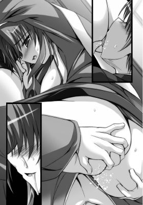
口からペニスを吐きだして、カレンは美貌を歪め、ひときわ激しいイキ声をあげる。
「カレン、お、俺もっ――」
善雄は、下腹部にしこっていた力を思うさま解き放つ。
肉竿が痙攣したかと思うと、次の瞬間、熱いスペルマが先端から噴出した。
カレンの気高い顔に胸に飛び散り、彼女を白濁に染めあげる。
ヴァギナがひくついて、まるでお漏らしと見まがうまでに大量の潮と愛液のブレンドを搾りだし、善雄の顔をしとどに濡らした。
あまりにも激しく達してしまったため、脳裏が霞んでしまう。
カレンは、ぐったりと善雄の体に崩れ落ちた。
うつぶせになったまろやかな乳房の奥から、せわしない鼓動が伝わってくるのを善雄は感じ取る。
しばらくの間、二人は無言のまま乱れた息を整えようと深い呼吸を繰りかえす。
「はぁはぁ......。まだ......。まだ、終わってませんわ。わたくしは有言実行......。わたくしが善雄を苛めるんですもの――」
髪を乱し表情を蕩かせたカレンが、途切れとぎれ言うと、残る力を振り絞って身体を起こした。
４ 騎乗位でイッて
カレンは、少し力を失ってうなだれた肉棒を見つめると、そっと手を伸ばした。
顔や髪に飛び散ったザーメンを拭うことなく、善雄の分身をいとおしげに優しく撫でさすりはじめる。
「うぁ......。ま、マジっすか......。っく、うぅう......」
「あなた、まだ若いのだから、すぐに復活するでしょう？」
そう言ううちにも、肉棒はすでに雄渾に育ちつつある。
全身の血液が集まってきて、すぐさまぱんぱんに張りつめ、見事な復活を遂げる。
「ほら、もう......。素敵......」
激しいエクスタシーによって女の本能を剥きだしたカレンが、うっとりと剛直を見つめて親指と人差し指で弾いてやる。
そして、いったん腰を浮かすと、身体の向きを再び逆にして善雄を見下ろす。
獲物をいたぶるときの好戦的なまなざしは、高貴な女豹を思わせる。
これから彼女に支配される予感を覚え、善雄はどきりとする。
こういうときの彼女の美しさは、野性的でいつもよりも際立つ。
「善雄......。挿れますわよ」
そう言うと、カレンは腰を浮かせて、肉棒の先端を自らの柔らかな陰肉へとあてがった。
善雄がごくりと唾を呑みこむのを見て、腰を前後に動かして焦らしにかかる。
浅い場所を亀頭がゆるりと泳ぎ、とろみのついた蜜がペニスに伝わり落ち、刀身をてからせる。
そのまま、蕩けそうなため息をもらしつつ、カレンはしどけない表情をして腰を沈めていった。
善雄は、形のよい胸の谷間の向こうに見える彼女の官能的な表情に見惚れる。
よくほぐされたヴァギナが、じりじりと刀身を呑みこんでゆく。
ざらついた蜜壺全体が締まり、穿たれたペニスを万力のように締めつけてくる。
「っくうう......。き、つい......っスよ。うあ......」
「フフ......。はぁ、ンっ。んはぁはぁ、善雄、いい顔してますわよ」
「カレンのほうこそっ。っく！ うぅっ。っぐ......」
「もっともっといい顔を見せなさいっ」
上ずった声で高らかに言い放つと、カレンが腰を上下に動かしはじめた。
やや前のめりになって、クリトリスもこすれるようにして――
その動きに合わせて、量感たっぷりの豊かな乳房が上下左右に揺れ動く。
泡立った愛液がじゅぶじゅぶと音をたてて、つながった箇所からもれでる。
「ンふっ。くふっ。あぁあっ、善雄っ、いいっ。いいですわ......」
わざと下腹部に力をこめて、括約筋を締めながら、リズミカルに腰を上下に動かす。
体重を預けきるたび、身体の芯が白熱し、閉じた瞼の裏が赤く染まる。
「あぁああっ。善雄のがっ。硬くてっ。なかいっぱいで......。んふっ。あぁああ。とってもいいわっ」
いやらしい言葉を紡ぎながら、なりふりかまわず一心不乱に腰を振りたてるカレン。
腰を左右にくねらせ、めくるめく快楽に溺れる。
もう我慢できないといったふうに自らの乳房をつかんで大きく喘ぐ。
あまりにも悩ましい彼女の痴態に善雄の我慢も限界だった。
いきなり彼は、彼女の腰を引き寄せつつ、自らの腰を思いきり上へと突きあげた。
「っきゃっ！ あっ、あはぁっ。よ、善雄っ!? う、ん、んんぅっ。あ、あっ、あぁああぁあ、下からくる。いっぱいきますわっ。あはぁああ」
不意を突かれたカレンが目と口をめいっぱい開いて身体を硬直させる。
強烈な一撃を子宮口に食らい、一瞬意識が遠のいてしまっているようだったが、善雄の猛烈な動きはとまらない。
たてつづけに腰を突きあげて、カレンを真下から攻めまくる。
カレンのしなやかな肢体が善雄の上で頼りなげに揺れ、乗馬に興じているようだ。
「んっあぁああっ。も、もうすぐにっ。あぁああっ。おかしくなって。こ、壊れてしま、あ、あぁあっ。あぁっ。はぁあああんっ！ あはぁあああっ！」
唇をわななかせると、彼女は天井をあおぎ見て、甲高い声で啼く。
大きな乳房が乱暴なまでに上下に揺れ、下乳が腹部を叩いて湿った音をたてる。
全身から吹きだした珠のような汗が、鎖骨から胸の谷間を伝わり落ちて、臍にまで達した。
艶やかな長い髪の毛先が宙に踊る。
年下の青年を責めていたはずのカレンが、今や逆に翻弄されてしまっている。
断続的に叩きこまれる熱い衝撃が、完全に彼女を征服した。
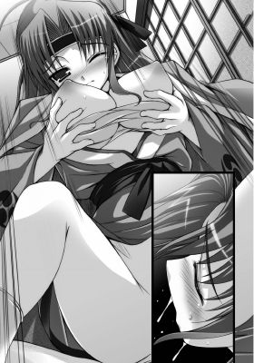
「やぁああっ！ あぁああっ！ またぁあっ。イッてしまいますわ。もう、これ以上はダメぇええ。我慢っ！ んぁはあぁああ、できませんわぁああっ。イクぅうっ！」
白目を剥いたカレンが、首を左右に振りたてて、わしづかみにした乳房に深く爪を立てて、ぶるぶるっと大きく震えた。
刹那、善雄を包みこんでいた肉壺が肉棒から精を吸いつくそうと激しく蠕動する。
それに抗うことなく、善雄は二度目の気をやった。
腰が浮くような感覚のあと、二度目の射精とはとても思えないほど濃い白濁液がたっぷりと膣内に撒き散らされる。
「ん、っは、はぁはぁ......。あ、あぁあ......。熱い......。あ、なかでどくどくって。いっぱいいっぱい出てますわ......。ん、んんんっ」
目を細めて、激しい絶頂の余韻に浸るカレン。
あんまりにも激しく達したせいか、よく引き締まった腹部が時折痙攣している。
接合部から愛液と精液の入り混じった濁り汁が漏れでて、濃い芳香を放つ。
「あぁ......。善雄......」
感極まった声で呟きながら、カレンは上半身を彼の胸に重ねると唇にキスをした。
「カレン」
「――わたくしだけのものにしておきたい。こんな気持ちは初めてですわ」
つながったまま、彼の胸に頬を擦り寄せる。
彼女の頭を撫でてやりながら、善雄は感慨深げに言った。
「そんなの俺も同じだし......。てか、まさか独り占めできるなんて思ってもなかった。俺にはもったいない女だってずっと思ってたし......。でも、頑張ってみれば、案外手が届くもんなんですねえ。高嶺の華ってやつは」
「もったいなくなんてないですわ。善雄、あなた、自分の価値に気づいてないだけですわ。肇を助けたときのあなた......。最高に輝いてましたわよ」
「いやあ......。取り乱して恥ずかしいトコ見せたかなあって」
善雄が照れ笑いをすると、カレンは彼を甘く睨みつける。
「なにが恥ずかしいというんですの？ あのときのあなたの姿を見て......。私は自分の本当の気持ちに気づくことができましたのよ？」
そう言ってから彼女は目を伏せて呟いた。
「――肩書きとか誇りとかメンツとか。そんなものが邪魔をして。単純だけど、一番大事な気持ち。忘れていましたわ。局長と奏音のことがただ好きだということ」
「どうしたんっスか？ 今日のカレン、えらく素直な気が......。てててっ」
善雄の頬をつねって怖い笑みを浮かべる。
「......減らず口を叩く暇があったら、さっさと寝て、英気を養いなさい。土曜の朝、新撰組全員で真正面から城に攻め入るのだから――」
「は、はひ......」
小さく欠伸をすると、安堵のため息をもらしたカレンは目を閉じた。
欠伸がうつって、善雄まで大欠伸をする。
やがて、安らかな寝息が聞こえてくる。彼女の肩が規則正しく上下に動く。
善雄も彼女に誘われるようにして、再びゆるやかな眠りへと落ちてゆく。
気の置けない相手のぬくもりはなによりも心地よく。
いつしか、二人は深い深い眠りへと落ちていったのだった。
新撰組全員で謀反を起こすこと――
それがどのような事態を引き起こすか、あらかた予想はついていたとしても。
第三幕 奏音姫 ＊囚われの姫と百合の剣士＊
１ 籠のなかの......
京の統治を司る桜花城――
絢爛豪華な城の奥まった部屋で、毎日のように贅を尽くした宴が催されていた。
その主賓――髪を結いあげべっ甲のかんざしを挿した少女が、ひっきりなしに自分の元へと挨拶にやってくる者たちにはんなりと笑みかけ会釈をする。
朱色の着物に淡いピンク色の帯は上等な正絹で、なでしこの柄が目を引く。
「姫君におかれましては、長らくつづいたご病気が快方に向かわれたとのこと。なによりにございます」
「――ご心配おかけしましたが、もう大丈夫です」
何度同じやりとりを繰りかえしたかしれない。
姫こと奏音は内心うんざりとため息をつく。
その傍には、眼帯をした男装の麗人、朱羅が常に控えている。
あぐらをかいて、刀を鞘ごと肩にもたせかけ、酒をあおる様はどこからどう見ても美丈夫な青年が杯を傾けているようにしか見えない。
さらしを巻いた立派な胸さえなければ――
女中たちが、朱羅に見惚れてほうっと熱いため息をついている。
だが、当の彼女は女中たちに笑みをかえすこともなく、相変わらずの無表情。
透き通った肌は、まるで血が通っていないように見える。
それがまた狼のような危険な魅力を醸しだして、女中たちを骨抜きにする。
やがて、ひととおり賓客の挨拶の応対をし終えた奏音は胸から扇子を取りだして、口もとを隠すと咳払いをした。
すると、朱羅が奏音の傍まで身体を寄せると耳を傾ける。
「柳生。ちょっと席をはずしてもいいかしら。くたびれてしまったわ」
「御意――」
そう言うと、彼女はその場に立ちあがり、奏音の手を恭しく握りしめると彼女を先導してゆく。
朱羅が胸を張って歩を進めると、その気迫に圧された人々が道を譲る。
奏音に話しかけようと口を開いた者たちも押し黙る。
やがて、朱羅は長い廊下を歩いてゆき、奏音の部屋へとたどり着いた。
部屋へと入り、座布団に座ると、奏音は深いため息をついた。
傍の脇息に肘をもたせかけて目を閉じる。
「私が新撰組にいた間、ずーっと病気で臥せっているという設定で......。その快気祝いに毎日毎日あのような宴を催すなんて。付き合わされる方々も大変でしょうに。お父様ってあんなに親馬鹿だったかしら？」
「将軍様の元を長年離れていたのですから。これくらいの親馬鹿、許してさしあげましょう。それと、某の前ではお楽に――」
傍に控えて畏まった朱羅に奏音は舌を出して笑ってみせる。
「あはぁー。やっぱり十匹くらい猫引っかぶっちゃってるってわかるぅ？ あたし、お姫様とかって似合わないんだよねえ。肩凝っちゃうな。こんな重たい着物、動くだけで一苦労で、体力奪われまくりだし」
あっけらかんという彼女だが、その顔はやや青ざめている。
それを朱羅は見逃さない。
すっとその場に立ちあがると、なにも言わずに床の間に移動し、奏音のための寝床を整えつつこう言った。
「――人間は環境に順応する生き物。すぐに慣れます」
「そっかなあー」
そう言うと、奏音は無邪気に足を前に投げだして大きく伸びをする。
「もう十日も経つのにいまだに慣れないんだけどねー」
「まあ、今はご無理をされないように。少し仮眠をとりましょう」
朱羅が奏音のところへと戻ってくると、彼女に手を差し伸べた。
すると、奏音はその手を取らずに苦笑する。
「はははっ。柳生ってなんでもお見通しなんだね......。やだなあ」
「それは、当然のこと。ずっとあなただけを見てきましたから――」
「柳生？」
クールな表情だが、その漆黒の片目の奥に情熱の炎がちらっと燃えた気がして、奏音は驚く。
「まあ、そうだよね。柳生はあたしの護衛だもんね。いつもありがとう。陰ながらあたしを護ってくれていたんでしょ？」
「――それはもちろん」
そう言うと、またも朱羅は奏音をひたと見据えて沈黙する。
奏音はどちらかといえばよくしゃべるほうなため、その沈黙に居心地の悪さを感じてしまう。
「むぅ。やだなー。柳生はいっつも真面目っていうか。笑い成分が足りないよー？ もうちょっとこう明るく行こーよっ」
「某、不器用なもので――」
「もうちょっとこうやって口の端あげて笑ってみればいいのに。形から入るだけでもなんだか幸せな感じになるよー？」
「御意」
単調に答えると、朱羅はひくりと頬を動かした。
無理に笑おうとして、かえって険悪な表情になり凄みが増したため、それを見た奏音は思わず吹きだしてしまう。
「やだ。もうー。柳生ってほんとにおかしーんだから。真顔でボケるってかなりの高等テクニックだよー」
「ふむ」
どこか納得のいかないというふうに首を傾げる朱羅だが、声をたてて笑う奏音の顔を見て、少し表情を和らげる。
「――さあ、少し寝てください」
「うん......。ありがとね。お父様には悪いけど、少し昼寝させてもらおっと」
「運んでさしあげましょう」
そう言うと、奏音の小さな身体を横抱きにした。
思わず、奏音は、朱羅の逞しい腕を妙に意識してしまい頬を染める。
「んもー。自分で歩けるよ。こんなことしなくていいのに......。重い......よ？」
「いや、軽すぎるくらいです。もう少し食べねば育ちませんよ」
「むうううー。どーせ背と胸のこと言ってるんでしょー。悪かったねー」
「まあ、姫は小さくて可愛いですが」
「む。ほ、誉めてもなんにもでないよー？」
「某は事実を口にしているだけです」
「むむむぅうう......」
朱羅が冗談を言うような人間でないことは奏音もわかっていた。
物心ついたときから、剣の師範兼護衛として奏音の傍につき従っているのだ。
それは、城を離れ、奏音が新撰組で沖田奏音として活動しているときも変わらない。
常に奏音の影として、ひそかに彼女を見守りつづけてきたのだ。
「――最近、寝が足りていないようですし」
奏音を寝床におろすと、朱羅は彼女の帯を手際よくはずしてゆく。
着物は、帯を緩めるだけでもかなり楽になる。
そのまま着物を脱いだ奏音は、長襦袢を腰紐で固定しただけの楽な格好になる。
「うぅ、バレバレ？ どこまであたしのことを知ってるのー」
「すべて......」
「むむ......」
「すべて知っていますよ。姫が想いを寄せる相手のことも。そのためにあなたがしてきたことも」
「――柳生？」
いきなり、朱羅が怖いくらい真剣な表情で奏音を見つめてきた。
いつもは、なんの感情も示さない彼女の冷徹な表情。
だが、その闇の深淵をくりぬいたような瞳に、怒りとも悲しみとも知れない感情が滲みでていた。
なにかをずっと耐え忍んできて、やがて諦めの極致へと達したような。
その視線に耐えかねた奏音が思わず彼女の目から目を逸らしてしまう。
「......やだなあ。あたしは別になにもしてないよ」
「新撰組の輩どもはごまかせても、某にごまかしは利きませぬ。常にあなたは水面下で新撰組のために尽力してきた。身体が弱いにもかかわらず無理を押して」
「んー、それはさー。あたしがかっこつけたがり屋なだけだよ」
「いや違う。たった一人のためにと言ったほうが正しいかもしれませんね」
朱羅のその言葉を聞いた途端、奏音は身体を硬直させた。
朱羅は、淡々と言葉をつづける。
「近藤心梨のために。斎藤肇が、あの女に相応しい男かどうか、御自らじきじきに確かめるほどに――」
「やっ、やめて......。誤解だよ......。べ、別にそんなんじゃなくて。ただ、あたしは。新撰組に新しい風を......」
奏音は微笑んで、なんてことはないといったふうに取り繕おうとする。
だが、朱羅の視線から逃れるように、視線を落ち着かなく彷徨わせてしまう。
聡明な奏音のこと。他の誰かの前なら、簡単に仮面をかぶることができるはずだった。
ただ、朱羅にだけは、どう隠そうともどこまでも本心を見透かされている気がして。
どうしても動揺を隠し通すことができない。
（柳生。まさかあのときのあれを見ていたなんて......。今までそんなこと一言だって言ってなかったのに......）
冷や汗がこめかみを伝わり落ちてゆく。
過去にたった一度だけ、肇がどんな人間であるか確かめるため、奏音が肇に口奉仕をしたことがあった。
誰にも見られていないと思っていたのに、朱羅にその痴態を覗かれていたのだと知り、さすがの奏音も半ばパニック状態に陥ってしまいそうになる。
そんな彼女に、朱羅は淡々と言葉をつづけた。
「某はずっとあなたを見てきた。すべて知っています。あなたのことならなんでも」
「......柳生。そんなのやだ......。なんだか怖いよ」
「怖いですか？」
「あっ――」
朱羅が奏音の手首をつかむと、身体を前に傾けて迫ってくる。
「ああっ、や......。柳生......。んんっ!?」
彼女の手を振り払おうとするが、奏音の力では朱羅の力には抗えない。
顔をそむけようとするものの、細い顎をつかまれ、観念して目をつぶる。
一瞬後に、唇に柔らかいものが押しつけられた。
朱羅の呼気を感じ、奏音は今、彼女に接吻されているのだと知る。
「んっ。んんんぅっ」
あまりにもいきなりすぎて、いったいなにがどうなっているのか理解が追いつかない。
（な、なんでこんなことに。あたし、柳生に接吻されてる!? まだ誰にも接吻されたことなんてないのに）
現実感に乏しくて、自分が夢を見ているのではという気にすらなってしまう。
女同士なのに、師弟関係にあるのに、護り護られる関係にあるのにという背徳感が幾重にも重なり合って奏音を苛む。
だが、そうこうしている間にも、唇にさらに柔らかで湿った感触を覚える。
朱羅が奏音の唇を舐め、下唇を甘噛みしたあと、上下の歯の間からなかへと舌を差し入れてきたのだ。
「んふっ。んぅうう......。んはぁ。やぁ......。っちゅ、ん、んふぅうううっ」
舌から逃れようと首を振ろうとするものの、頭を抱えこまれているため、一瞬唇が離れただけで、再び朱羅の唇が少女の唇を塞ぐ。
熱烈な告白の言葉などなくても、その接吻だけで、朱羅が今までどんな気持ちで奏音を見守っていたかが伝わってくる。
けっしていやではなかった。
むしろ、そこまで自分のことをひたむきに想ってくれている人間がいたということに奏音は感動する。
同時に、今までずっとその情熱をひた隠してきた朱羅に申しわけないことをしてきたという罪悪感にも駆られる。
また、ずっと信頼してきた朱羅を拒絶してしまうことが怖くてならない。
さまざまな考えが怒濤のごとく奏音の脳裏に浮かんでは消えるのを繰りかえす。
しかし、それとは裏腹に、身体は外部からの刺激に正直に反応してしまう。
舌と舌とが触れ合うたびに、じんわりと脳の芯が溶かされていくような快感を覚え、いつしか奏音は抵抗をやめていた。
「んっ――。んふっ、ちゅ、ん、うん......」
鼻にかかった愛らしい声をもらす奏音の様子に気づいた朱羅は、いったん唇を離すと、目を細めて彼女へと囁くように言う。
「――意外。抵抗しないのですね」
「はぁはぁ......。だ、だって、なにがなんだか......」
「少しは期待してもいいということですか」
そう言いながら、彼女は奏音の背後へと移動し、彼女を自分の膝に座らせた。
顔を真っ赤にした奏音は、瞳をとろかせて、従順に朱羅に従う。
朱羅は、少女の脇の下から両手を伸ばすと、長襦袢の胸もとを左右に開いた。
たちまち、まだ成長過程にあるささやかなふくらみがあらわになる。
「っきゃぅ......。や、やぁあっ!?」
奏音は悲鳴をあげて胸もとを覆う。
が、朱羅はその腕の下へと無理やり手を滑りこませると、汗ばんだ滑らかな丘の感触を味わう。
小さな乳首がすでに硬い蕾と化しているのを手のひらに感じる。
「で、でもっ。あ、だ、だめだよ。女同士でこんなのっ」
「そんなことは些細な問題にすぎない」
朱羅は、米粒ほどの二つの乳首を指で摘みあげて、ぐりぐりと引っ張ってやる。
と、刺激によって乳首が勃起して大きくなる。
指で引っ張れば引っ張るほど、なだらかな曲線がハの字となり急勾配になる。
いたいけな少女の乳首が伸びる様が背徳的な色香を放っている。
「あ、あ、そんなこと言ったって......。ああぁ、やっ。だめ、だめぇええっ。んんっ。あぁあ......」
奏音が頭を左右に振りたてて、甘い声をあげながらも、朱羅の手を必死につかんで抵抗を試みる。
それを見た朱羅が、未成熟の胸を苛めるのを中断してこう言った。
「――ご安心を。よく眠れるように薬を塗るだけです。それならかまわないでしょう？」
「はぁはぁ......。んぅっ。く、薬？」
「ええ。姫はただでさえ身体が弱いのですから......」
「そ、そういうことなら......」
「御意――」
恭しく頭をさげると、袂から貝殻の小物入れを取りだした。
なかを開くと、赤錆色をした軟膏が入っている。
それを手に塗りたくると、朱羅は奏音の胸へとそれを塗りこみはじめた。
「や、柳生。なにをっ！ んんんっ。あ、あぁ、先っぽが熱っ......。んあぁ」
白い胸に赤錆色の指紋が残り、乳首にも親指で円を描くように塗られた途端、奏音はびくりと身体を激しく反応させた。
その可愛らしい反応に、凄みを帯びた笑みを浮かべると、朱羅は親指と人差し指とで乳突起を捻りつぶすように嬲りはじめる。
「んはっ。先っぽが熱いっ。熱いのっ。な、なにっ、それえっ。んはぁ、はぁはぁ」
明らかにおかしかった。
軟膏が乳首から沁みる。
手のひらに包みこまれた小さな二つの丘が、内側から発熱しているような感覚に身震いする。
「――それっ、ただの軟膏じゃ。んっ、んんっ」
赤錆色の軟膏を塗りひろげられながら、形を変えつづける自分の胸を凝視する奏音が、切なげに上半身をよじり、恥ずかしい声をこらえようとする。
だが、おっぱいが火照ってどうしようもなくなってしまう。
特に念入りにくにくにと左右に押し倒されるようにして弄られる先っぽが火のように熱く疼く。
「んっ！ やぁああっ。熱い、熱いっ。ん、おっぱいがっ。うずうずしちゃっ」
奏音がこらえきれないといったふうに喉もとを思いきり反らすと、高い声をあげて、ぶるっと小柄な身体を震わせた。
それと同時に、粘り気のある蜜が奥からこみあげてきて、じゅんっと股間を濡らす。
膝小僧同士を恥ずかしそうにこすり合わせる奏音の弛緩しきった顔を見て、朱羅は悦に入る。
早くも、彼女の幼い顔が悦楽に蕩けそうになっているのが淫靡極まりない。
「よく効きますよ。この媚薬は。激しく気をやればよく眠れます。さあもっと――」
「あぅうう。そ、そんな妖しげな薬、どこで......」
奏音の問いかけに応えることなく、朱羅は彼女の肉づきの薄い下腹部に手を這わせたかと思うとショーツに手を差しこんだ。
薄布が下から持ちあげられ、手の形を浮き彫りにする。
「あ！ こ、これっ。いやいやっ。だ、だめぇ。そんなのっ。あぁあっ」
「こちらからのほうがよく効きます。粘膜のほうがよく沁みますゆえ」
「わ、わ、わかってる。だからこそだめってっ！ あ、あ、ぁあっ、言ってるのに。ん、あぁああああっ」
あわてて太腿同士をきつく引っつけて、朱羅の手の侵入を阻もうとする奏音だが、それでも彼女の手は力ずくでデルタゾーンに侵入してくる。
薄い土手に生えたささやかな茂みをかき分け、刺激が強い軟膏が、少女の秘所へと塗られた。
刹那、ひりひりっとした感覚が敏感な箇所を責めたてる。
「熱っ。んはぁ、こんなトコが熱い......。疼いちゃうなんて......。やぁ、やぁああん。はぁああ......。あ、あ、あぁああっ」
腰を左右にくねらせて、奏音は切なそうによがる。
粘膜に塗りたてられた軟膏が、たちまち彼女を支配してゆく。
まだ男も知らない初心なワレメが激しくひくつくのを指先に感じる朱羅。
すっかり柔らかく濡れそぼった襞の浅い箇所で指を遊ばせたかと思うと、いきなり襞をかき分けて、こりっとしたしこりへと軟膏を塗りこんだ。
「ひっ！ やぁああぁあああっ！ そ、そこに塗っちゃ。あぁあああ、いやいやいやぁああああ。あ、あはぁあっ。熱いっ。熱すぎるのっ」
刹那、奏音が四肢を硬直させ、切羽つまった声をあげた。
同時に、まだほころびはじめたばかりの花弁の奥から、乙女の甘酸っぱい水鉄砲が放たれる。
それを目の当たりにした奏音は、細い肩を上下させながら頬を染める。
敏感な肉芽に媚薬を塗られてしまっては、もうなす術がない。
朱羅に嵌められたことを知り、小さな胸が落ち着きなくとくとくと速い鼓動を刻みはじめた。
（あぁ、おかしいの......。どうしたらいいのっ。このままじゃ収まりがつかなくなっちゃう......。どうすれば......）
このままいけば、もう戻れないところまでいってしまいそうで。
が、さすがにその覚悟まではできていない。
奏音は戸惑い、頭を後ろに巡らすと不安げに朱羅に助けを乞う。
しかし、朱羅は指をとめることなく、さらに熱をこめて、肉真珠に軟膏を塗りこみはじめた。
たっぷりの愛蜜を細い指先にまとわせてぶるぶると震わせつつ、陰核を奥へと押しこんでやる。
「やぁああっ。んぁはっ！ はぁああっ。あぁああ、や、やっぁああ、またぁあっ」
何度も何度も潮を噴きつつ、奏音の唇から甲高い喘ぎ声が放たれる。
幼い身体つきの少女が、艶やかな声をあげる様が朱羅の欲望の炎を煽る。
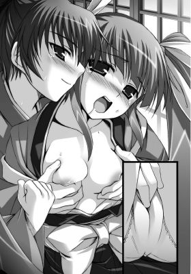
「――激しくおイキなさい。さあ、もっともっと」
サドっ気をあらわにした朱羅が、指の振動を速める。
少女から女へと花開いていく過程にある身体が小刻みに震えた。
媚薬をもっとも敏感な肉真珠の粘膜に塗りこまれ、秘芯が熱く疼く。
「んぁあああっ。あぁあああっ！ あぁああ、またあ、イクっのぉ。もう我慢。無理、あはぁああああん！」
奏音は朱羅の膝の上で今までにないほど激しく達した。
刹那、小さなヴァギナが生き物のように物欲しげに蠢く。
意識が朦朧となり、息が激しく乱れてしまう。びっしょりと汗をかいた細い身体がぴくぴくと時折思いだしたかのように痙攣する。
「姫。気持ちいいですか？」
「っはぁはぁ......。う、んぅ......。気持ちっ、よすぎて。わけわかんなくなって。あぁ、こんなの恥ずかしすぎるのにぃ......」
唇を噛みしめると、師の手で無理やり気をやらされたことを恥じらう。
だが、そんな彼女の様子がさらに朱羅を奮い立たせる。
「では、もっとしましょう」
そう言うと、彼女はややほころびはじめ、濡れた縦線に指を沿わせた。
途端、奏音が目を見開き、はっと息を呑む。
「柳生。そ、そこだけは。だめ。ゆ、許して......。こ、怖いの......」
誰も挿れたことのない聖域でありながら、最初に捧げるのは愛を誓った人へと決めていた。
とっさに、心梨の顔が脳裏をよぎり、奏音は心のなかで煩悶する。
（な、なんで......。局長のことを思いだすの。捧げるって言っても捧げようがないのに。あたし、矛盾している。どうして？）
彼女の混乱を見てとった朱羅が、指を差し入れるのを中断する。
奏音はほっと胸を撫でおろす。
だが、それで終わるはずはなかった。
「では、姫。四つん這いになってください」
「え？」
「できないのならば、このまましてしまいます」
「わ、わかった......」
２ 快感と決意
怪訝そうな顔をしながらも、奏音は朱羅の腕から逃れると、布団の上で四つん這いになった。
細い手足を踏ん張って、これからなにをされてしまうんだろうという不安で胸がいっぱいになる。
と、小ぶりなヒップを包む濡れたショーツをゆで卵の殻でも剥くかのように朱羅が脱がした。
完全に裸にされてしまった状態で獣のように四つん這いになるという行為が、とてもはしたなく思えて仕方ない。
奏音は、羞恥のあまり耳まで朱色に染めあげる。
「では、こちらにします」
「えっ!? まさかっ。ん、や、あぁっ。それはだめっ。そこは違っ。やぁああ」
いきなりヒップのすぼまりに指の腹を押しつけられ、奏音は腰を引く。
四つん這いで前に逃げるような格好となる。
が、朱羅は彼女を逃さない。
彼女の細い腰にもう片方の手をまわすと、自分のほうへと引き寄せる。
ちょうど膝の上に奏音をうつぶせにさせ、細い身体を固定してやってから、再び親指を彼女の菊座へとあてがった。
これからなにをされるか感づいた奏音は、必死に逃れようと暴れる。
だが、完全に身体を固定されてしまい、逃れることはできない。
「逃げなくても大丈夫です。すぐよくなる」
そう言いながら、朱羅は親指で小さなすぼまりをほぐしにかかる。
ワレメから滴るラブジュースを潤滑油代わりにし、じっくりと圧をかけてゆく。
「やっ。あ、あ、あぁっ。そんなとこ。違う......のに」
春画などで、前のほうに野菜やペニスやら天狗の鼻やらを挿れるということは知っていたものの、後ろの穴にも需要があるとは知らず、奏音は完全にあわてふためいてしまう。
博学な彼女がゆえに、自分の知識にない出来事に直面すると弱い。
「こちらもいいんですよ――」
「いやぁああっ。痛っ。痛いっ。あぁあああ、入らないよぉおおっ」
普段はきつく閉じた部分を無理やり指でこじ開けられ、鋭い痛みに奏音は悲鳴をあげる。
しかし、朱羅はひるまない。
むしろ、嬉々とした笑みを浮かべて親指を直腸へと沈めていく。
「く、あぁあっ。はぁはぁっ。んくっ。い、痛ぅう......。あ、あぅう......」
青ざめきった奏音の額に脂汗が浮かびあがる。
息がつまり、浅い息しかできなくなる。実際の大きさ以上のものをなかに挿れられ、責められている気がする。
恐ろしいほどの拡張感に身動き一つできない。
ほんのわずかにでも動いてしまえば、途方もない痛みが容赦なく襲いかかってくる。
それを恐れて、彼女は息を潜める。
だが、そうこうしているうちに、クリトリスに軟膏を塗りこめられたのと同じように、今度はアナルが発熱しはじめた。
「っく、はぁはぁああ......。熱ぅ......。お尻、熱いよ......。変な感じ......。んはぁ」
喘ぎ喘ぎ、眉をハの字にひそめて、知らずしらず深い呼吸になる。
と、浅い息をしていたときには、朱羅の指を締めつける一方だったが、尻穴が緩む。
結果、朱羅の親指が根元まで埋まってしまった。
「ひぁあっ。んはっ。んっ、んんっ、つぅうう......。あ、あは、くぅう......。きつい。ああぁ......。か、痒いよぅ......」
痛みと同時に今度はむず痒さを覚え、奏音は落ち着かなく尻をもじもじと動かす。
痛ければ痛いほど、むず痒さが強烈になり、直腸内をかきむしりたいという衝動に駆られる。
一方、朱羅はつるりとした熱い直腸の感触を堪能しつつ、親指をゆっくり動かしはじめた。
「んぁはぁあっ。やぁああ。痒いっ。痛っ。んぁっ。あ、あ、あふぁああっ」
痛い痒いと言いながらも、その声色には明らかに甘い余韻が滲んでいる。
軟膏が効いてきたのだと知りつつ、朱羅の指の動きが大胆になる。
（どうしてっ。痛いのに......。苦しいのになんか変なのっ。とても変な感じ。んはぁあ、ゆっくり深く効いてくる......）
指で奥を穿たれるときには痛くて仕方なくて、これ以上は無理だと思うのに。
指を引き抜かれるときに痛みの合間に時折ふっと深い心地よさが訪れる。
よくよく注意していないとわからない悦楽だが、いったんそれに気づくと、その得体の知れない心地よさは肥大していく一方だ。
やがて、経口粘膜に軟膏が沁み、尻穴の熱さのあまり痛みが失われる。
きつかったアナルが、ゆるゆるになり、朱羅は力いっぱい指を出し入れしはじめた。
ずぷっずずっという鈍い音が部屋に響き、奏音は背筋をのけ反らせて、犬が遠吠えをするときのような姿勢となる。
「んはぁあっ。あぁああっ。やぁあああ、深いっ。強いのっ。熱いっ。痒いぃ。もう、やああぁあ、すぐにっ。んはぁああ。イッちゃうぅううっ」
大きな目を見開いて、逼迫した声をあげる。
灼熱の坩堝と化した菊穴から、今まで感じたことのないエクスタシーが弾けた。
「ひぁあああっ、きゃぁあああうっ。やぁああやぁああっ。出るぅううっ！」
嬌声をあげると、生まれたての小鹿のように四肢を震わせた。
ぷしゅっという音と同時にワレメから大量の愛蜜が滴り落ちて、布団にお漏らしのような沁みを作る。
朱羅の親指をことさら強く締めつけたあと、奏音はその場に崩れ落ちた。
髪が乱れて細い首や額へと張りついている。
汗みずくになった細い背中をいとおしげに撫でてやりながら、朱羅はぎらりと眼帯をしていないほうの片目を仄暗くぎらつかせた。
「――やはり、雌雄を決するべき」
低く呟いた彼女の忍び笑いがだんだんと大きくなり、やがて狂おしい高笑いとなる。
その笑い声には一抹の寂しさが滲んでいた。
第四幕 柳生朱羅 ＊すべて捨てても欲しい心＊
１ 謀反
その週の終わり――まだ日が昇りきらない朝早く。新撰組の屯所は濃い霧に包まれていた。
表の通りはひっそりと静まっていたが、屯所のなかはすでにものものしい緊張に包まれていた。
普段、おしゃべりに余念がない少女隊士たちが、皆一様に真剣な面持ちをして、言葉少なに戦いの準備を整えている。
隊士たちは新撰組の正装を着用し、いつものように丈をつめたり、レース飾りを施したりといった改造服は仕舞いこんでいる。頭には鉄板が縫いこまれた鉢巻を巻いている。
庭には、立派な栗毛の馬「雷神」と白馬「風神」とに久々に鞍がつけられ、飾り立てられている。
着々と謀反の戦への準備は整いつつあった。
そんな最中、善雄が厠で用を足そうとしたとき、その横に並ぶ者がいた。
「善雄」
「よ、肇」
二人は肩を並べて、用を足す。
ややあって、肇がぶっきらぼうに悪友へと声をかけた。
「体の具合はもういいのか？」
「おう、俺はもうカレンさんのラブラブ看護でばっちし回復よぅ。そっちは？」
「俺も......。もう大丈夫だ」
「へっ、それならなにより。さすがゴキブリだよなあ」
「もちっとまともな喩えにしろ」
「へーへー」
いつもと変わりないやりとりにお互いほっとする。
おそらく、普段と同じようにこのまま減らず口を叩き合っていればいいのだろう。
だが、元来生真面目な肇はそれを自分に許さない。
彼は下腹に力をこめると、言おうか言うまいか迷っていた言葉を喉から外へと追いだした。
「――その、局長から全部聞いた。俺のためにいろいろ。すまん」
「なぁに、いいってことよ。てか、あらためておまえにそんなこと言われるとキモイぞ」
「む......。そ、そか。悪かったな」
「って、冗談だっつーの。おまえはいっつもそうだよなあ。なんでも言葉そのままを鵜呑みにするってーか。愚直すぎんだよなあ」
「......悪いな。単純で」
「まあ、そうじゃないおまえのほうが気持ち悪いけどな」
そう言うと、善雄は体を揺らしてその場を立ち去ろうとする。
その背中に向かって肇が言った。
「この戦いが終わったら、奢るから飲みに付き合え」
「おうっ！ 俸禄十日分は飲んでやるから覚悟しろ」
「望むところだ」
二人はにっと笑い合う。
互いの瞳に強い覚悟を見てとる。
それ以上、言葉は必要なかった。
男同士の約束が今ここに結ばれたのだった。
朝日が京のすべてを黄金色に染めあげる頃、寝ずの番をしていた城の門番たちがうつらうつら舟を漕いでいた。
が、奇妙なほど静まりかえった周囲に違和感を覚え、はっと顔をあげると彼方に黒い影が確認できる。
目を凝らすと、城門へとつづく大通りいっぱいに並び、行進してくる一団の存在に気がついた。
朝日を斜めに受け、勇ましく歩を進めてくる彼らは、誠の一文字を白く染め抜いた旗を風にはためかせている。
ずらりと居並んだ侍たちは、皆一様に浅葱色の羽織を羽織っていた。
遠目にもいったいなにが起こったのか一目瞭然だった。
浅葱色の羽織といえば、このあたりで知らない者はいない。
京の退魔に関する任務を将軍から一任されている乙女新撰組に他ならない。
「な、なんで新撰組が――」
「まさか......。謀反っ!? 殿に連絡さしあげなければ」
この明らかな異常事態に、門番たちは完全にうろたえてしまう。
剣の腕だけでも確かな集団は、加えて常人には理解しがたい技を使うのだ。
二人の門番は互いに顔を見合わせて、大げさなほどがたがたと震えはじめた。
と、そのときだった。
「――開門っ！ 我ら新撰組、将軍にお目通り願いたく参った。開門せよっ」
少女隊士たちを率いる近藤心梨が、先頭で栗毛の馬に乗り、門番たちに朗々と告げた。よく透き通った声があたりへと響き渡る。
炎を彷彿とさせる見事な赤毛のポニーテールが朝焼けの光に燃えなびいている。
「こんな早朝にっ。お目通りもなにもあったものか。お引き取り願おう。何事にも礼儀というものがあるであろう。このような真似をしてただですむと思うな。謀反とみなすぞ」
完全に怖気づきながらも、門番たちは自らの役目に忠実であろうと、形式通りの言葉を棒読みする。
そんな彼らを半目になって見据えると心梨は言った。
「火急の用にて。全員で参ったまで。開門しないのならば、力ずくで行かせてもらう」
「な、そ、そんなこと許されるはずがないっ」
「――問答無用！ 皆の者、私につづけぇぇええええええぇっ！」
心梨は腰の刀を抜き払うと、前方に突きだした。
朝日の光を浴びて、虎徹の白刃がぎらりと光る。
局長のかけ声に、少女隊士たちが呼応する。
「おぉおおおおおおおおおおおおぉおおっ！」
少女たちの勇ましい声が空へと響くや否や、心梨とカレンが馬の手綱を操り、横に並んで合い駆けし城門へと突進する。
そのすさまじいまでの迫力に、門番たちは道を譲るほかない。
二頭の馬の蹄が、なんと城門を同時に蹴破った。
その怪力に門番たちは腰を抜かしてしまう。
「いっけぇええええええええええええええええっ！」
「うぉおおおおおおおおおおおおおおおおっ！」
砕かれた城門を越えて、続々と少女隊士たちが城へと乗りこんでゆく。
とても「お目通り」とは思えない。どこからどう見ても、新撰組が将軍に謀反を起こして、襲撃したふうにしか見えない。
「曲者じゃぁああっ！ 出会え出会えぇえええ！ 新撰組の謀反じゃっ！」
城内が騒然となる。
刀を抜いた侍たちが、少女隊士たちと激しく刀を交える。
砂埃が舞い、激しい剣戟が繰りひろげられる。
先頭は心梨、そのすぐ後ろにカレン――
そのまたはるか後ろに肇と善雄が我先にと全速力で駆け、自分たちの彼女を追い駆けてゆく。
「奏音ぇえええっ！ いるのならば出てこいっ！」
「この騒ぎを鎮めたければ、さっさと出てきなさいっ！」
喧騒の最中、南の丸から西の丸へ心梨とカレンが馬で駆け抜け、声の限りに周囲に向けて叫びつづける。
猛然と飛びかかっていく幾多の侍たちを蹴倒して、城の奥を目指してゆく。
だが、いっこうに奏音の姿は見当たらないし、現われもしない。
隊士たちには、いくら傷を負っても、城を護る侍たちを傷つけてはならないと命令してある。
相手を傷つけずして戦うことは、自分たちの命を危険にさらすことに他ならない。
心梨のこめかみをいやな汗が伝わり落ちる。
（奏音っ！ 早く出てこいっ。長引けば長引くほど、皆が危ない――）
祈るような気持ちで、声を嗄らして叫ぶ。
「奏音ぇえええっ！ 頼むっ！ 出てこいっ。出てきてくれっ！」
城は広く、複雑な構造をしている。
そのなかのどこに奏音がいるかもわからない。
ただ、ひたすら本丸を目指す。
いかに新撰組全員が城に攻め入ったとしても、しょせん多勢に無勢。
全員が討ち死にする可能性も充分にある。
無論、それをわかっていて全員が心梨についていくと決めたことではあるが。
そうは言っても、心梨は、自分の決断のせいで今まで苦楽をともにしてきた隊士たちの命を散らしたくはなかった。
と、目の前を大勢の侍たちに塞がれる。
彼らは心梨ではなく馬を狙ってくる。
心梨は、雷神の首筋を撫でてやると、馬上から飛び降りた。
軽やかに宙返りし、地面に降り立つやいなや、雷神の尻を思いきり叩いて逃がした。
刹那、いっせいに彼女へと襲いかかる侍たち――
だが、心梨は刀を真横に振るっては彼らを牽制しつつ、飛びかかってくる侍たちの剣筋を見切ってかわし、体当たりを食らわせては峰打ちし、侍たちを昏倒させてゆく。
彼女の通ったあとには、気絶して白目を剥いた侍たちが死屍累々と転がる。
しかし、いくら倒しても倒しても、次から次へと新たな侍たちが襲いかかってくる。
カレンと肩を並べて縦横無尽に刀を振るうも、さすがに息があがってしまうし、すでに羽織はずたずたに裂けてしまっている。
二人は、多くの敵を薙ぎ倒しつつ廊下を抜けて内部に侵入すると、延々とつづく襖を開けつづけてさらに奥を目指す。
「――はぁはぁ。雑魚も数が多いと厄介じゃな」
肩口から血を流しながら、心梨がうめくように傍のカレンへと言った。
「ふっ。ですが、しょせんは雑魚は雑魚ですわ。束になってかかってきても、わたくしと局長の敵ではありませんわよ」
さらしが裂け、ほぼ胸が露出してしまっているカレンは、額から血を流しながらも、好戦的な笑みを心梨に浮かべてみせる。
こんなときでも強気な姿勢を崩さない彼女に心梨は勇気づけられる。
すでに手は痺れきって感覚がなくなっていたが、心梨は再び、虎徹を握りしめる手に力をこめなおすと、天井をあおいで魂の限りに叫ぶ。
「乙女新撰組っ！ 見参っ！ 奏音ぇぇっ！ いるなら出てこいっ！ 皆、おまえに戻ってほしくて迎えにきたのだぞっ！ 返事をしろぉおおおおおっ」
すると、奥の間につづく金色の豪奢な襖が開いた。
背が低い少女が姿を見せた途端、今まで心梨やカレンたちへと刀を振るっていた侍たちがいっせいにその場に正座して深々と頭をさげる。
「――局長っ!? どうしてっ！」
少女の高い声があたりに響く。
裾が長く七色の糸で精緻な刺繍が施されている着物を身にまとって、心梨たちを前に唖然と立ちつくすのは奏音だった。
新撰組の屯所では、ツインテールに丈の短い着物という闊達な格好だった彼女が、深窓の姫君の格好をしてそこに立っていた。
そのきらびやかな格好を見て、また家臣たちの態度を見て、心梨もカレンも奏音が他ならぬ将軍の愛娘であることを知る。
だが、そんな真相は、新撰組の誰にとっても些細なことにすぎなかった。
「奏音......。いた......。見つけた......」
心梨が顔をくしゃっと歪めると、震える声で呟いた。
もう二度と会えないかもしれないと一度は思った親友の姿を久しぶりに目にした途端、鼻の奥がツンと痛み視界が滲む。
「呆れましたわ。奏音がまさか将軍の姫君だったなんて。それでこんな最奥まで来ないと出会えないだなんて......。相変わらず狸だこと」
口は悪いが、その口調は暖かで、カレンの紫水晶のような瞳は潤んでいる。
「隊長だぁあっ......。また会えたぁあっ」
「隊長、隊長っ！ 迎えに来ましたよおお、戻ってきて。お願いです」
少女隊士たちも、半べそをかきながら涙を流して口々に奏音へと訴える。
「みんな......」
しばらくの間、周囲を見渡して言葉を失っていた奏音だったが、やがて、声を震わせて呟いた。
「馬鹿だよ。なんでこんな......。むちゃくちゃなことするの。むちゃくちゃすぎだよ」
「皆、物わかりが悪いほうらしくてな」
心梨がにっと笑って言うと、奏音の目から大粒の涙が一つだけこぼれ落ちる。
かと思うと、いきなり彼女は眦を吊りあげて怒りはじめた。
「っていうか！ なんでそんな勝手なことをするの！ 人の気持ちも知らないで。あたしは、局長たちが幸せならそれでいいって思ってた。なのに......」
「その言葉、そっくりそのままおまえにかえす」
「え？」
「おまえこそ、人の気持ちをわかっておらん。私たちのためと言いながら、実際には私たちの気持ちをないがしろにしておるのだぞ!?」
「――そうよ。奏音。でなくちゃ、城に攻めこむだなんて命知らずな無茶、皆がするはずありませんわ」
「あ――」
その言葉に、奏音ははっと息を呑むと、うつ向いて地に視線を落とす。
と、そのときだった。
「これで最高の舞台が整った。この日が来ること、どれほど待ち焦がれたことか」
静まりかえったその場に、バリトンの声が響き渡る。
「や、柳生!?」
黒い着流しを着た朱羅が、ゆらりとその場に現われると、ゆっくりと心梨のほうに向かって歩いてくるところだった。
袖のなかに手を入れて胸の前で腕組みをしており、腕を通していない袖が背後へと波打っている。
長い南蛮風の煙管から白い煙がたゆたっている。
黒い眼帯をした彼女に全員の視線が集まる。
城の一番奥の間にて、心梨と朱羅が対峙する。
「柳生。どういうつもり？ この日って......」
いやな予感に身構えた奏音が彼女へと尋ねた。
すると、朱羅は剥き出しにした肩を竦めて言った。
「姫、あなたの目の前で近藤心梨を殺す。そうすれば諦めもつく」
「なっ！ なぜっ」
「なに、最初は某を憎むでしょうが。それでもいい。某を見てもらえるならば、憎まれても殺されても本望」
「............」
狂気に彩られた彼女の愛に奏音は打ちのめされる。
そこまで誰かに深く愛されるということは、そうあることではない。
薄ら寒い気持ちになりながらも、一方で妖しい感覚を覚える。
彼女の情熱に応えたらどうなるのだろうと、つい考えてしまわずにはいられない。
それは、朱羅に後ろを征服されたときの妖しい気持ちにも似ていた。
「この刀、夜叉は虎徹と真逆の力を持つ魔刀――」
そう言い放つと朱羅は腰の刀を引き抜いた。
闇よりも濃い黒い刀身がその全貌を現わす。
それは禍々しい美しさを放つ不気味な刀だった。地鉄美しく刃文は五の目乱れで、刀身には見事な龍が彫られている。
虎徹と瓜二つな刀だった。
夜叉が刀身にまとった闇が明滅すると、心梨が持つ刀、虎徹も白く明滅する。
「――虎徹は、近藤家に代々伝わる退魔の刀。その真逆の刀ということは。妖刀の類。妖刀に魂を売り渡せば滅びしか待っておらぬ」
「それでもよかった。おまえをこの世から消せるなら――」
言うや否や、朱羅が身体を前のめりにして地を蹴った。
そのまま一気に距離をつめると、振りかぶった刀を振りおろし、なんと刃を地に突き刺した。
刹那、地面がひび割れたかと思うと、夜叉の周囲から一瞬、人の憎しみをそのまま形にしたかのようななにかが現われでる。
それらは醜悪な表情で心梨へと襲いかかる。
同時に、この世のものとは思えない叫び声とも泣き声ともとれるおぞましい声が響き渡った。
「っく！ なんてむごいことをっ！ 彷徨える無念の魂を無理やり召喚し、己が欲望のために使役するなどっ！ 断じて許さんっ」
心梨は怒りに髪を逆立たせ、腹の底から声を絞りだした。
「悪霊よっ！ 安らかに眠れっ！ 臨、兵、闘、者、皆、陣、列、在、前！」
左手に刀を握りしめ、右手の人差し指と中指とをそろえ、縦四本、横五本にすばやく九字を切り結ぶと、気合もろとも刀を真横へと薙ぎ払った。
仄白い輝きをまとった虎徹に斬られた禍々しいものたちは、断末魔の悲鳴をあげ、空中へと霧散してゆく。
だが、それらが完全に消え失せないうちに、朱羅が二の太刀を振るう。
心梨はすぐさま態勢を整えると、苦しげな表情を浮かべ、気合もろとも新たに召喚された悪霊たちに斬りかかる。
「な、なんなんだ。あれは......」
二人の戦いを目の当たりにした周囲の人間たちは、何度も目をこすりながら後ずさってしまう。
ただの剣客同士の戦いではなかった。
今まで見たこともない技と技とが苛烈なまでにぶつかり合い、朱羅が人ならぬものを召喚しては、心梨がそれらを斬り捨てる。
畏怖の念を持って、周囲は二人の戦いを固唾を呑んで見守る。
心梨たちの戦いは、一般の剣客たちのそれとは次元が異なるものだった。
なかにはその太刀筋を追うことすらできず、目の前でなにが行なわれているのかわからない者たちすらいる。
心梨たちをずっと見守っていた肇たちは、押し黙ったまま勝負の行方を見守る。
と、一瞬、肇は朱羅と目が合ったような気がする。
いや、気のせいではなかった。
朱羅は口もとをにたりと歪めて、刀を振りおろす方向をとっさに変えた。
「――なっ！ おまえの相手は私であろう！ 余所見をするとはっ！ 私を愚弄するつもりかっ！」
「ただよい趣向を思いついただけ」
歌うように言うと、朱羅は肇を見据えて刀を振りおろした。
肇が身構え、そろえた指で碁盤状に印を結び、退魔の術で身を護ろうとする。
だが、一瞬、遅かった。
子供たちのおぞましい笑い声が肇を取り囲んだかと思うと、彼の心臓めがけていっせいに手を差しだした。
「がっ!?」
肇は目を見開き、苦悶の表情を浮かべたまま硬直した。
心臓を氷の手で握りつぶされたかのようなぞっとする感覚――
「肇ぇええええっ！」
心梨が叫ぶと同時に、悪霊に斬りかかる。
だが、肇の心臓へと伸ばされた半透明な無数の手だけは消えない。
見るみるうちに彼の顔が蒼白になる。
「――この男、おまえには斬ることはできまい。だが、斬らねばここにいる全員がこの男に殺される。最高の余興だろう？」
朱羅は凄絶な笑みを浮かべて言い放った。
肇の体ががくがくと操り人形のように不自然な動きを見せ、心臓から体のすみずみまで紫色の血管がみみず腫れのように浮きでる。
心梨は、その場に呆然と立ちつくしたまま、力なく首を左右に振る。
「柳生！ やめてっ！ なんでみんなを巻きこむの!? あたしが欲しいならあげる！だからお願いやめてっ」
奏音が叫ぶと、朱羅の元へと走り寄り、彼女の身体を乱暴に揺すりたてた。
「残念ながらもうこうなってしまえば手遅れです」
朱羅が呟くと、そのままその場に片膝をつく。
そこで奏音は、初めて彼女の様子がおかしいことに気がついた。
彼女の涼やかな顔が苦しげに歪み、唇からは耳障りな呼気がもれている。
「どうして――」
「ヤツらには手付金として私の色違えの片目の視力をくれてやりましたが、最終的には私の命をくれてやることになっています。だが、これで私は本望――。あなたの心を奪った相手に一矢なりとも報いることができたのだから」
「なんでそこまでしてっ！ そこまでするほどのコトなの!? どうしてそんなやり方しかできないの！」
奏音が欲しい。
ただその一念ゆえに、そこまでの犠牲を払うなんて、奏音には理解できない。
しかし、それが朱羅という人間なのだ。
だからこそ、否定することはできない。
奏音は大きな瞳に涙を浮かべたまま、悲しげに朱羅を見つめた。
「もっと――。もっと早くに気持ちを教えてくれたらよかったのに。あたしだって、そしたらもっと早くに。自分の気持ちに素直に向き合って――」
なにか言おうと口を開いても、すでに起こってしまった出来事を否定する仮定しか出てこないため言葉をつまらせる。
それはあまりにも切なくて悲しすぎることだった。
「こんな......。こんなのやだよ。憎しみ合って傷つけ合って......。馬鹿みたい」
その場にしゃがみこむと、奏音は両手で顔を覆ってうなだれる。
その様子をどこか遠くの出来事のように見つめながら、心梨は肇の瞳を見つめた。
すると、肇はひたと心梨のまなざしを受けとめて、唇をかすかに動かした。
「――そうか。肇。そうなのだな......」
心梨は彼の気持ちを受け取ると、覚悟を決めた。目をかっと見開き、刀を上段へと振りかぶった。
「まさかっ！ 局長っ！」
カレンと善雄が鋭く叫ぶ。
だが、心梨の悲壮な決意のこもった瞳を見て、それ以上はなにも言えなくなってしまう。
心梨と肇は互いの目を見つめてうなずき合った。
心梨は目を閉じて、深い呼吸を繰りかえす。
万力で締めつけられたかのような胸の痛みが引いてゆき心が凪ぐ。
「臨、兵、闘、者、皆、陣、列、在、前」
九字を切り、全身全霊、ありったけの力を手にこめて、虎徹の声に耳を傾ける。
気、剣、体一致――虎徹と一心同体となる。
心梨は、脳裏に響いてきた言葉を口にし、刀を真上から真下へ振りおろした。
「天然梨心流最奥義――蒼天月破斬っ」
刹那、冴え渡るような輝きが虎徹の刀身からあふれでる。
その場にいる全員が、肇の死を覚悟し、目を閉じた。
彼の心臓に巣食っていた悪霊たちが金切り声をあげて消えてゆく。
体の中心を斬られた肇ががくりと膝を折る。
その表情は満ち足りたものだった。
次の瞬間、肇の半身がずれ、噴きだした血飛沫が心梨を濡らす。
２ 本当の気持ち
――はずだった。
だが、いつまで経ってもそうはならない。
肇はその場にうつぶせに倒れたまま、ぴくりとも動かない。
心梨は、肩で激しい息を整えながら、信じられない思いで肇を見下ろす。
やがて、肇が体を起こし、首を傾げつつ心梨を見たとき、心梨の膝から力が抜けた。
彼女はその場にへなへなと座りこむと、長い長い安堵の吐息を放った。
現実を認めたくない自分が自分へと見せた都合のよい未来だと疑うも、つねった頬は確かに痛い。
それで心梨は、虎徹と向き合うことによって得られた最奥義が、人を斬らず悪霊のみを斬る技だったのだと初めて知る。
「心梨、大丈夫です。俺っ」
「......阿呆。見ればわかるわっ！」
言葉尻が震えてしまい、喜びと安堵がだだ漏れる。
心梨の顔から局長や侍としての仮面が剥がれ落ちた。
彼女はくしゃっと顔を歪めると、手の甲で力任せに涙を拭った。
そのまま、最高の笑顔を肇へ見せる。
肇も彼女へとぎこちなく、どこか照れくさそうに笑って見せた。
新撰組の隊士たちにも、さっきまで戦っていた侍たちにも暖かな気持ちが伝播する。
なかには、目をしばたたかせて斜め上を見上げ、必死に涙をこらえている者たちもいた。
ただし、たった一人を除いて――
「――小癪な真似を」
朱羅は、よろめきながらも必死に自らを奮い立たせ、夜叉を握りしめ、さらなる大技を振るおうとする。
だが、奏音がその手をとめる。
「う！ っぐ......。もうやめて。柳生。もうこれ以上戦う必要はない......から」
「姫っ！ 触れてはならないっ！ この妖刀は触れる者すべてを蝕む」
「あたしはっ！ 大丈夫。ごめんね、柳生。眼帯をつけだしたのって......。あたしが沖田奏音として生きることを決めたときからだったよね......。色違えの目を隠したいからだと思ってた......。まさか、刀の代償に視力を失っていたなんて......」
奏音が、右手で夜叉の柄に触れ、左手を朱羅の眼帯へと運び、眼帯の表面を優しく撫でた。
夜叉を握りしめたほうの手に激しい痛みを覚える。
だが、彼女は真っ青になった唇を噛みしめて、懸命に耐える。
そして、途切れとぎれ言った。
「ほんとにごめん......。あたし、鈍くて。他のことばかりに夢中になってて。いつの間にか知らないうちに大事なものをないがしろにしてた......」
「別に。すべて自分で決めて、自分でやったことですから。姫が負い目を感じる必要はなにもない！」
奏音の身体を気遣い、朱羅が口調を荒らげる。
それでも、奏音は退こうとはしない。
「ううん。今からっ。はぁはぁ......。でも、間に合うかな？」
「......なにがです！ いいから、手を離しなさいっ！」
いつも冷静沈着な柳生が気色ばむ。
「今までひどいことをしてきた分、償わせてくれるかな？」
奏音の言葉に朱羅は首を横に振った。
「哀れみなどであなたを手に入れても意味がない」
彼女の凍てついた声を耳にした奏音も、負けじと首を乱暴に振る。
「違う違うっ！ そんなんじゃなくて......！」
いったん言葉を切って、大きく深呼吸すると、ゆっくりと言葉をつづけた。
「あたしは柳生が大事だよ。いつも傍にいてくれることが当たり前だと思ってて......。本当は特別なことだったのに――」
「――姫」
「......これはあたしのワガママ。だけど、これからも傍にいてほしい。あたし、柳生の気持ちに精いっぱい応えたい。だって......」
そこまで言うと、奏音は顔を真っ赤にして朱羅の耳もとでそっと囁いた。
「ここまで一途に想ってもらえるなんて。女冥利に尽きるもん。柳生、最高にクールだもん」
奏音のその言葉に、朱羅は目を見開いて言葉を失う。
眼帯の下から一筋の液体が頬を伝う。
「あたし、ダメな主かもしれないけど、精いっぱい頑張るから。刀を捨てて――」
奏音は薄く微笑んで、諭すように朱羅へと語りかける。
しばらくの沈黙があった。
周囲がしんと静まりかえり、事の成り行きを見守るなか、重々しい言葉が朱羅から発せられる。
「......はっ！ この柳生。姫にお仕えします。残りの命すべてをもって」
喉の奥から振り絞るように言うと、朱羅は刀を握りしめた手を緩めようとする。
だが、夜叉のほうが彼女の手から離れようとしない。
血を欲する衝動が朱羅を蝕む。
全身にちりちりとした痛みが走り、意識が遠のきそうになる。
「柳生を放して......。お願いっ！」
しかし、懸命に朱羅の手から夜叉を手放させようとする奏音の姿が、朱羅の意志を奮い立たせた。
「おぉおおおおおおおおおぉおおおっ！」
天をあおいで叫ぶと、朱羅は全身全霊の力を傾けて夜叉を遠くへと放る。
刹那、断末魔の悲鳴があたりへと響き渡ったかと思うと、黒い刀身がまとっていた闇が宙に霧散する。
肩で激しい息を繰りかえすと、朱羅はその場に膝をついてしまう。
その身体を奏音が必死に支える。
そんな彼女たちの横で心梨が動いた。
「――臨、兵、闘、者、皆、陣、列、在、前っ！」
刀を地面へと突き立て、凛とした声で言い放ち、丹念に九字の印を結ぶ。
そして、白く輝く虎徹の柄を両手で握りしめると、地面から刀を引き抜き、不気味に宙に浮かんだ夜叉へと斬りかかった。
「――悪霊退散っ！」
白い衝撃波が虎徹へと襲いかかり、次の瞬間、ギィンっという耳障りな音をたてて、妖刀は真っ二つに折れた。
「天誅、完了」
心梨が片膝を床につき、目を閉じて言うと、虎徹を鞘へと収めた。
確かな手応えを感じて、折れて床に転がった夜叉を見て、
「――終わったのだな。これですべて」
と、呟く。
そのときだった。
朗々とした声が周囲に響き渡った。
「控えいっ！ 殿のおでましじゃっ！ 頭が高いっ！」
その場にいる全員が畏まると、その場に膝をついて声のしたほうに向かっていっせいに頭をさげる。
そのなかを悠々と歩いてくる壮年の男性――
立派なヒゲを蓄え、精悍な顔つきをしている。齢は三十半ばといったところだろうか。
「お父様」
奏音が青ざめると、口を引き結び、心梨たちを護ろうと前に出ようとする。
だが、心梨がそれをとめた。
やがて、深々と頭をさげた心梨の前に将軍がやってきた。
大きなため息をつくと、彼は呆れたふうに言葉をつづけた。
「面をあげい。朝も早くから、なんとも派手に暴れたものよな」
そして、周囲を見渡す。
負傷者が死屍累々と転がっているものの、死者がいないことを確かめて、意味深に口端をあげる。
「申しわけございません」
心梨が頭をさげたまま言うと、将軍は彼女へと尋ねた。
「新撰組が謀反を企てたと耳にしたが、それは誠か。局長」
「――はっ！ 恐れ多くも、断じてそうではございません。我らが殿への忠誠、揺るぎないものにございます」
心梨は顔をあげると、両方の目をしっかと見開いて、将軍へと訴える。
「では、この有様はいったいどう申し開きをするつもりじゃ？ 新撰組全員を率いて城に攻め入ってくるなど、謀反ととられても致し方ないことは重々わかっておるであろう？」
将軍の鋭い眼光が心梨を射抜く。
先ほどまでの柔和な感じが失われ、代わりに殺気がほとばしる。
今、彼が腰の刀を抜き、心梨の首を斬り落としてもなんら不思議はない。
しかし、心梨は怯まずに言葉をつづけた。
「脱退した仲間の本心を聞くためにやってまいりました。返答いかんでは、私は新撰組を率いる長としてその者を罰する腹づもりでありました。局中法度を破った者は粛清する義務がありますゆえ――」
そう言うと、朱羅の傍に控えた奏音をひたと見つめる。
「――ほう。それだけのために、かようなことを」
「恐れ多くも、それだけとおっしゃいますが、これは新撰組の総意にございます。でなければ、ここに全員おりません。その者は、新撰組にとって命を賭けるに値する人物なのです」
心梨の言葉に少女隊士たちもうなずいてみせる。
それを見た奏音は、大きな瞳を潤ませて口もとを手で覆った。
「して、その本心とは？ どうなのじゃ。奏音？」
「あたしの本心......。あたしは......」
上ずった声で呟く奏音を、心梨やカレンを含めた乙女新撰組の全員が祈るような目で見つめる。
その様子を見た将軍の険しい表情がふっと緩んだ。
「......みんなともっと一緒にいたかった。でも、あたしには生まれ持った役割があるんだもの。今まで自由にさせてもらって、お父様にも柳生にもこれまでずっと心配をかけてきた。みんな大事なの。みんなを大事にしたいのに......」
眉をハの字にして、奏音は途切れとぎれ言った。
十二の少女とはとても思えないほど、なにが起きても動じず、いつも飄々としている参謀、沖田奏音の姿はそこになかった。
年相応の傷つきやすい少女がそこにいた。
「いつもそうだな。まわりのことを常に第一に考え、本当に自分のしたいことは後回しにして――」
ふっと笑うと、心梨が昔を思いだすように遠い目をして言った。
その言葉にカレンもつけ加える。
「もっとわがまま言ってみてもいいんですのよ？」
「心梨、カレン......」
まだ、局長とか隊長とか、そういった肩書きがない頃と同じように、奏音は二人の名前を呼ぶと涙に濡れた大きな目をしばたたかせた。
ややあって、将軍が口を開いた。
「奏音。おまえはよい仲間を持ったのだな」
「――はいっ！」
力強くうなずいた奏音に、新撰組全員の顔がほころぶ。
奏音は畏まって、一言一言を噛みしめるように言った。
「あたしはいい仲間に恵まれていることを感謝しています。新撰組のみんな、柳生。そしてお父様」
にっこりと笑うと、賢しらな瞳を細める。
その言葉に将軍は肩を竦めた。
「はっはっは。元々病気がちでそう長くも生きておられぬと言われた子が、こうも賢く育ったうえに弁舌まで立つとくる。女にしておくのがつくづく惜しい。そんなことを言われては、こうするほかないではないか」
将軍は胸もとから扇子を取りだすと、それをひろげてから周囲を見渡して言った。
「お主たちの友への想いと、法度を破った者に対する局長の強い責任感に免じて、今回の件は不問に致す。なお、奏音、おまえならきっと姫の役目と新撰組隊長としての役割、両立できるであろう？ 柳生や友の力を借りて励むがよい」
「はっ！ 全力を尽くす所存です！」
将軍の達しを受け、奏音が高らかに言うや否や、心梨やカレンをはじめ、城へと乗りこんできた少女隊士たちが歓声をあげ、いっせいに奏音へと押し寄せた。
朱羅ともども、奏音は女の子たちに囲まれ、揉みくちゃになってしまう。
「隊長っ！ おかえりなさいっ！ よかったぁああああ」
「また、一緒に甘いもの食べに行こうぞ」
「みんなっ！ ありがとねっ！」
無表情の朱羅は、こぼれるような奏音の笑顔を一心に見つめて薄く微笑んでいる。
あたりに少女たちの笑い声が響き、城の侍たちも肩を竦めて笑い合う。
肇と善雄も固く握手を交わして、肩を叩き合った。
今、ここに沖田奏音が復活した。
第五幕 乙女新撰組 ＊三者三様ラブ模様＊
１ 決戦のあと
空の際が茜色に染まり、夜が明けだしてきた頃――
奏音の部屋には、まだ行灯の光が点っていた。
「柳生、それ......。なんの絵？」
「はっ。新撰組が面倒をみておる猫の絵ですが？」
「あ、はは......。それってタマのつもりだったんだ。なんか、クワガタとか......。両生類みたいに見えるんだけど」
「ふむ」
奏音と朱羅は乙女新撰組の宣伝を兼ねた瓦版の草稿を一心不乱に作っていた。
字ばかりでは見づらいため、ところどころに絵もまじえるのだが、朱羅が真剣な面持ちで描きあげた絵はかなりシュールで。
奏音の横で首を傾げて自らが描いたイラストを睨む朱羅が面白くて。
思わず奏音は吹きだしてしまう。
「柳生って面白いよね。真面目にボケるんだもん」
ひととおり笑い終えてから奏音が言うと、やはり朱羅はクールに答えた。
「いつだって某は真剣ですが――」
「んもぉー！ おっかしいっ！ 柳生サイコー。大好きっ」
再び笑いながら、奏音は朱羅に抱きついて頬擦りする。
不意をつかれ、朱羅の頬がわずかに赤らむ。
奏音が乙女新撰組へと戻り、彼女たっての願いもあり、朱羅は本来の任務――奏音の護衛だけでなく、心梨たちの活動にも尽力することとなった。
奏音と朱羅が同じ部屋で一緒に暮らすようになってからというもの。
今まで、なんでもソツなくこなしていた朱羅が意外にも天然というか。
面白おかしい一面も併せ持っているということを発見した奏音は、以前にもまして笑うことが多くなっている。
その笑い声が新撰組にひろがり、新撰組はますます楽しい雰囲気に包まれていた。
志願者も男女を問わず、着々と増えている。すべてが順風満帆だった。
「――さて、姫。さすがに少し休憩しますか。根をつめてはお身体に障りますゆえ」
ポーカーフェイスのまま、朱羅が奏音の細い首を撫でた。
その繊細な指使いに少し恥ずかしくなってしまう奏音。
くすぐったそうに首を竦めながら口を尖らせる。
「まだ大丈夫だよ。明後日......。あ、いや、もう明日だね。お祭りまでに刷りもお願いしたいし。一晩徹夜なんてなんのそのってね。だって、お祭りっていったら、いろんなところから多くの人たちが集まってくるでしょ？ 絶好の宣伝日和じゃない？」
「それはそうですが、少し仮眠をとってもらわねば。ずっと我慢している某の身にもなってもらいたい」
朱羅の言葉を聞いた奏音が、たちまち肩を落として苦笑した。
「あ、ご、ごめん......。柳生は寝てもいいのに。付き合わせちゃってごめんね」
「――そういう意味ではなく。こうやって一日中、二人きりでいて。時折、無防備に引っついてこられてはいろいろ困るという意味です」
「え？ それってどういう......」
「どういうってこういう意味に決まっているでしょう？」
そう言うが早いか、朱羅は彼女をその場に押し倒した。
座布団の上に、奏音のツインテールがひろがる。
「ええっ!? や、柳生っ!?」
「姫が近藤心梨への気持ちを完全に断ち切ってからと思い我慢してきたつもりですが、もう限界です。あなたは無防備すぎる......」
そう言うと、朱羅は奏音の首筋に唇を寄せた。
そのまま、舌でつっとうなじをなぞってから強く吸う。
薄ピンク色の斑点が首筋に刻みこまれる。
「あっ！ んっ......。そ、だったんだ。我慢してくれてたんだ......」
困りつつもわずかに喜色を滲ませた奏音が上ずった声をもらす。
「そうですが――」
「なんだ......。そういうコトには興味なくなってたのかなって思ってた」
「は？ なにを申されるか」
「だって、柳生ってクールなんだもん。てっきりあたしの身体には興味なくなってて、プラトニックな愛で満たされてるのかなあって。んぅっ！ んんんっ――」
朱羅の唇が奏音の唇を塞ぎ、言葉を中断させる。
奏音は、彼女の首に両手をまわすと、切なげな声をもらしつつ、差しこまれてきた舌に積極的に舌を絡め熱いキスに応じる。
拒絶するどころか、熱心に応じようとする奏音の反応に背を押され、朱羅は今まで抑えていた本能を剥き出しにし、奏音を支配しにかかる。
豊かな胸とささやかな胸とが重なり合い、狂おしい心臓の鼓動を伝え合う。
女同士の花びらのような唇が動くたびに頬が動き、湿ったいやらしい音がする。
熱のこもったキスをすればするほど、身体が火照り、思考能力が鈍る。
時折、ぴくんっと身体を反応させながら、二人は互いの着物を脱がしにかかる。
口端から銀糸を垂らしつつ、もどかしげに着物の前をひろげて、胸を露出させる。
さらしから飛びでた大ぶりの果実と、少女らしいなだらかな胸とが、今度はじかに触れ合ってへしゃげる。
柔らかな肉同士が触れ合う感覚はあまりにも甘くて。
女同士でありながらも互いを欲するという禁忌を二人に実感させる。
「んっ。ふ......。んちゅ......。んはぁ......。柳生のおっきい......。んんっ」
ディープキスをしながら、奏音はうっとりとした声色で言い、密着する朱羅の乳房へと手を伸ばした。
小さな手にありあまるまろやかな胸をこねまわしはじめる。
「ん......。っく......。姫のほうが可愛い......」
最愛の主に胸を揉みしだかれつつも、朱羅も負けじと少女の乳首を摘みあげると、力いっぱい引っ張り、そのまますりつぶすように激しく弄ってやった。
「ちゅぶっ！ はぁっ！ ンはぁっ！ あ、あぁ、いきなりっ。あ、うぅ......。い、痛いっ。あ、あンっ」
「痛いわりには甘い声が出てますが――。いいのでしょう？」
サドっ気をあらわにした朱羅が、鷹のような瞳で奏音を射抜く。
Ｍっ気を誘発された奏音は、朱羅の攻めに抗おうと、彼女の尖った乳首を同じように捻ってやろうと力をこめる。
だが、その動きを牽制するように、朱羅は幼い乳房をひっきりなしに嬲ってくる。
「んはぁっ！ や、あっ。あぁあっ、ンっ。そんなにしたらっ。あ、あはぁ、変な感じになっちゃう......。ずるぅい......。柳生だけっ。んはぁあ......」
「おしおきですよ。あんなことを言ったから――」
小さな突起に爪を食いこませ左右に弾いてやりながら朱羅は言った。
「あんなことって......。んっ。っく、んあぁ、はぁはぁ......」
「プラトニックだけで満足。ありえない」
奏音の鎖骨をキスでたどり、胸の先端だけを避け、焦らすように白い胸を舐めまわしつつ、もう片方の手を彼女の内腿へと滑らせる。
細くて柔らかな太腿の内側はすでに汗で湿っていた。
いや、汗だけではない。朱羅はほんのわずかに粘ついた感触を手のひらに覚える。
「あっ。んんっ。そこ、は......」
とっさに奏音は足を強く閉じて、内腿を撫でまわす彼女の手をとめようとした。
しかし、そのときだった。
朱羅がこりっと乳突起に歯を立てて、思いきり吸った。
脳の奥がびりっと痺れ、奏音は甲高い声をあげ、身体から力が抜けてしまう。
その隙に乗じて、朱羅は彼女の股間に手のひらを押し当てた。
花弁を浮き彫りにしたショーツはしとどに濡れており、熱がこもっている。
朱羅が手で股間を揉みこんでやると、じゅぷにじゅっという湿った恥ずべき音が聞こえてきた。
当然のように、ショーツからは愛蜜が滲みでてくる。
「今度の今度こそは姫をいただきます」
「あ、あぁっ。ん......。うん......。柳生になら......」
恥ずかしさにきつく眉根を寄せながらも、奏音は必死にうなずいた。
２ 奏音×朱羅
奏音の決意を秘めたまなざしを受けとめた朱羅は奏音の足を左右に開かせ、傍に置いていた煙管に手を伸ばした。
そして、煙管の咥えるほうの先で、ショーツのクロッチ部分の凸凹をなぞってやる。
「ひっ！ あ、つ、冷たい......。ん、あぁ......。っふ......」
熱く濡れそぼつ箇所を薄い布越しとはいえ金属でなぞられて、奏音の背筋にぞくりと震えが走る。
「――某が男ならば、半身で姫をいただいたのですが。女の身ゆえ、いつも愛でてきた某の半身とも言える煙管でいただく」
朱羅はショーツの隙間からなかへと煙管を差し入れた。
濡れた襞を煙管で弄ってやると、くちゅりという音がもれ、ショーツの隙間から透明な液体が溢れてきた。
「あふっ。つ、冷たいよっ。あ、あぁあっ。ひやっとする......。んぅうううっ。んぁっぁああ！」
熱っぽいラビアの浅い箇所を金属の棒がかきまわし、時折滑って、硬くしこった真珠に触れるたびに、奏音は激しく反応してしまう。
秘所自体が熱く火照っているが、性感を凝縮した蕾はことのほか熱を帯びていて。
そこに煙管の冷たさと硬さとを感じるたび、電流が秘芯から子宮を通り、頭のてっぺんまで駆け抜けてゆく。
少女の愛らしくも初々しい反応の逐一を堪能しながら、朱羅は挿れるべき場所を煙管でまさぐりながら不敵に笑う。
耳もとに口を寄せて、熱い吐息を吹きこみながら低い声で囁きかける。
「ようやく姫を手に入れることができるとは。感無量」
耳の穴に舌を差しこんでから、いったん舌を抜くと、今度は耳たぶを甘噛みする。
そのたびに、奏音はびくびくっと首をのけ反らせる。
朱羅は、左手では幼い胸を撫で触りつつ、時折力をこめて乳首をねじりといった具合に焦らしながら緩急をつけてじっくり愛撫している。
そうしておいて、ようやく奥へと進めそうな場所を見つけると、煙管を手にした右手に力をこめた。
「ん、んんっ。んはぁあ......。は、挿入って、くるぅう......。んはっ、はぁはぁあ」
膣はきつく締まるが、その抵抗すら楽しみながら朱羅が力をこめてゆくと、煙管はぬぅうっとなかへ侵入してゆく。
冷たい煙管が十センチ入ったところで抵抗が増し、それ以上は進めなくなる。
なかに侵入してきた煙管が動きをとめたため、奏音ははっと息を呑む。
（これ以上したら......。もう引きかえせない）
正体不明の不安が、今処女を奪われようとしている彼女へと襲いかかる。
ここを突破されたらどうなってしまうのだろうという好奇心もあったが、それ以上に、処女膜を破られるとき、かなり痛いとか出血するだとかいう知識が少女を怖がらせる。
処女膜に煙管の先っぽを押し当てたまま、朱羅は煙管を円を描くようにまわした。
「はぁっ！ ん......。んぅう......。やぁああ。音、出ちゃうっ。んふっ」
ぐじゅぐじゅっという鈍い音をたてて煙管が円の形を描くように動く。
ほころんだ花びらがさらに開き、甘酸っぱい愛液の香りが匂い立つ。
「では――御免」
そう言うと、朱羅は右手にさらなる圧をかけた。
抵抗が失われ、ついに煙管が奏音の奥の奥まで貫く。
「っきゃ、あぁああっ！ あはぁあああっ。んんぅううっ！」
灼けるような痛みが走り、青ざめた奏音が背筋を弓なりにのけ反らせ、朱羅の背中に無我夢中でしがみつくと爪を立てた。
背の痛みにわずかに顔をしかめる朱羅だが、煙管を操る手の動きはとめない。
手をわざと震わせながら、外へ奥へと出し入れしはじめる。
濡れて鈍色に光った煙管が、柔らかな場所から見え隠れする。
ややピンク色に色づいた蜜が座布団に破瓜の水玉模様を描く。
「んぁはあっ。あぁああっ。あ、んぁああっ。はぁ。んっ。あ、イィ......。うれし。柳生にあたし......。捧げることができてっ！ んくっ。あぁ......」
痛みと愉悦とに苛まれつつも、気丈に痛みをこらえて健気に笑みかけてくる奏音の頭を撫でてやりながら、朱羅は彼女の額にキスをした。
（すごっ。すごい......。なにこれっ！ 後ろを苛められるときともまた違う感じっ。ああ、強すぎてっ！ 変になるっ）
尻穴を指で攻められたときには、鈍く深い快感だったが、本来挿れるべきところを責められると、もっと直接的な容赦ないエクスタシーが奏音に襲いかかってくる。
奥のざらついた箇所を煙管で抉られるたび、クリトリスを責められるのともまた違ったタイプの心地よさを覚える。
一歩間違えると、粗相をしてしまいそうな。
後頭部を鈍器で殴られているようなそんな感覚。
最奥を煙管で力いっぱい穿たれるたびに、腰が砕けてしまいそうになる。
痛みを感じたのは最初の一瞬だけだった。
その後は次々と更新されていく絶頂の波に流されつづけるだけ。
「あぁああっ。もうっ。あぁあっ。深いのっ。いぃっ。柳生ぅうっ」
「いい顔にいい声――もっとよくしてさしあげます」
「ひっ！ あぁああ。きゃうっ。同時に両方なんてっ。あ、あぁ、だ、だめぇえ」
いきなり、切羽つまった声をあげよがる奏音。
見れば、朱羅は、奏音の片胸を思いっきり吸いつつ、左手の指先で肉芽の莢を剥き、なかの赤いクリトリスを弄りはじめたのだ。
無論、たっぷりの愛蜜を指先に絡めて。
煙管に穿たれるスピードはどんどんと速度を増してゆく一方で。
ずっずっとなかに挿れるたび、朱羅は手をぶるぶると震わせる。
振動で膣内に揺すぶりをかけられ、胸、クリトリス、秘所のすべてを同時責めされ、奏音はおかしくなってしまいそうになる。
あられもない声をあげつづけ、びくびくっと派手に身体を痙攣させる。
悲鳴混じりのよがり声も、不明瞭で聞き取れなくなる。
何度もイクたびに、奥から蜜がぷしゅっと飛沫をあげ、だんだんと膣抵抗も増してゆく。
やがて、身体をおこりのように震わせた奏音がひときわ激しくイキそうになったのを見てとった朱羅が小さな蜜壺を煙管で思いっきり貫いた。
「あぁあああっ んもぉおおお。らっ、らめって。あふっ。んはぁああ、もっ、やぁあぁあああ。壊れっ。あぁあんっ。気持ちっ。よすぐっ。んあぁはぁああぁあああ！」
舌をもつれさせて激しいイキ声をあげると、奏音は目を見開いたまま、がくがくと身体中を痙攣させ、今まで理性で必死に我慢してきた衝動を解き放つ。
オマ×コ全体が激しく収縮したかと思うと、膣が煙管をなかから吐きだし、粘り気の薄い体液を思うさま外へと溢れさせた。
畳に恥ずかしい蜜溜まりができる。
奏音はがくりと畳に小柄な身体を預けきると、荒い呼吸を整えようと深い息を繰りかえす。
「――これで姫はすべて私のもの」
感慨深げに言うと、朱羅は細い鎖骨にキスをし、新たなキスマークをつける。
耳朶も首筋も胸も朱羅の熱烈な愛撫によって薄ピンク色に色づいている。
それは、まるで朱羅が奏音の所有権を主張しているかのようだった。
好きな人に全部を所有されたいという奏音の乙女心を満たしつつも、ちょっぴりキケンな香りもする。
それがまた甘美なスパイスとなり、二人の禁断の愛を盛りあげる。
「姫、大丈夫ですか？」
「んっ。だ、大丈夫......。で、でもなんだか。あたしばかり......。ずるい......。できれば、その......。柳生と一緒に」
心配そうに顔を覗きこんでくる朱羅に淡く微笑んでみせてから、奏音は恥ずかしそうに言った。
彼女の想いを受け取った朱羅は、
「――もったいなきお言葉」
と言うと、それならばと着物を無造作にその場に脱ぎ捨てた。
出るところは出て、引っこむべきところは引っこんでいる。
彼女の抜群のスタイルがあらわになり、奏音の心が妖しくざわついてしまう。
朱羅は、次に黒のＴバックをも脱ぎ捨てた。
そのまま、奏音の薄い丘に股間を押しつけてくる。
「や、柳生っ。ンっ。熱い......。あっ。柳生のも......。濡れて......」
「あんなに可愛い姫を見てこうならないほうがおかしい......」
濡れきった柔らかなヴァギナ同士を重ね合わせたかと思うと、朱羅が腰を前後に動かしはじめた。
重なり合った二枚貝は湿った音をたてて蠢く。
クリトリスが擦れ合うように朱羅が腰をくゆらすたびに、彼女の見事な巨乳が上下にたわんで湿った音をたてる。
「ンっ――。イィ......」
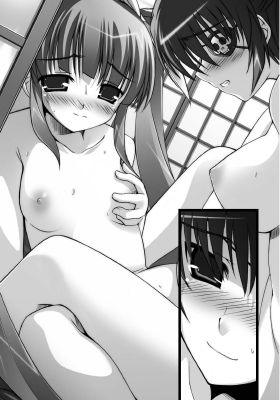
言葉少なだが、クールな美貌を愉悦に歪めて、一心不乱に腰を振りたてる。
「あっ。はぁああっ！ あ、あぁっ。あぁあああ......」
ていねいに征服された奏音の幼い身体はすぐに昇りつめてゆく。
一糸もまとわない生まれたままの姿で身体を重ねることが至福でならない。
今、一つになっているのだという満足感が二人の胸を満たす。
「......そろそろっ。姫っ。某もっ」
「ん！ 柳生もイッてっ！ あ、あたしもまたぁあっ。んはっ、あぁあああっ」
朱羅が小さくうめくと、身体を重ねて奏音の身体をかき抱いた。
大きな乳房が小さな乳房に押しつけられて形を歪ませたかと思うと、成熟した陰部からたっぷりの蜜が溢れでた。
それが幼いワレメを濡らし、そこからも甘ったるい香りの潮が外へと飛び散る。
まだ花開いたばかりの少女の身体と女盛りの身体が重なり合い、しなやかな身体が快感の名残に震える。
しばらくして、ようやく呼吸を整え終えた朱羅は、奏音を見つめて満ち足りた笑みを浮かべるが、どこか切なそうに言った。
「――今の幸せな自分を認めてしまうと、過去の某の生を否定してしまいそうで申しわけない」
「そんなの最初だけ。あたしがそんなこと考える暇ないくらいに邪魔してあげるんだから」
いたずらっぽく舌を出して奏音が屈託なく笑うと、弾む息を整えつつ、朱羅の引き締まった下腹部に手のひらを沿わせて下へ下へと移動させてゆく。
「あたしも......。柳生にしたい」
そう言うと、奏音はすでに濡れそぼったぬかるみへと細い指を差し入れた。
くちゅりという甘い音がもれでて、朱羅のクールな顔がぴくりとひきつれた。
「うっ。で、ですが......。そんな、もったいなきこと......」
「いつもしてもらってばっかりじゃ......ね？」
今度はサドっ気を垣間見せながら、奏音は指をそっとなかへと差し入れる。
ほころんだ熱い花びらがぬるぬると滑る。
その感触を楽しみながら、奏音はいきなり彼女のなかへ三本の指を突き立てた。
「っく！ は、ぅうっ!?」
激しく反応すると、朱羅は唇を噛みしめた。
普段、表情にまるで乏しい彼女の美貌が歪むのを見てとり、奏音はぞくぞくする興奮に駆られる。
指をスクリューのようにねじこんでうっとりとした声で囁く。
「んふっ。はぁ......。柳生のここ......。きつい......。されたことなかったの？ 柳生ってモテそうだからてっきりもうしてるかと」
「――惚れぬいた人としかしないと決めていましたゆえ。んくっ。っふ......」
「そなんだ。じゃ、あたしが初めてなの」
括約筋がきつく締まり、いそぎんちゃくのような突起が少女の指に絡みつく。
奏音は好奇心旺盛な瞳を輝かせながら、大胆に三本指で、まだ少し硬さを残した膣内を深く強く穿ってゆく。
「......はい。某が心を許したのはただ一人」
「うれしい......」
朱羅のひたむきさに打ち震えながら、奏音は体重を乗せると、一気に彼女の最奥まで指で貫いた。
「っ！ あっ！ っくぅう......」
かっと目を見開くと、朱羅が身体を小刻みに震わせる。
奏音の指が、彼女の処女膜を破り、透明な蜜にうっすらと赤い筋が混じる。
「――柳生の初めてもらっちゃった。あぁ、もっともっとしたい......」
熱いため息をもらしながら、奏音が指を出し入れしはじめる。
彼女の指は細く、手もまだ小さい。
最初はこなれていなかった膣が、だんだんとほぐされていくにつれ、なんと彼女の拳までなかへと収まってしまった。
「っくはぁっ！ あ、あぁああっ。んはぁあ......」
あまりもの拡張感に、限界まで見開かれた朱羅の目尻に涙が滲む。
子宮口あたりをごりっとやられると、壊れてしまうのではという一抹の恐怖すら胸を掠める。
死をも恐れない剣客のはずなのに――
本能的な恐怖が、朱羅の身体が女であるということを彼女に思い起こさせる。
「ああ、こんなに入っちゃった。やっぱ大人だから......。ここも大きいんだ」
奏音が膣内に収まりきった拳をごりごりとまわした。
激しい痛みと、それに相反する愉悦とが、同時に朱羅へと襲いかかる。
「あ、ひっ！ っくぅう......。は、はぁはぁ......。姫っ。あぁ......」
日頃、涼しい顔をしている彼女だが、今は身体中に玉の汗を浮かばせ、最愛の姫君のフィストファックに大きくのけ反る。
足の甲が丸まり、しなやかな肢体が激しく痙攣する。
「柳生。好き......。あたしのでイッて......。もっともっと、めちゃくちゃに」
朱羅の痴態に触発された奏音は、歌うように言いながら、体重を乗せ渾身の力で奥へ奥へと握り拳を穿ちつづける。
小さな拳が出たり入ったりを繰りかえす。
ぐぷっぐぽっという鈍くくぐもった音がすると同時に、わずかにアンモニア臭混じりの甘酸っぱい蜜が周囲へと撒き散らされる。
「あぁああっ！ はぁああっ。姫っ、あ、あ、あぁああっ！」
ややあって、背筋をアーチ状にすると、朱羅が目をきつくつぶって、激しいイキ声をあげた。
途端に、身体の奥から大量の潮が噴出した。
蜜壺は、奏音の拳をこれでもかというほど締めつけ、そして弛緩する。
「あは、柳生。気持ちよさそ」
少女は、小悪魔っぽい笑みを浮かべて、朱羅のイキ顔を見つめる。
朱羅は、大きな胸を上下させて、ぜえはあと荒い呼吸を繰りかえす。
「はぁはぁ......。姫......。もったいなきこと」
「もったいなくなんてないもの。あたし、柳生にしてあげられてうれしいよ」
奏音が屈託のない笑みを朱羅へと向けた。
と、朱羅は、額の汗を拳で拭いながら、あらたまった表情で彼女を見つめた。
そして、こう言った。
「――某も、姫が前の恋を忘れられるように誠心誠意ご奉仕いたす」
その愚直な言葉に、奏音は苦笑する。
「もう......。そのことなら、大丈夫だから。本当に」
「また無理をなさっているのでは――」
「いや、そうじゃなくて。あれだけの絆、見せつけられたら諦めもつくでしょ？」
朱羅は、奏音が新撰組が城へと乗りこんできたときのことを言っているのだとすぐに感づいた。
「あたしの目に狂いはなかったってこと。でしょ？ 信頼し合うからこそ、斬られることを選び、斬ることを選んだあの二人。侍の鑑、だね」
奏音の言葉に朱羅はうなずいて同意を示す。
なんだか二人とも真顔になってしまったため、奏音が茶化した物言いで、くだけた雰囲気を取り戻そうとする。
「それに、失恋って新しい恋で忘れることができるものでしょ。いっぱい愛してもらってるもん。今みたいに、ね。だから、大丈夫」
照れ笑いをしながら頬を染める少女の顎を上向かせると朱羅が真顔で言った。
「左様ですか。ならば、もっと愛すことにしましょう」
「っきゃっ。あ、い、いやっ、ち、違うのよ。柳生。そういう意味ではなくっ。今のはその。えっと......。そんなに一二〇パーセントマジに受け取らないで。って、ん、あぁああ、こら、ダメだってばぁ......。か、瓦版を仕上げないと......」
「もう一度愛し合ってからで。その分、某がまた猫の絵を描いてさしあげます」
淡々と言うと、朱羅は奏音の腰を抱きかかえるようにしてＭ字に股をひろげさせた。
開いてほどけた花弁を見つめて、次はどう征服しようかと虎視眈々と考える。
「やっ。そ、それは......。瓦版が妖しい猫もどきの画集になっちゃう。って、あ、あぁあっ。んはぁ......。ん、んんぅ」
あわてふためく奏音の唇を、再び朱羅の唇が塞いだかと思うと、二人の影が再び重なり合った。
まだ寝静まっている早朝の屯所の片隅で濃密な声が混じり合い、乙女同士のめくるめく愛の営みが再開される。
オレンジ色の太陽が山の稜線から顔をのぞかせ、京の町全体を炎のように燃えあがらせる。
秋も、もうそろそろ終盤に迫りつつあった。
３ 心梨×肇
夕暮れ時に京のはずれで碁盤状の通路を並行にひた走る二つの影がある。
浅葱色の羽織が夕闇にまぎれてはためく。
「肇っ！」
「はいっ！」
鋭い声を発したのは心梨。その声に応じて、肇がその場にとどまると、腰に提げた刀をすらりと抜いた。
刀の切っ先で空中に碁盤目の紋様を描きつつ鋭い声で唱える。
「臨、兵、闘、者、皆、陣、列、在、前っ！」
仄白く光り輝いた刀を前方に向かって袈裟懸けに振りおろす。
白い波動と化した剣気が前方をひた走る心梨の背中に襲いかかる。
と思いきや、心梨は力いっぱい地面を蹴り、大きく前方に跳躍する。
まさに阿吽の呼吸で、肇が繰りだした背後からの一撃をかわす。
肇の技は心梨が追っていた子供の背中に命中しそうになる。
が、刹那、子供が背後を振りかえると、けたたましい笑い声をあげて、手に持った手毬を白い波動に向かって投げつけた。
手毬が破裂し、激しい火花が飛び散り、闇に慣れた視界を奪う。
「おにーちゃん、おねーちゃん。遊んでクレルノ？」
残忍な目を細めると、おかっぱ頭の少女がにぃっと不気味な笑みを顔全体に浮かべて肇へと飛びかかる。
しかし、いつの間にやら、少女の背後へとまわりこんだ心梨が、神経を集中させ、刀を真上から真下へと振りおろした。
そこで初めて少女は、先ほどの一撃が足止めのためのものだったと知る。
「天然梨心流最奥義――蒼天月破斬っ」
白よりも銀色と言ったほうが相応しい輝きが心梨の刀身からあふれでる。
「いやいやいやぁあああああああああああああああ」
斬られることを覚悟した少女が空気をつんざく悲鳴をあげて顔を覆う。
しかし、痛みもなにも感じない。血飛沫さえあがらない。
驚いた彼女が目を開くと、眠るように横たわった自分の身体がそこにあった。斬られたはずなのに、外傷はまったくない。
魂となってかりそめの器から抜けでた少女の身体は半透明になっている。
「――悪霊退散、天誅、完了。成仏して、次の生はよりよき生を」
穏やかな微笑みを浮かべた心梨が、空をあおぎ見る。
それにつられて少女は彼女の見た方向を見やる。
と、紺色に染まりつつある空から一筋の光が斜めに差す。
誰に教えられたわけでもないのに、少女はそれが自分の進むべき道だと知る。
『おおきに』
無邪気な笑みを浮かべて心梨へと微笑むと、少女は軽やかに舞うように天上の光目指して飛んでゆく。
その姿を見送りつつ、心梨は刀を鞘へとしまい、目を閉じて少女に黙祷を捧げる。
少女のかりそめの身体が銀色の粒子となり、秋の涼やかな風に乗って、どこぞへと消えてゆく。
周囲に静けさが訪れた。
「――局長。お疲れ様です」
「肇もご苦労。なかなか腕をあげたな」
汗を拭いながら二人は笑い合う。
彼らは肩を並べて屯所への帰路につく。
「そりゃ、少しでも心梨に近づきたいですから。やるべきことは毎日やってますよ」
肇は力こぶを作ってみせる。
確かに、入隊時よりも逞しい筋肉が確認できる。
それはやはり男ならではの太さで、思わず心梨は男として彼を意識してしまう。
「あ、相変わらず愚直だな」
気恥ずかしさをごまかすようにぶっきらぼうに言った．
「それは局長もでしょう？ 悪霊を斬らずに成仏させる最奥義を得たからといって、任務の仕上げは全部自分がやるなんて無茶すぎですし」
「そうは言うが、皆が支えてくれるから。さほど疲れてはおらんぞ」
「またそうやって無理をしようとする。油断も隙もないっていうか。心配するほうの身にもなってください」
「いや、今度の今度は無理をしているわけではない。いろいろ学んだからな」
夜空を見上げると、心梨はしみじみと呟いた。
彼女のまなざしの延長線上、天頂には北極星が瞬いている。
近くを流れる川のせせらぎしか聞こえない。
と、不意に、心梨が思い立ったように足をとめた。
そして、躊躇いがちに肇の着物の袖を摘んで引っ張る。
「ん？ どうしました？」
「――ちょっと休んでいかぬか？ 少々疲れた」
視線を彷徨わせつつ、心梨があらかじめ用意していたかのような台詞を棒読みする。
「そんなこと言うなんて珍しいですね」
「......うるさい」
子供のように唇を尖らせると、心梨は一人方向を変えて、川の土手へと歩いてゆく。
苦笑しながら、肇はそのあとをついてゆく。
「ああ、涼しいですね」
川面を風が撫で、汗ばんだ肇たちへと涼を届ける。
二人はどちらからともなくその場に腰をおろした。
草がさやさやと揺れる音と川のせせらぎと虫の鳴き声が混ざり合って耳に心地よい。
周囲には誰もいない。
「なんだか、二人きりってのも久々ですね」
「......そうだな。最近、いろいろ忙しかったしな」
「自分で忙しくしてるんでしょう？」
「はは、まあそうかもしれぬがな」
「さすがに、明日のお休みくらいはのんびりしてくださいよ？」
「そ、それなのだがっ！」
「はい？」
いきなり力んで言った心梨が川面を睨みつけると、小さい深呼吸を繰りかえす。
しばらく、あーうーっとうなったかと思うと、頭をかいて押し黙ってしまった。
「どうしたんですか？」
「いやっ！ その！ あ、明日は暇か？」
「んー。特に予定は入ってませんが？」
「ならっ。そのだな。明日......。壬生寺で壬生狂言というのがあるのだが......」
「へえ、そうなんですか？ 行ってみたいですね」
心梨の言いたいことに感づいた肇が水を向けると、心梨は途端に胸を張って得意そうに言った。
「――だろうっ！ そうだと思ってだな。よし、行こう！ 行ったほうがよい。そうに決まってる」
「はい、行きましょう」
しばらく、上機嫌で空を見上げていた心梨が、じりじりと肇との距離をつめ、彼の肩に頭をもたせかけてきた。
長く艶やかなポニーテールがしゃらりと音をたてて風にそよぎ、甘い香りを放つ。
肇は彼女をすぐ傍に感じつつ、黙ったまま水面に映る月に目を落としている。
と、ややあって、心梨が今にもかき消えてしまいそうな小さな声で言った。
「その......。いつも誘ってもらってばかりだったしな。たまにはな......」
生真面目で超絶照れ屋な彼女が、自分のほうから逢瀬に誘うなんて。
きっと幾度となく躊躇ったに違いない。何度かは誘おうとしてやめただろう。
そういえばとここ数日を振りかえってみると、心梨はかなり挙動不審だった。
やたらそわそわしていたり、必要以上に稽古に打ちこんでみたり――
今に到るまでの過程を想像して肇は微笑む。
そして、自分の素直な気持ちを伝える。
「うれしいですよ」
「そ、そうか」
心梨は体育座りをすると、照れを隠すように膝小僧に顔を埋めた。
その様子があまりにも肇のツボにはまり、思わず彼は彼女の肩に手をまわす。
細い肩がびくっとかすかに揺れた。
余計に恥ずかしがって心梨は顔をいっそう膝に押しつけて黙りこくる。
そんな可愛らしい仕草が余計に肇を煽りたてた。
「――心梨」
そう言いながら、彼女の頭を撫でてから唇を唇へと寄せた。
心梨は一度だけ首を振って彼のキスに抵抗したが、動きをとめて、自分から目を閉じた。
互いの呼吸をすぐ傍に感じ合う。
鼓動が速まるのを意識しながら、二人は唇の表面をそっと重ね合わせるだけの優しいキスをした。
くすぐったいような心地よさが唇からひろがる。
そのまま、肇は彼女の身体を押し倒してしまおうとする。
だが、土手には砂利が多くて、背中が痛いだろう。
考えあぐねた肇は、意を決すると心梨に囁いた。
「あの......。四つん這いになってもらえませんか？」
「っぶ！ なっ！」
彼のあまりにも唐突なお願いに心梨は目を剥いた。
「な、なっ！ この私がなぜ犬畜生の格好をせねばならぬのだ」
今にも刀を引き抜きそうな彼女の勢いに圧倒され、肇は弁解する。
「やっ！ 違うんです。ここ、横になれそうな感じじゃないんで......。四つん這いだったら心梨も痛くないかなと......」
「むぅうう......」
今、肇が自分になにをしようとしているのか感づいた心梨は口を尖らせつつうなる。
「わ、私だって......。その。久しぶりであるわけだし......。だがしかし、四つん這いになるというのはさすがに......。う、うーむ」
プライドが彼女を躊躇させる。
にもかかわらず、彼女の胸はとくとくと高鳴ってもいた。
彼の言うことを聞き、この場で四つん這いになって支配される様子をありありと脳裏に浮かべると、呼吸まで乱れてしまう。
「じゃ、戻ってからにしましょうか？ すみません。無粋なことを言ってしまって」
「むぅうぅううう。確かに無粋じゃ。そんなこと口に出して頼まず、強引に誘導すればいいものを」
「え......。す、すみません......」
「ほんとにお主は、飾り気がないというか。なさすぎるというか。自分をかっこよく見せようとかあまりないな。天然すぎるというか」
「局長はかっこつけですよねー」
「わっ！ 悪かったなぁああ」
「かっこつけすぎて無理しすぎないようにしてくれればなによりです」
「う、うむ......」
「で、強引に誘導すればいいんですよね？」
「は、肇？」
不意に肇の目が鋭い光を放ったため、心梨は息を呑んだ。
肇の腕が心梨の手首を握りしめた。
そのまま手を引っ張って、彼女を前のめりにさせる。
ちょうど猫が伸びをするような体勢となる。
そのまま、彼女の着物の裾を捲りあげると、形のよいヒップをあらわにした。
さっきの戦いで汗ばんでいるせいか、ショーツの下からはみでた尻たぶが真珠のような輝きを放っている。
「あ......。肇......。あぁあっ。んっ......。こら......」
「戻ってからなんて耐えられません。かなりお預け食らってましたし。今します」
そう言うと、彼は心梨のショーツを力ずくで剥いた。
興奮のあまり、かなり力が入ってしまい、ショーツが破けてしまう。
下着の裂ける音がした途端、心梨の胸が妖しく疼く。
（こんな......。まるで強姦されているような......）
夕涼みに誰が散歩をしているかわからない見晴らしのよい土手で。
新撰組の浅葱色の羽織を着たまま、四つん這いにされ、下着を破かれるという非日常的な状況が心梨の興奮を煽りたてる。
（愚弄されているはずなのにっ。なぜ、こんなにも身体が熱くなって......）
「んぁっ！ あ、はぁあぁああ......」
心梨は四つん這いになったまま、気丈な目で肇を睨んだ。
翻ったポニーテールがしどけなく彼女の顔にかかり、首筋から背中にかけての着物の抜きの部分があらわになる。
細い首筋に絡み合った細い後れ毛が色っぽい。
まだ反抗的な目をした彼女を完全に支配したいと肇は思う。
彼は、彼女の背後からヒップを揉みはじめた。
四つん這いになっているせいで尻が力み、柔らかいというよりも強い弾力を誇る。
「んんっ。っふ......。っく......。はぁはぁ......」
乳首やクリトリスを弄られたときのような強烈な快感は得られない。
それゆえに、焦らされるような淡い心地よさに尻の丸みの表面が鳥肌立つ。
その変化にいち早く気がついた肇が、彼女の尻を左右に割り開いてみる。
セピア色のすぼまりと、その下にささやかな叢に覆われた花びらが確認できる。
まだ濡れてはいないが、肇の視線を受けて生き物のように収縮した。
「あああっ！ み、見るなっ。こら......。肇......」
いつも隠している場所を他人の目にさらけだすほど恥ずかしいことはない。
心梨は彼の手から逃れようと腰を左右に振る。
が、かえっていやらしくヒップがくねってしまい、もっとしてほしいとおねだりしているようにしか見えない。
彼女自身もそれに気づき、体内の血が沸騰するのを感じる。
「いい眺めですよ」
肇は、サドっ気を色濃く滲ませた声で言うと、ヒップの谷間に指を沿わせた。
菊座を爪でくすぐってやってから、さらに下へと移動させる。
「んぁあっ！ や、やぁっ」
突如、心梨が顔をあげて、四肢を突っ張った。
尻えくぼができ、きゅぅっと尻穴がすぼんだかと思うと、その下に息づく二枚貝の襞がわずかに動いた。
襞と襞とが重なり合った箇所から、じわっと透明な蜜が滲みでてくる。
破れたショーツの隙間からのぞく濡れた秘所は、肇の股間を硬く滾らせた。
指でめちゃくちゃにかきまわして責めてやりたいという衝動に駆られる。
が、それ以前に、牡の欲望を溜めに溜めきった肉棒が、獲物にぶちこみたいという本能を剥き出しにして、肇の褌をこれでもかというほど強く押しあげる。
それは痛いくらいの漲りで――
肇は袴の腰紐をほどくと、褌も脱ぎ捨て、大きな尻と濡れた果実を捧げる自分の彼女へと覆いかぶさった。
「あっ！ だ、だめっ。肇っ！」
彼の性急な責めに、心梨は戸惑いの声をあげる。
ワレメの表面がぬるりと滑り、天を突かんばかりに伸びた剛直が尻の谷間を撫であげた。
生々しい熱と肉棒の逞しさが滑らかな肌に触れ、心梨は唇を噛んで声をもらす。
と、肇はペニスに手を添えて愛蜜を塗りたくってから、後ろのすぼまりに狙いをつけて腰を進める。
「やっ！ あ、あぁあっ。っく！ いきなりはっ。入らない......。無理ぃいい。ん、んはぁあああっ！ あぁああぁあンっ！」
心梨が首を激しく振りたてて、悲鳴じみた声をあげる。
普段、そうそう後ろの穴は攻めないため、菊穴は緩むことなく固くすぼんだままだ。
尻丘を左右に開かれ、アヌスの皺が伸びてなかの粘膜が顔をのぞかせる。
心梨は腰を引いてしまいそうになる。
だが、無論肇が彼女を逃がさない。
「いっ！ いつぅううっ！ んふっ。ふ......」
まだいきり勃った半身が、すぼまりを割り開いていく。
心梨はくくくっと顎を反らしていき、背筋がブリッジを描く。
全身汗まみれになった心梨の身体から、玉の汗が滴り落ちる。
引っついている粘膜同士を無理やり引き剥がされ、こじ開けられていく感覚――
息がつまってしまい、あまりにも鋭すぎる痛みに思考能力が奪われる。
指で揉みほぐされていたわけでもなし。肉色に濡れた先端はなかなかスムーズに奥へと入っていかない。
「つつっ......」
ぎちぎちと軋んだ音がするような気がして、心梨は身体を強張らせた。
だが、身体を緊張させればさせるほど穴はきつく締まり、心梨を悩ませる。
（こ、怖い......。でもなんだか......。気持ちいい。なぜ......）
「んぁはっ！ 太いっ。ん、んんぁあっ。入らなっ。あ、あぁああ......」
ずぷ、っぷという音がして、一ミリずつ屹立が柔らかな肉へと沈みこんでゆく。
「大丈夫......。っく、うっ。はぁはぁ。もうちょっとで。よし、入った......」
肇は、ちょっと力を緩めると引けてしまいそうになる心梨の細い腰をしっかりと抱えこんで腰を進め、やがて半身のすべてが尻穴のなかに呑まれた。
つるりとした粘膜で覆われた熱い直腸がペニスを食むように蠕動する。
すると、ますます肉棒が力み、竿を取り巻いている血管が太くなる。
自分の内部でさらに膨張しようとする肉塊の圧を感じ、心梨は背筋をのけ反らせた。
「あっ！ っふ、んくぅう......。あ、お尻のなか、いっぱいっ。ん、はぁああ」
目と口をめいっぱい開いて、浅い呼吸を繰りかえす。
肇は、一体感に身震いしながら、深くつながったまま、腰をつかんでいた両手を前に伸ばした。
そのまま、力いっぱい胸もとを押しひろげて、大ぶりの乳房を露出させる。
「くっ！ あぁあっ。んはぁああ......。あ、あぁああっ」
二つのまあるいまろやかな肉が弾みながら姿を現わした。
背後からもぶるぶると上下に動く乳丘が確認できる。
肇は、それらを後ろからわしづかみにすると、本格的に腰を動かしはじめた。
「んぁはあっ。あっ。んぁあああっ。だ、ダメっ。こんなとこっ！ 誰かに見られてしまったらっ。んんむぅうううっ。あ、あぁっく。誰か、いるっ!?」
反対側の岸辺に人影を確認した心梨が焦って上体を起こそうとする。
だが、肇は彼女を責める手をとめない。
手にあまりまくるおっぱいを力いっぱい揉みしだきつつ、獣のように彼女を背後から征服しつづける。
「んっく！ あぁっく！」
口もとを両手で覆い、心梨は健気に声をこらえる。
「っくはぁっ。んんっ。むぅうう......。んくっ。はぁあぁ......。はじ、め......。ダメと、言うに......。んくぅうっ」
苦悶の表情を浮かべて後ろに頭を巡らそうとする心梨。
だが、両方の胸をしっかりとつかまれ揉みしだかれ、背後からはずんずんと力強く貫かれ――
逃れることもいっさいままならない。
汗に濡れたポニーテールが宙を軽やかに舞う。
「あぅう......。んくぅっ。んんむぅうう......。ん、んー、んぅううー！」
あたりは夕闇に包まれているとはいえ、胸を剥き出しにされ、四つん這いの状態で背後から猛攻を食らっている様子は、さすがに遠目にも気づかれてしまうリスクが高すぎる。
ただでさえ、彼女の身体が前後に動くたび、ヴァギナがきつく収縮してずくっずぷっといういやらしい音がする。
川のせせらぎがなんとか音をごまかしてくれてはいるものの、喘ぎ声と淫音のハーモニーがいつ人の耳に届くかしれない。
「あ、っくぅう。んくっ。や、やめっ。肇......。んぁはっ。はぁはぁああ」
心梨は、なるべく声をこらえようと、荒い息を喘ぎ声の代用とする。
だが、脳裏に白い電流が弾けるたび、口を覆う手の力が緩み、聞いている自分ですら恥ずかしい声がもれてしまう。
切羽つまった状況に追いやられつつも、普段、二人きりでされるときよりもむしろ強く感じる。
「んぁはっ。はぁあっ。んくぅうう......。んむぅう......。い、痛ぁあっ。肇。抜け！ あくぅうっ」
怪我をすることもしょっちゅうな心梨は痛みには強いほう。
それでも身体が大げさなほどに震えてしまう。
四つん這いの体勢でいられつづけるかも怪しい。
ともすれば、その場に崩れてしまいそうになるが、必死に足を踏ん張って背後からの攻めに耐えるのは、ひとえに心梨の気丈さゆえ――
「あ、あぁっ。んはぁ......。んんぅっ。はぁはぁ......。い、いい......」
後ろを押しひろげられて掘られると、痛みのなかにこらえきれないほどの痒みが混ざる。
心梨はたまらず、左手で自分の胸をわしづかみにし、もう片方の手を股間へとあてがった。
一番敏感な肉芽を彼女の細い人差し指が嬲りはじめる。
濡れた肉襞が複雑に蠢いて、貪欲に快感を貪ろうとする。
その動きが、尻穴にも伝わる。
熱い直腸に半身すべてを埋めた肇が、さらに腰を一心に動かしはじめた。
ペニスの形をかたどるように引っついてくる熱い粘膜の感触に武者震いする。
腰を律動させるたび、尻と腰とがぶつかる乾いた音があたりに響き、心梨の身体中から汗が飛び散る。
いつも、近藤家の家紋の髪留めで綺麗にまとめているポニーテールがほとんどほどけかかってしまっている。
「んくっ！ ぅううっ。はぁはぁっ！ あぁああ、痒いっ。なかぁっ。あぁあああ、いやぁああああ......」
排泄感を誘発され、心梨が端整な顔をくしゃくしゃにして狂ったように首を振る。
ついに髪留めがはずれ、艶やかな長い髪が宙にひろがりきった。
（いやっ。このままではっ！ 醜態を見せてしまいそうでっ。ダメだ。これ以上はっ。どうすればっ。でも、なんだか......。お尻の穴が熱くて痒くて......。いい......）
ぜえひゅうっと耳障りな息混じりの喘ぎ声が彼女の喉から絞りでてくる。
「んっ。あ、はぁ......。あ、アンっ、んぁあっ」
痛ければ痛いほど、それを相殺しようと、身体に悦楽を刻みこむ自慰の手が大胆になる。
獣の格好でアヌスを何度も何度も穿たれ、心梨の喘ぎ声があたりをはばからなくなる。
激しい羞恥に耐えつつ、必死に声をこらえようとしていた心梨の生々しい牝の部分が今やあらわになりつつあった。
「はぁはぁっ。肇っ。もうっ。許してっ。あ、ぁああ、あ、あはぁっ。肇ぇえっ」
今にも蕩けてしまいそうなしどけない顔――
普段の勇ましい彼女の姿はすでにどこにもない。
羞恥の下、身体に刻みこまれつづける痛みと快感とに夢中になる心梨の姿が肇の心を満たしてゆく。
「――許してもいいんですか？ 今抜いても？」
「あっ。うぅうううっ？」
いったん、腰の動きをとめた彼が、心梨に意地悪な質問をする。
一瞬、背後へと頭を巡らし、困り果てたような顔をした彼女を見逃さない。
「さあ、どうしましょうか？ 局長の命令に俺は従いますよ」
「むっ。っく、う、うぅうう。ず、ずるいぞ。こんなときに......。ン、はぁはぁ」
「で、どうしてほしいんですか？ 心梨」
「む、むぅううううううっ」
言葉にする代わりに、彼女の菊穴がペニスを絞りたてる。
その動きだけで、彼女の身体が本当はなにを欲しているか肇にはだだ漏れているが、あくまでも彼は彼女の口から聞きたがる。
「うぅっ。っく。お、お願い。このままでずっとは無理だ......。早く。そ、そのっ。むぅううっ。してっ......。っきゃ、あぁあっ！」
青ざめつつもようやくそう言い終えた心梨。
その言葉が終わるか終わらないうちに、肇が腰を前後に動かしはじめる。
不意を突かれ、彼女の唇から出てきた言葉は歓喜そのものだった。
「んっ。ぁああっ！ い、いぃっ。ンっ。っふぅうう......。はぁ......。あ、あぁああ。肇ぇえっ。もっとぉ......。あ、あぁああっ。い、イィっ。んふっ。ふはぁああ......」
深い吐息を放ちながら、心梨は淫らに腰を振り、尻穴でペニスをきゅうきゅう締めつける。
肇の前でしか見せない痴態に、肇の腰の動きもさらに速度を増してゆく。
リズミカルに身体が前後に揺れ、放屁にも似た音がもれでる。
射精の衝動がどんどんと高まってゆく。
「あはぁあっ！ もっ！ だめええっ。あ、くぅう。はぁあああ、イクっ。肇のっ。いぃいいいいっ！ イクぅううう」
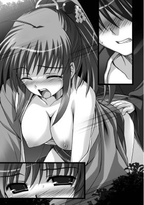
霞んだ視界から人影が消えた途端、心梨は今までこらえていた分、派手によがり身体をくねらせあられもない声をあげる。
完全に堕ちた彼女を見つめ、肇は持てる力の限りを尽くして腰を突きあげる。
「っく、あ、で、出るっ！」
「んはぁああっ！ お願いっ。出してっ！ もっ。いいっ。あ、はぁああ......。いぃっ。いいっ。あふっ。んんんんんっ」
心梨が頭をもたげて、ぶるりと身体を震わせた。
豊かな胸が中央で弾けて身悶え、ヴァギナから大量の愛液が外へと撒き散らされる。
甘酸っぱい香りが、土と草の匂いに混じる。
やがて、限界まで張りつめた肉弾頭が尻穴の奥で弾けた。
「んぁはあぁ......。熱いっ。お尻のなかっ。いっぱい......。あぁああ......」
今までなんとか足を踏ん張ってきた心梨だが、猛烈な浮遊感のあと、その場に崩れ落ちてしまう。
肇が彼女の腰を支えたため、猫が背伸びをするときのような格好となる。
尿道口から三度に分けて、特濃ミルクが放たれる。
その熱さをなかで感じながら、心梨は気だるい身体をその場に横たえた。
最後の一滴まで完全に精を出し終えてから、肇はなかから半身を引き抜く。
濃い匂いの白濁液がすぼまりから溢れでて、心梨の太腿を濡らした。
「心梨。大丈夫ですか？」
「――はっ、はぁはぁ......。ンっ。うぅ......」
肇が膝枕をしてやり、半分意識を失いかけている彼女の顔を覗きこむ。
心梨は、荒い呼吸を繰りかえしながら胸を上下させる。
「......肇。はぁ、ンはぁっ。人目があるのにっ。激しすぎだぞ？」
しばらくして、ようやく呼吸を整えた彼女が、半目になって恨みがましい視線を肇へと投げかけた。
「すみません。とまらなくなっちゃって......」
「まったく。肇はこういうときだけ下克上なのだな......」
「いやですか？」
「いや......。いやではない......。むしろ、私にこんなことができるのはおまえだけなのだから......。その......」
そこまで言うと、心梨は手を伸ばして彼の首を引き寄せた。
頭をもたげ、膝枕をしてもらった状態で、彼の唇に唇を重ねる。
汗ばんだ身体を、川から吹きつける涼しい風が撫であげてゆく。
唇を離してから、心梨は恥ずかしそうに仏頂面で呟いた。
「――頼りにしてるぞ」
「はい、まだまだ力不足ですが精進しますゆえ！」
「そうでもない。肇は心構えだけは立派な侍じゃ」
「だけはって......。なんか微妙ですね」
「この私が惚れ直したのだからよいではないか」
「――はいっ」
どちらからともなく笑みがこぼれる。
と、不意に真顔になって心梨が言った。
「――あのときのおまえは見事だったぞ。死の覚悟がいつでもできておったのだな。それこそ侍の証......。惚れ直した......」
最後のほうの声は恥じらいのためか、ほとんど聞き取れないほど小さな声だった。
だが、肇はしっかりと聞いて、頬を染める。
彼はくすりと笑うと、彼女の瞳をまっすぐ見つめて言った。
「死の覚悟をちゃんと汲み取ってくれて、ありがとうございます。さすがは局長だなと思いました」
「でも、できればな......。死ぬときは一緒で頼む。もうあんな思いはこりごりじゃ」
眉がハの字になり、彼女は困りきったような複雑な表情を浮かべた。
「俺、もっともっと強くなります」
心梨の気持ちを汲み取った彼は、力強くうなずいて空をあおいで言った。
そんな彼を頼もしく思いながら、心梨が瞳を細める。
「うむ。強くなれ。そして、私を追い抜くがいい」
「そ、それはさすがにちょっと......」
「阿呆っ！ こういうときは空気を呼んで肯定しておけばいいのだ！ もう少し、小利口にならんか」
せっかくかっこよく決めたばかりの肇が、今度は気弱なことを口にしたため、心梨はジト目になって彼の後頭部を叩いた。
「す、すみません」
「まあ......。そういう愚直なところもわりと気に入ってるのだがな」
「よかったです......」
静かな川辺で、二人はのろけつつ、互いのぬくもりを感じ合いながらたそがれる。
心梨の顔も肇の顔も凪いだ海のように穏やかで、満ち足りている。
空を埋めつくすほど無数の星が瞬き、二人の影が土手に長く伸びていた。
４ ＋カレン×義雄
深夜、心梨と肇は、足音を忍ばせて新撰組の屯所へと戻った。
久しぶりに川辺でまったりと二人きりの時間を過ごして――
いったん引っつくとなかなか離れることが惜しくてならなくて。
気がつけば夜もかなり更けていたのだ。
屯所はしんと静まりかえっている。
「もう皆、さすがに寝入っておるな」
「まあ、そうですね......」
「別にこそこそせずとも、任務が長引いたと胸を張っておればいいのに」
「いやあ......。女子というものは鋭いので......。そんな言いわけは通用しないと思います」
「むぅ......。そんなものなのか？」
二人は、まるで夜盗のように、周囲をうかがいながら足を忍ばせて屯所の廊下を歩いてゆく。
しばらくして、無事、局長部屋へとたどり着いてようやく胸を撫でおろした。
「よし、寝るとするか」
肇が行灯に灯りを灯すその横で、心梨が大きく伸びをして欠伸をした。
もうすっかり眠くなっているようで、寝ぼけ眼になっている。
と、そのときだった。
不意に肇の耳に甘い声が届いた。
それは、隣り部屋からだった。
隣り部屋は、以前は誰も使っていなかったが、最近、隊士たちが増えてきたこともあり、副長の部屋になっている。
「――んっ。はぁ......。だ、め......。善雄。んく」
「............」
一瞬で、肇の神経が異様なほどに研ぎ澄まされる。
彼の心臓がどくんっと高鳴った。
（善雄と副長か......）
あわてて、心梨を見るも、彼女は隣りの部屋の様子にまるで気づいていないようだ。
すでに布団を敷いて、むにゃむにゃ言いながらそのなかへ潜りこもうとしている。
普段、気を張っている反動か、彼女は眠る前と寝起きだけは驚くほどに鈍く、無防備になるのだ。
「局長たちが戻って......。あ、はぁあ......。胸、そんなにしたら。やぁ......」
「大丈夫ですよ。声こらえてください。できますよね？」
「え、ええ......。っく、ん、はぁはぁ......」
（全然、大丈夫じゃないぞ！ 聞こえてるしっ！）
肇は、心のなかで悪友に激しい突っこみを入れた。
が、悶々と想像してしまう。カレンのたっぷりとした胸に善雄の指が深く沈みこみ、いやらしく形を変えつづける様を――
おっぱい星人の彼のことだ。
ねっちりと副長の巨乳を弄び、嬲りつづけているのだろう。
たちまち、肇の欲望にも火がついた。
「心梨――」
彼は、すでに頭で半分舟を漕いでいる心梨の手首を強く握りしめた。
そのまま、彼女の手を引き寄せて抱きしめる。
「むにゃ？ え、は、肇っ!?」
獰猛な欲望に突き動かされ、肇は彼女の着物の胸もとを左右に力ずくで割り開いた。
「っ！」
まろやかな二つの丘がたゆんっと飛びだす。
そのＦカップに、肇はむしゃぶりつく。
「んぁ......。な、なにを......。もう、さっきあれほど。したでは......ないか」
乳首にちゅぅっと吸いつかれ、乳房自体を引っ張り伸ばされた心梨は、ぴくぴくっと鋭敏な反応を見せる。
川辺でたっぷり愛撫した名残がまだあるようだ。
さっきよりもずっと敏感になっている。
「んんんっ！」
頬を染めた心梨が、すぐに甘い声をもらして身体を震わせた。
乳首をちょっとかじって吸っただけで、すでに軽く達してしまったらしい。
「あ、はぁはぁああ......。んぅうう......」
半分、寝ぼけているため、目がとろんとしている。
そんな状態でイッたためか、まるで酩酊しているようにも見える。
無防備すぎるほど無防備な彼女の様子に触発され、肇はすぐにでも彼女をめちゃくちゃにしたくなる。
「声だけ気をつけてくださいね」
「む......。ぅう？」
肇が彼女の腰を抱えこみつつ耳もとで囁くが、考えが追いつかないらしく、心梨は子供のように小首を傾げる。
が、すぐに目をめいっぱい見開いて、口を大きく開いた。
「っく、あはっ!?」
「しっ。静かに――」
「はぁはぁあああ......。そんな、こと、言ったって......。ん、はぁ、あはぁあ」
口もとを懸命に覆う心梨だが、悩ましい吐息混じりの声がもれでてしまう。
いきなり、肇が彼女の股間に猛った漲りを突き立てようとしたのだ。
「ま、まだそんなに濡れてっ。ないっ！ のにっ。ん、ん、んぅううっ」
力ずくで、まだ用意が整っていない秘所に半身をねじこもうとすると、肉棒がたわみ折れてしまいそうな錯覚を肇は覚える。
だが、それでもその場に立ったまま、心梨の片足を持ちあげ、斜め上へと腰を突きあげていく。
意識がぼんやりと霞むなか、無理やりに肇に犯されている気がして、なんともいえない妖しい興奮に心梨の胸が熱を帯びる。
立たされたまま、一番奥を力いっぱい貫かれて、心梨は息ができなくなってしまう。
「くぁっ、はぁはぁ......。あ、あ、あ......」
身体を強張らせ、声を必死にこらえながら喘ぐ。
濡れていない蜜壺を限界まで割り開かれ、いつもよりもずっと太いモノが突き刺さっているような気がしてならない。
（うぁ......。は、肇の、ふ、太い......。太すぎるっ）
それは、初めてを失ったときの感覚にも似ていた。
やがて、肇が、肉の刀身に吸いついてくるような膣圧に逆らって腰を動かしはじめる。
（っちょ、待てよ......。肇たちもやってるとか!? マジかっ!?）
一方、隣りの部屋でカレンの胸の谷間に顔を押しつけて、左右からしっとりとしたおっぱいに顔をはたかれて悦んでいた善雄も異変に気がついていた。
カレンの乳首を両方の指で摘み、ねじってやりながらも隣りの部屋に耳をそばだてる。
湿った水音と局長の弾んだ息遣いに加え、時折、鼻から抜けるような甘い声がかすかに聞こえてくる。
（俺らがやってるのがバレたか......。つか、負けてらんねえ）
幼なじみに対する妙な闘争心に燃えた善雄が、たっぷりと大きな胸を苛めに苛められて、半ば放心状態になっているカレンの頬を優しく撫でた。
すでに、彼女の胸は激しい愛撫にピンク色に染まり、いたるところにキスマークが刻みこまれている。
唾液と汗で濡れきった乳房が、行灯のオレンジ色の光を受け、滑らかな光沢を放つ。
「んはぁ......。おっぱいは......。これ以上はだめですわぁ......」
何度も何度も達したせいで、すでにとろんとした瞳を細めてカレンが甘えるような声を出す。
善雄は、人差し指を口に立てて彼女へと注意をうながす。
「声こらえてください......」
そう言ってから、善雄はあぐらをかいたまま褌をほどいた。
すでにずいぶんと前から雄渾に育った雄々しい肉棒が姿を現わす。
ぬらぬらと光った先端が、誇らしげに天井に向かってそそり勃っている。
善雄は、彼女の腰を引き寄せた。
先端がぬちゅりとラビアに沈みこむと、そのままずぷっというくぐもった音をたてて蜜壺のなかへと収まってゆく。
「んぁ......。はぁああぁあああんっ」
胸ばかりを小一時間苛められ、焦らされつづけてきたカレンの唇から歓喜の声がもれでた。
切なげに眉根を寄せて、喉もとを思いきり反らす。
長い髪が、彼女のうなじや乳房に張りついてしどけない様相を呈している。
向かい合わせの座位となり、自重とさらには善雄の腰の突きあげによって、一番奥を力いっぱい貫かれて、カレンは息ができなくなってしまう。
「くぁっ、はぁはぁ......。あ、あ、あ......。善雄ぉ......。っあ、ンっ！」
最後の声は、半ば悲鳴じみたものだった。
善雄が腰を思いきり突きあげたのだ。
そのまま、彼は激しく腰を上下に律動しはじめた。
彼の膝の上で、熟れた肢体が頼りなく揺れ動く。
（あぁああっ。なんでこんなに激しくっ！ こんなのだめ......。す、すぐにイッてしまいますわっ）
カレンは水ようかんのように、始終形を変え上下に波打つ自分の乳房を見つめながら、断続的に真下から叩きこまれる灼熱の鉄槌に打ち震える。
脳裏が真っ赤に染めあげられ、腰を突きあげられるたび、鉄鎚で後頭部を殴られたような衝撃を受け、わけがわからなくなってしまう。
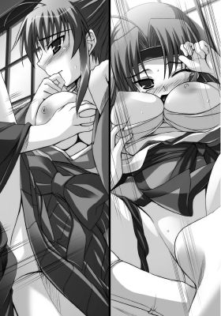
「っあぁっ。はぁあああっ。も、もうっ。はぁはぁ......。っくぅううっ！」
膀胱あたりを灼熱の肉棒で何度も何度も抉られ、痛いくらいの排尿感に苛まれた心梨はいっぱいいっぱいになってしまう。
身体が大げさなほど震える。
（も、もうだめっ！）
「はぁああ、あ、はぁあああああぁあああっ！」
口もとを両手で覆いつつ、心梨は顔をくしゃくしゃにして背中をのけ反らせた。
太い衝撃を思いっきり断続的に叩きこまれ、すっかり痺れきった子宮口。
心梨の絶頂の兆しを感じ取った肇が、そこをこれでもかというほど強くノックする。
熱い強張りが、どくんっと彼女の膣内で思いきり弾ける。
「ひっ！ あ、あぁあっ、んあぁははぁああああっ！」
刹那、心梨は天井をあおぎ見て、口を覆いながらも激しく達した。
強く閉じられた両目から一筋の涙が流れ落ちる。
二人のつなぎ目からは、大量の愛蜜と精液の混じり合った白濁液がこぼれ落ち、下から心梨を責める肇の陰毛を濡らし、心梨の内腿からふくらはぎ、くるぶしへと伝わり落ちていった。
むっと濃い匂いが部屋に満ちる。
「はぁはぁ......。あ、ああぁ......。肇ぇ......」
うなだれ、身体を激しく痙攣させながら、心梨は震える声で言った。
「いつもよりもかなり感度がよくなっているようですね」
「んぁっ！ はぁあっ！」
乳首を思いっきり捻りつぶされた途端、心梨は背筋を弓なりに反らして、ひときわ高いイキ声を放った。
蜜壺が力いっぱい収縮し、半身を絞りあげ、彼女がまたも絶頂に達したことをペニスに伝える。
心梨は、肇の体にすがりつくと、そのままがくりと気を失った。
肇は、彼女を征服し終えた達成感に満たされつつ、隣りの部屋をうかがう。
「ふぁっ。はぁあ。善雄っ、ん、んあぁ......」
他方、カレンの肉感的な身体も善雄の膝の上で激しく踊っていた。
だんだんと、腰の突きあげは激しくなる一方で――
カレンは長い髪を振り乱して身悶える。
のみならず、腰を自ら妖しくくねらせ、上下に動かしていた。
一番心地よいポイントを探るようにして。
「んはぁっ。あぁあああ......。いいっ。善雄のっ。あぁあっ、もっと......」
「カレン、声、だめっスってば――」
隣りの部屋を意識しながら、善雄は彼女の口を塞ぐ。
だが、カレンはとまらない。
狂おしく首を左右に振りたてて、なにかに憑かれたように自分の胸を無茶苦茶に揉みしだきながら腰を上下に動かしつづける。
最初は善雄がカレンを征服していたはずなのに、これでは、どちらが責めているかわからない。
「そんなのっ！ もうっ、考えてられませんわっ！ は、はぁああ、あぁああんっ！」
何度もエクスタシーにさらわれ、開発されきった身体は、さらなる強い刺激を求めて、淫らに動く。
牝と化し、野性の本能を剥き出しにした大人の女が、貪欲に悦楽を貪る様は、ことのほか男の劣情をそそる。
カレンは、きゅぅっと姫洞を能動的に窄ませ、善雄の半身を絞りたててくる。
「うくっ。も、だめっス」
やがて、善雄が降参してしまう。
と、カレンはサドっ気を濃く滲ませたしどけない笑みを浮かべる。
「はぁああっ。いいのっ！ いいのよ！ 射精しなさいっ！ あぁああ、んあぁああぁああああああ」
一番奥まで突き入れられた肉弾頭が爆ぜる。
熱いスペルマが彼女のなかを白濁に染めあげた。
それらを一滴も残さず搾り取ろうと、きゅうきゅうっと蜜壺が複雑に蠢く。
途方もない絶頂感にぶるりと身震いすると、カレンはその場に崩れ落ちた。
全身の力が完全に抜け、くたりと善雄の胸に顔を埋める。
「......カレン？」
あまりにも激しい反応に驚いた善雄は、彼女の顔を覗きこんで声をかける。
が、返事はない。
安らかな寝息が聞こえてくるばかり――
善雄は、ふうっと吐息をつくと、隣りの部屋に向かって声をかけた。
「――よお、肇。おまえ、気づいてたろ？」
しばらく、返事はかえってこない。
だが、ややあって、肇がぶっきらぼうに答えた。
「そりゃ......。気づくに決まってるだろ？ 心梨は気づいてなかったみたいだが」
「こっちもカレンは気づいてなかった」
「というか、こんなこと二人にバレていたら斬られてただろ......」
「だな......。二人とも超がつくほどの恥ずかしがり屋だし。めっさ、プライド高いしな」
「今後は気をつけたほうがいい」
「でも、それもスリルな気がしてなあ......。いっそう燃えるっつーか......」
「......それは同感だがな」
「まあ、今日は引き分けってとこかな。両方気絶させたってことで」
「――次は負けん」
「ってなんの勝負だよ！」
「さあなっ」
そこまで言って、二人は軽い笑い声をあげる。
それは、在りし日の子供の頃を彷彿とさせるようないたずらっぽい笑い声で。
二人は懐かしく思う。
「まあ、これからもいろいろ楽しんでいこうぜ！」
「ああ、そうだな。まだまだ腐れ縁はつづくようだしな」
やれやれと呆れたふうに言いながらも、肇の声はうれしそうで。
それを善雄も感じ取って、にやりと笑う。
「似たような彼女を持つ同士だしな」
「女の趣味まで似るとはな」
「まあな」
小さな頃から、田舎でずっと一緒に育ってきて――
新撰組に入り、立派な侍になって名をあげることを夢見て上京してきた二人の少年は、ほんの少しだけ夢に近づけた気がして。
誇らしげに笑い合い自慢の彼女を抱きしめ、襖一枚を隔てたまま、昔の思い出や今後のことについて、時間が経つのも忘れて延々と語り明かすのだった。
穏やかな夜はゆっくりと過ぎてゆく。
エピローグ みんな一緒に
壬生寺には京からだけでなく、周囲の村からも多くの人が押し寄せていた。仏光寺通は都からの物見客であふれかえっている。
無論、目当ては春と秋に行なわれる狂言会における壬生狂言――狂言には珍しく無言で進められる劇であり、その根幹のテーマは勧善懲悪、因果応報の理。
いかにも心梨が好きそうな狂言で。ということは、肇も好きそうな狂言なわけで。
非常に自分と彼女らしい逢瀬だなと思いながら、肇は舞台を見つめていた。
源 頼光と家来の渡辺綱、藤原保昌らが鬼などの怪物を退治する物語のうちの一つ、土蜘蛛が演じられている。
頼光に扮する演じ手が、派手な立ちまわりを見せると、心梨も肇も前に身を乗りだすようにして食い入るように見てしまう。
特に、心梨は胸の前で手を合わせて目を煌めかせている。
彼女の太刀筋の華やかさは、もしかするとこういう狂言の動きやらを参考にして取り入れているのかもしれないと気づいた肇は、なんだかおかしくなって吹きだしてしまいそうになる。
「これ、肇！ なにを笑うとこか！ 真剣に見ろ！ 学べっ。これは何度見ても飽きぬ。見れば見るほど面白くなる」
心梨は、怖いくらいに真剣な顔で肇の胸倉をつかみあげる。
一般の人たちにとって、狂言は娯楽かもしれないが、彼女にとっては娯楽ではないようだ。
「す、すみませんっ」
彼女に叱られ、肇は頭をかいて再び舞台へと視線を移した。
と、そのとき、彼の目の前を白い放射状の糸が覆った。
驚いてとっさに顔の前に手を出して糸をつかむ。
演者が舞台の上から手のひらを突きだし、仕込んでおいた無数の糸を観客に向けて解き放ったのだ。
土蜘蛛の演目の一番の見所である。
「おぉ。肇。運がよいな」
「へ？」
「その糸をお守りにしておくと、金子が貯まるらしいぞ」
「おおお、そうなんですか。じゃあ俸禄があがるんですかね？」
「ははっ。それについては姫君に一計を講じてもらわねばな。うまいこと将軍に進言してくれるよう頼んでみるか？」
茶化すようにそう言うと、心梨は意味深な視線を移した。
肇がその視線を追うと、そこに朱羅と奏音の姿があった。
「うわ......。肩車って。後ろの人が見づらそうだな。ただでさえ、柳生、背高いのに」
背の低い奏音を肩車して真顔で狂言を睨むように見ている朱羅。
なにか思うところがあるのか、時折、真剣にうなずいている様子がコミカルだ。
「あの二人も妙な味を出しておるな」
「しかし、いいんですか？ 一度は局長のことを殺そうとしたのに。てか、俺らともども殺されそうになりましたが――」
「奏音に免じて許す。愛は人を狂わせる」
「え......。あの二人、やっぱその......。そうなんですか？」
アブノーマルな世界にとんと無縁だった田舎侍が、またも新しい世界を目の前に、驚きの声をあげる。
女同士の禁断の世界なんて、朴念仁の肇には想像もつかない。
「なにを今さら。相変わらず肇は鈍いのぅ」
「む、心梨に言われたくありません」
二人とも、こんな軽口を叩き合うのが楽しくて仕方ない。
小声で話しながら、狂言を楽しむ。
ややあってすべての演目が終わり、満足そうに感想を交わしながら、観客がひけてゆく。
心梨と肇も、人ごみから少し離れるように歩調を緩めて肩を並べて歩いてゆく。
「それにしても、やっぱりこういうのはよいものだな。皆、楽しそうだ」
「ですね。楽しいですよね」
「我らもこんなふうに人を楽しませるなにかを企画してもよいかもしれぬな」
「......ほぅ」
戦いに明け暮れていた彼女がこんなことを言うなんてと、肇は目を見張る。
ただ戦うだけでなく、いろんな意味で京のためになにかできたら――
そう考えるだけで、やる気が漲ってくる。
「乙女新撰組の長所を最大限に生かしたものがいいですね。どうせやるならば」
腕組みをすると、肇は考えを巡らせる。
と、そのときだった。
「ドキっ！ 女だらけの相撲大会っ！ ポロリもあるよってのはどーだ？」
「ぶ！ 善雄！」
突如、背後から背中を叩いてくる者がいた。
見れば、善雄が気安く肩を組んでくる。
「おまえは相変わらず阿呆だな......」
「そんなに誉めるなよ！」
「............」
悪友の相変わらずな様子に肇は大げさなため息をつく。
「あら、局長たちもいらしてたんですね」
「カレン。いやっ、その、こ、これはだなっ」
心梨が顔を赤らめて、肇と逢瀬をしていたことを隠そうとする。
局長という肩書きがある以上、恋愛事にうつつを抜かすなど、隊士たちに示しがつかないと常々彼女は自分に言い聞かせている。だから、二人が付き合っていることも秘密、のつもりだった。あくまでも本人たちは、だが。
が、問題なのは、普段の彼女は表情が豊かすぎるということ。
肇との仲をからかわれたりすればすぐに顔が真っ赤になるし、今もまた彼女の動揺はだだ漏れだった。
あまりにもわかりやすすぎる彼女の素直な反応にカレンは肩を竦める。
「なにももう隠す必要はないでしょう？ もうほぼ、隊士たちの前で局中恋愛を認めたようなものでしょうし」
「いっ！ いつ認めたっ！ 断じて認めてはおらぬぞ」
「んもぅ。局長ったらお茶目さんというか天然というかっ。だからこそたまらないんですけど」
潤んだ瞳で自分を見つめてくるカレンに心梨はたじろいだ。
「むむむぅうううう......」
「いいじゃないですか？ 恋はよいものです。日々が豊かになりますわ」
カレンが歌うように言う。
「か、カレンがそんなことを言うとはっ！ 結局、お主の相手は誰なのだ！」
心梨ががうっと牙を剥いた途端、その場にいた三人は口をつぐんでしまう。
善雄が気まずそうに頭をかく。
「......局長。まさか、本気で聞いてますの？」
カレンが口もとをひきつらせながら尋ねる。
と、心梨は真顔でこくりとうなずいた。
「ああ、そうだが？ どこの狸じゃ。富豪じゃ？」
「......なっ！ いつもどんな目でわたくしのことを見てますの！」
「むぅうう......。そんじょそこらの男ではカレンに釣り合わんだろう？」
心梨が胸を張って言う横で、善雄が肩を落とす。
そんな彼の肩を叩いて、肇が励ました。
と、そのときだった。
「あー、局長たちだ。やほー」
「あぁー、だぶる逢瀬ですかあ？ いいなあ」
新撰組のトレードマークである浅葱色の羽織を着た少女隊士たちが、きゃあきゃあと騒ぎながら心梨たちを取り囲んだ。
「な、なにをっ！ 違うのだ！ これは立ちまわりの研究にきただけであってだな。断じて逢瀬などではっ」
心梨が必死に弁解するが、頬を朱色に染めてあわてふためいているため、図星だったのだなとその場にいた少女たちは思い、忍び笑いをもらす。
「んで、あなたたちは、ここでなにをしてますの？ 観覧というわりにはなぜ羽織を着ているのかしら？」
カレンが腕を組むと、少女たちに尋ねた。
すると、少女たちは顔を見合わせて口々に言った。
「えぇっとー。新撰組の宣伝のために瓦版を配るように隊長から指示されてましてぇ」
「これですよー。はいどうぞっ！ 新撰組のネタ満載の瓦版っ」
手にした紙の束から一枚を心梨たちへと差しだす。
それを取り囲んで目にした途端、全員が吹きだした。
「な、ななっ。なんじゃこれはっ。内容はともかく......。この絵はなんじゃっ！」
「ぶふっ！ こりゃさすがにあんまりだろ。くわがたか？ 両生類か？ 謎の物体？いや、三角の耳に......首輪があるから。まさか猫？」
「......そもそも、なぜ新撰組の瓦版に猫が？」
「って言っても下手すぎ......。ひぃいいいっ」
善雄が忌憚ない意見を口にした途端、どこからともなく棒手裏剣が飛んでくる。
それは、善雄の喉もとを掠め、壁へと突き刺さった。
体を硬直させ青ざめきった彼が、手裏剣が飛んできた方向を見ると、そこに黒い着流し姿の朱羅と臙脂色の着物をまとった奏音がいた。
相変わらず肩車をしている。
手裏剣を放ったのは朱羅のようで、袂に手を入れ、冷酷な表情のまま、善雄を睨みつけている。
「ま、まさか、この猫もどき......。柳生が......」
「あっははー。やっぱりちょっとわからないかなあ？ でも、一生懸命描いてくれたんだから。笑っちゃダメだよ？」
奏音があっけらかんと言って笑うが、朱羅は憮然としている。
その様子がおかしくて、少女隊士たちは思わず笑ってしまう。
次の瞬間、朱羅の目がぎらつく。
「――死なすっ！」
鋭く叫ぶと、腰に提げた刀を抜いた。
それは、新撰組の隊士となった者に配布される刀である。
「きゃぁああー。怖いー」
「逃げろ逃げろー」
少女たちが楽しげな悲鳴をあげて、おどけつつ朱羅の太刀をかわす。
朱羅も完全にマジになっているというわけでなく、少女たちとまるで戯れているかのように刀を振るう。
それを見た周囲の町人たちが、手を叩いて喜び歓声を送る。
どうやら、狂言につづき、立ちまわりの見世物でもはじまったと勘違いしているらしい。
心梨たちは、その光景に目を細め、互いに顔を見合わせて朗らかに笑う。
「いっそう賑やかになったな」
そう呟く心梨は晴々とした顔をしており。
肇までうれしくなってしまう。
これからここにいる仲間たちや男前な彼女とどんなことをしていこうか。
考えただけで自分の世界がどこまでもひろがっていく気がしてわくわくする。
みんなで力を合わせればなんだってできるような気までする。
それが若さゆえの思いあがりだとしても――
できない理由を探すよりはよっぽど楽しいに違いない。
今まで感じたことのない昂揚感に肇は胸をふくらませていた。
と、不意に心梨と視線が交わる。
二人は、互いに微笑み合うと、隊士たちに見えないようにそっと手を握り合うのだった。
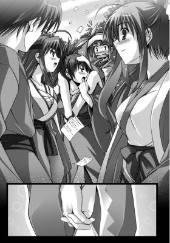
ＥＮＤ
乙女新撰組～恋する秘剣
2010/10/1 電子版発行
著 者 みかづき紅月
挿 絵 YUKIRIN
発 行 フランス書院
東京都千代田区飯田橋３－３－１
本データには購買者を特定できる個別のシリアル番号が刻印されています。複製・頒布・転売等、著作権を侵害する行為は法律で禁じられており、違反した場合は刑事罰および民事罰を招来することになります。
(c)2010 Kohgetsu Mikazuki, YUKIRIN, Printed in Japan.